<!DOCTYPE html>
<html>
<head>
    
    <meta http-equiv="content-type" content="text/html; charset=UTF-8" />
    
        <script>
            L_NO_TOUCH = false;
            L_DISABLE_3D = false;
        </script>
    
    <style>html, body {width: 100%;height: 100%;margin: 0;padding: 0;}</style>
    <style>#map {position:absolute;top:0;bottom:0;right:0;left:0;}</style>
    <script src="https://cdn.jsdelivr.net/npm/leaflet@1.9.3/dist/leaflet.js"></script>
    <script src="https://code.jquery.com/jquery-1.12.4.min.js"></script>
    <script src="https://cdn.jsdelivr.net/npm/bootstrap@5.2.2/dist/js/bootstrap.bundle.min.js"></script>
    <script src="https://cdnjs.cloudflare.com/ajax/libs/Leaflet.awesome-markers/2.0.2/leaflet.awesome-markers.js"></script>
    <link rel="stylesheet" href="https://cdn.jsdelivr.net/npm/leaflet@1.9.3/dist/leaflet.css"/>
    <link rel="stylesheet" href="https://cdn.jsdelivr.net/npm/bootstrap@5.2.2/dist/css/bootstrap.min.css"/>
    <link rel="stylesheet" href="https://netdna.bootstrapcdn.com/bootstrap/3.0.0/css/bootstrap.min.css"/>
    <link rel="stylesheet" href="https://cdn.jsdelivr.net/npm/@fortawesome/fontawesome-free@6.2.0/css/all.min.css"/>
    <link rel="stylesheet" href="https://cdnjs.cloudflare.com/ajax/libs/Leaflet.awesome-markers/2.0.2/leaflet.awesome-markers.css"/>
    <link rel="stylesheet" href="https://cdn.jsdelivr.net/gh/python-visualization/folium/folium/templates/leaflet.awesome.rotate.min.css"/>
    
            <meta name="viewport" content="width=device-width,
                initial-scale=1.0, maximum-scale=1.0, user-scalable=no" />
            <style>
                #map_e3037ef08b9763c8998e27844b8617dd {
                    position: relative;
                    width: 100.0%;
                    height: 100.0%;
                    left: 0.0%;
                    top: 0.0%;
                }
                .leaflet-container { font-size: 1rem; }
            </style>
        
</head>
<body>
    
    
            <div class="folium-map" id="map_e3037ef08b9763c8998e27844b8617dd" ></div>
        
</body>
<script>
    
    
            var map_e3037ef08b9763c8998e27844b8617dd = L.map(
                "map_e3037ef08b9763c8998e27844b8617dd",
                {
                    center: [0, 0],
                    crs: L.CRS.EPSG3857,
                    zoom: 1,
                    zoomControl: true,
                    preferCanvas: false,
                }
            );

            

        
    
            var tile_layer_94bcd44e8b54515c7b08eba6de268a1c = L.tileLayer(
                "https://stamen-tiles-{s}.a.ssl.fastly.net/terrain/{z}/{x}/{y}.jpg",
                {"attribution": "Map tiles by \u003ca target=\"_blank\" href=\"http://stamen.com\"\u003eStamen Design\u003c/a\u003e, under \u003ca target=\"_blank\" href=\"http://creativecommons.org/licenses/by/3.0\"\u003eCC BY 3.0\u003c/a\u003e. Data by \u0026copy; \u003ca target=\"_blank\" href=\"http://openstreetmap.org\"\u003eOpenStreetMap\u003c/a\u003e, under \u003ca target=\"_blank\" href=\"http://creativecommons.org/licenses/by-sa/3.0\"\u003eCC BY SA\u003c/a\u003e.", "detectRetina": false, "maxNativeZoom": 18, "maxZoom": 18, "minZoom": 0, "noWrap": false, "opacity": 1, "subdomains": "abc", "tms": false}
            ).addTo(map_e3037ef08b9763c8998e27844b8617dd);
        
    
            var circle_marker_afd2e0ca47d75ab3d4c5f3bfbcb23822 = L.circleMarker(
                [51.23, 74.92598155],
                {"bubblingMouseEvents": true, "color": "orange", "dashArray": null, "dashOffset": null, "fill": true, "fillColor": "orange", "fillOpacity": 0.2, "fillRule": "evenodd", "lineCap": "round", "lineJoin": "round", "opacity": 1.0, "radius": 8, "stroke": true, "weight": 3}
            ).addTo(map_e3037ef08b9763c8998e27844b8617dd);
        
    
        var popup_268b0f0502d06595bac786e045fcd406 = L.popup({"maxWidth": "100%"});

        
            
                circle_marker_afd2e0ca47d75ab3d4c5f3bfbcb23822.once('click', function() {
                    popup_268b0f0502d06595bac786e045fcd406.setContent($(`<div id="html_c4af40e97e2539201b1587938fd040d7" style="width: 100.0%; height: 100.0%;">Northern long-tailed tit - Aegithalos caudatus cluster 5  </div>`)[0]);
                });
            
        

        circle_marker_afd2e0ca47d75ab3d4c5f3bfbcb23822.bindPopup(popup_268b0f0502d06595bac786e045fcd406)
        ;

        
    
    
            var circle_marker_cffbdb354a073165eea355b956c0440a = L.circleMarker(
                [-2.89, 21.5446615],
                {"bubblingMouseEvents": true, "color": "orange", "dashArray": null, "dashOffset": null, "fill": true, "fillColor": "orange", "fillOpacity": 0.2, "fillRule": "evenodd", "lineCap": "round", "lineJoin": "round", "opacity": 1.0, "radius": 8, "stroke": true, "weight": 3}
            ).addTo(map_e3037ef08b9763c8998e27844b8617dd);
        
    
        var popup_50de7abd5206a707d5739ac23b23c19f = L.popup({"maxWidth": "100%"});

        
            
                circle_marker_cffbdb354a073165eea355b956c0440a.once('click', function() {
                    popup_50de7abd5206a707d5739ac23b23c19f.setContent($(`<div id="html_ff3b0e59fbc2396d91cc9e642f2d3198" style="width: 100.0%; height: 100.0%;">African darter - Anhinga rufa cluster 5  </div>`)[0]);
                });
            
        

        circle_marker_cffbdb354a073165eea355b956c0440a.bindPopup(popup_50de7abd5206a707d5739ac23b23c19f)
        ;

        
    
    
            var circle_marker_7ddd95208611cc40aaf95cf2a5d640e4 = L.circleMarker(
                [-20.53, 137.4283157],
                {"bubblingMouseEvents": true, "color": "blue", "dashArray": null, "dashOffset": null, "fill": true, "fillColor": "blue", "fillOpacity": 0.2, "fillRule": "evenodd", "lineCap": "round", "lineJoin": "round", "opacity": 1.0, "radius": 8, "stroke": true, "weight": 3}
            ).addTo(map_e3037ef08b9763c8998e27844b8617dd);
        
    
        var popup_7a988c21433bc114ad5d97f48edd972a = L.popup({"maxWidth": "100%"});

        
            
                circle_marker_7ddd95208611cc40aaf95cf2a5d640e4.once('click', function() {
                    popup_7a988c21433bc114ad5d97f48edd972a.setContent($(`<div id="html_e0db2be1caae87df24f3ca46bad432f2" style="width: 100.0%; height: 100.0%;">Magpie goose - Anseranas semipalmata cluster 2  </div>`)[0]);
                });
            
        

        circle_marker_7ddd95208611cc40aaf95cf2a5d640e4.bindPopup(popup_7a988c21433bc114ad5d97f48edd972a)
        ;

        
    
    
            var circle_marker_17c025e96ba47c2d331747aa7ca3fc43 = L.circleMarker(
                [-2.43, -63.49651513],
                {"bubblingMouseEvents": true, "color": "yellow", "dashArray": null, "dashOffset": null, "fill": true, "fillColor": "yellow", "fillOpacity": 0.2, "fillRule": "evenodd", "lineCap": "round", "lineJoin": "round", "opacity": 1.0, "radius": 8, "stroke": true, "weight": 3}
            ).addTo(map_e3037ef08b9763c8998e27844b8617dd);
        
    
        var popup_3e7daad6ecbe689fdeb4ed7237d6ac85 = L.popup({"maxWidth": "100%"});

        
            
                circle_marker_17c025e96ba47c2d331747aa7ca3fc43.once('click', function() {
                    popup_3e7daad6ecbe689fdeb4ed7237d6ac85.setContent($(`<div id="html_7317ac2fc7024604fbf68c8133d28056" style="width: 100.0%; height: 100.0%;">Collared puffbird - Bucco capensis cluster 6  </div>`)[0]);
                });
            
        

        circle_marker_17c025e96ba47c2d331747aa7ca3fc43.bindPopup(popup_3e7daad6ecbe689fdeb4ed7237d6ac85)
        ;

        
    
    
            var circle_marker_37048346ec7deea50fa5957f63c98895 = L.circleMarker(
                [34.85, -92.40576548],
                {"bubblingMouseEvents": true, "color": "blue", "dashArray": null, "dashOffset": null, "fill": true, "fillColor": "blue", "fillOpacity": 0.2, "fillRule": "evenodd", "lineCap": "round", "lineJoin": "round", "opacity": 1.0, "radius": 8, "stroke": true, "weight": 3}
            ).addTo(map_e3037ef08b9763c8998e27844b8617dd);
        
    
        var popup_f8a8c8b2c7642906d0940b6965387aff = L.popup({"maxWidth": "100%"});

        
            
                circle_marker_37048346ec7deea50fa5957f63c98895.once('click', function() {
                    popup_f8a8c8b2c7642906d0940b6965387aff.setContent($(`<div id="html_f8a69ef3a326072cc7e689ea1e0d0aa2" style="width: 100.0%; height: 100.0%;">Northern cardinal - Cardinalis cardinalis cluster 2  </div>`)[0]);
                });
            
        

        circle_marker_37048346ec7deea50fa5957f63c98895.bindPopup(popup_f8a8c8b2c7642906d0940b6965387aff)
        ;

        
    
    
            var circle_marker_04ade8110eaef185c59d1f1e71e57236 = L.circleMarker(
                [-6.85, 140.4233334],
                {"bubblingMouseEvents": true, "color": "yellow", "dashArray": null, "dashOffset": null, "fill": true, "fillColor": "yellow", "fillOpacity": 0.2, "fillRule": "evenodd", "lineCap": "round", "lineJoin": "round", "opacity": 1.0, "radius": 8, "stroke": true, "weight": 3}
            ).addTo(map_e3037ef08b9763c8998e27844b8617dd);
        
    
        var popup_bbfae9f46b5b776e09a7aeb7edbfe576 = L.popup({"maxWidth": "100%"});

        
            
                circle_marker_04ade8110eaef185c59d1f1e71e57236.once('click', function() {
                    popup_bbfae9f46b5b776e09a7aeb7edbfe576.setContent($(`<div id="html_21a793e2c6051c72ad7f422a6c3fb071" style="width: 100.0%; height: 100.0%;">Southern cassowary - Casuarius casuarius cluster 6  </div>`)[0]);
                });
            
        

        circle_marker_04ade8110eaef185c59d1f1e71e57236.bindPopup(popup_bbfae9f46b5b776e09a7aeb7edbfe576)
        ;

        
    
    
            var circle_marker_a4592e444bc1d0c593d3a8ea8db39ebb = L.circleMarker(
                [44.73, 10.54869604],
                {"bubblingMouseEvents": true, "color": "pink", "dashArray": null, "dashOffset": null, "fill": true, "fillColor": "pink", "fillOpacity": 0.2, "fillRule": "evenodd", "lineCap": "round", "lineJoin": "round", "opacity": 1.0, "radius": 8, "stroke": true, "weight": 3}
            ).addTo(map_e3037ef08b9763c8998e27844b8617dd);
        
    
        var popup_36d5a6d79bc6d9db09019e1a4791ca94 = L.popup({"maxWidth": "100%"});

        
            
                circle_marker_a4592e444bc1d0c593d3a8ea8db39ebb.once('click', function() {
                    popup_36d5a6d79bc6d9db09019e1a4791ca94.setContent($(`<div id="html_7d63411f49a1c69b50cf4a77ecb737ae" style="width: 100.0%; height: 100.0%;">Short-toed tree-creeper - Certhia brachydactyla cluster 7  </div>`)[0]);
                });
            
        

        circle_marker_a4592e444bc1d0c593d3a8ea8db39ebb.bindPopup(popup_36d5a6d79bc6d9db09019e1a4791ca94)
        ;

        
    
    
            var circle_marker_cb12466078cdf2cf3bc1ba983a30d2f8 = L.circleMarker(
                [-24.91, -59.41294646],
                {"bubblingMouseEvents": true, "color": "blue", "dashArray": null, "dashOffset": null, "fill": true, "fillColor": "blue", "fillOpacity": 0.2, "fillRule": "evenodd", "lineCap": "round", "lineJoin": "round", "opacity": 1.0, "radius": 8, "stroke": true, "weight": 3}
            ).addTo(map_e3037ef08b9763c8998e27844b8617dd);
        
    
        var popup_2c1c9174a50d1fd90c2d0d7bd06aa686 = L.popup({"maxWidth": "100%"});

        
            
                circle_marker_cb12466078cdf2cf3bc1ba983a30d2f8.once('click', function() {
                    popup_2c1c9174a50d1fd90c2d0d7bd06aa686.setContent($(`<div id="html_c7841ed4f6e2e3605e413e660d3d3e2e" style="width: 100.0%; height: 100.0%;">Southern screamer - Chauna torquata cluster 2  </div>`)[0]);
                });
            
        

        circle_marker_cb12466078cdf2cf3bc1ba983a30d2f8.bindPopup(popup_2c1c9174a50d1fd90c2d0d7bd06aa686)
        ;

        
    
    
            var circle_marker_c6c4bc085dacfa97c75b139c44c97598 = L.circleMarker(
                [-3.66, -63.81874162],
                {"bubblingMouseEvents": true, "color": "pink", "dashArray": null, "dashOffset": null, "fill": true, "fillColor": "pink", "fillOpacity": 0.2, "fillRule": "evenodd", "lineCap": "round", "lineJoin": "round", "opacity": 1.0, "radius": 8, "stroke": true, "weight": 3}
            ).addTo(map_e3037ef08b9763c8998e27844b8617dd);
        
    
        var popup_62d3ab618570c8635ae2ae1a49dfca61 = L.popup({"maxWidth": "100%"});

        
            
                circle_marker_c6c4bc085dacfa97c75b139c44c97598.once('click', function() {
                    popup_62d3ab618570c8635ae2ae1a49dfca61.setContent($(`<div id="html_61818c4a739f11ee0257b76a57126b2b" style="width: 100.0%; height: 100.0%;">American pygmy kingfisher - Chloroceryle aenea cluster 7  </div>`)[0]);
                });
            
        

        circle_marker_c6c4bc085dacfa97c75b139c44c97598.bindPopup(popup_62d3ab618570c8635ae2ae1a49dfca61)
        ;

        
    
    
            var circle_marker_4c541062f2403059e238ff5df75670f0 = L.circleMarker(
                [52.35, -128.7471879],
                {"bubblingMouseEvents": true, "color": "purple", "dashArray": null, "dashOffset": null, "fill": true, "fillColor": "purple", "fillOpacity": 0.2, "fillRule": "evenodd", "lineCap": "round", "lineJoin": "round", "opacity": 1.0, "radius": 8, "stroke": true, "weight": 3}
            ).addTo(map_e3037ef08b9763c8998e27844b8617dd);
        
    
        var popup_2ee41f866d71a799eeebdf409d903eef = L.popup({"maxWidth": "100%"});

        
            
                circle_marker_4c541062f2403059e238ff5df75670f0.once('click', function() {
                    popup_2ee41f866d71a799eeebdf409d903eef.setContent($(`<div id="html_6285cdc98cc3594d3557c2e8d6653d9f" style="width: 100.0%; height: 100.0%;">American dipper - Cinclus mexicanus cluster 4  </div>`)[0]);
                });
            
        

        circle_marker_4c541062f2403059e238ff5df75670f0.bindPopup(popup_2ee41f866d71a799eeebdf409d903eef)
        ;

        
    
    
            var circle_marker_34f2bec883459887505c8d026fbdf2eb = L.circleMarker(
                [1.55, 16.15367374],
                {"bubblingMouseEvents": true, "color": "pink", "dashArray": null, "dashOffset": null, "fill": true, "fillColor": "pink", "fillOpacity": 0.2, "fillRule": "evenodd", "lineCap": "round", "lineJoin": "round", "opacity": 1.0, "radius": 8, "stroke": true, "weight": 3}
            ).addTo(map_e3037ef08b9763c8998e27844b8617dd);
        
    
        var popup_489289fffc2f5b5dbfa40424cdbbe78f = L.popup({"maxWidth": "100%"});

        
            
                circle_marker_34f2bec883459887505c8d026fbdf2eb.once('click', function() {
                    popup_489289fffc2f5b5dbfa40424cdbbe78f.setContent($(`<div id="html_16d5b4ba083838f5b0f90d1f83f3134f" style="width: 100.0%; height: 100.0%;">Great blue turaco - Corythaeola cristata cluster 7  </div>`)[0]);
                });
            
        

        circle_marker_34f2bec883459887505c8d026fbdf2eb.bindPopup(popup_489289fffc2f5b5dbfa40424cdbbe78f)
        ;

        
    
    
            var circle_marker_093a64a48dd9a9641dc79739272b1675 = L.circleMarker(
                [-8.43, -59.5580665],
                {"bubblingMouseEvents": true, "color": "blue", "dashArray": null, "dashOffset": null, "fill": true, "fillColor": "blue", "fillOpacity": 0.2, "fillRule": "evenodd", "lineCap": "round", "lineJoin": "round", "opacity": 1.0, "radius": 8, "stroke": true, "weight": 3}
            ).addTo(map_e3037ef08b9763c8998e27844b8617dd);
        
    
        var popup_8ccf6781810e00c8d4cd1dafcbdd7ab0 = L.popup({"maxWidth": "100%"});

        
            
                circle_marker_093a64a48dd9a9641dc79739272b1675.once('click', function() {
                    popup_8ccf6781810e00c8d4cd1dafcbdd7ab0.setContent($(`<div id="html_18d61d1f19269d7adf682924f017c487" style="width: 100.0%; height: 100.0%;">Undulated tinamou - Crypturellus undulatus cluster 2  </div>`)[0]);
                });
            
        

        circle_marker_093a64a48dd9a9641dc79739272b1675.bindPopup(popup_8ccf6781810e00c8d4cd1dafcbdd7ab0)
        ;

        
    
    
            var circle_marker_fae9d59c77c83021b5b3b12e6b9d868e = L.circleMarker(
                [22.79, 49.41638171],
                {"bubblingMouseEvents": true, "color": "orange", "dashArray": null, "dashOffset": null, "fill": true, "fillColor": "orange", "fillOpacity": 0.2, "fillRule": "evenodd", "lineCap": "round", "lineJoin": "round", "opacity": 1.0, "radius": 8, "stroke": true, "weight": 3}
            ).addTo(map_e3037ef08b9763c8998e27844b8617dd);
        
    
        var popup_cca6e00be7cb30e8cfda55db9a0e210c = L.popup({"maxWidth": "100%"});

        
            
                circle_marker_fae9d59c77c83021b5b3b12e6b9d868e.once('click', function() {
                    popup_cca6e00be7cb30e8cfda55db9a0e210c.setContent($(`<div id="html_eccdb6cb335ff5a5cefbcd0f0b95488e" style="width: 100.0%; height: 100.0%;">Crab-plover - Dromas ardeola cluster 5  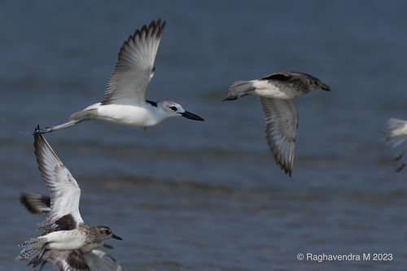</div>`)[0]);
                });
            
        

        circle_marker_fae9d59c77c83021b5b3b12e6b9d868e.bindPopup(popup_cca6e00be7cb30e8cfda55db9a0e210c)
        ;

        
    
    
            var circle_marker_1bbe9308a9623a9362941f13ec85421e = L.circleMarker(
                [3.22, -77.25524565],
                {"bubblingMouseEvents": true, "color": "pink", "dashArray": null, "dashOffset": null, "fill": true, "fillColor": "pink", "fillOpacity": 0.2, "fillRule": "evenodd", "lineCap": "round", "lineJoin": "round", "opacity": 1.0, "radius": 8, "stroke": true, "weight": 3}
            ).addTo(map_e3037ef08b9763c8998e27844b8617dd);
        
    
        var popup_f3b9cf270efdedf3e3e7ceb1477e3670 = L.popup({"maxWidth": "100%"});

        
            
                circle_marker_1bbe9308a9623a9362941f13ec85421e.once('click', function() {
                    popup_f3b9cf270efdedf3e3e7ceb1477e3670.setContent($(`<div id="html_dc944952871616965144969a7e138be0" style="width: 100.0%; height: 100.0%;">Red-headed barbet - Eubucco bourcierii cluster 7  </div>`)[0]);
                });
            
        

        circle_marker_1bbe9308a9623a9362941f13ec85421e.bindPopup(popup_f3b9cf270efdedf3e3e7ceb1477e3670)
        ;

        
    
    
            var circle_marker_21005440ab5bf0807731e488893685a3 = L.circleMarker(
                [-26.74, -24.62840533],
                {"bubblingMouseEvents": true, "color": "yellow", "dashArray": null, "dashOffset": null, "fill": true, "fillColor": "yellow", "fillOpacity": 0.2, "fillRule": "evenodd", "lineCap": "round", "lineJoin": "round", "opacity": 1.0, "radius": 8, "stroke": true, "weight": 3}
            ).addTo(map_e3037ef08b9763c8998e27844b8617dd);
        
    
        var popup_65f6b2d9a588eb14bd5d8c71139b434f = L.popup({"maxWidth": "100%"});

        
            
                circle_marker_21005440ab5bf0807731e488893685a3.once('click', function() {
                    popup_65f6b2d9a588eb14bd5d8c71139b434f.setContent($(`<div id="html_4bdd28065d2ea16cc4653127480b993c" style="width: 100.0%; height: 100.0%;">White-bellied storm-petrel - Fregetta grallaria cluster 6  </div>`)[0]);
                });
            
        

        circle_marker_21005440ab5bf0807731e488893685a3.bindPopup(popup_65f6b2d9a588eb14bd5d8c71139b434f)
        ;

        
    
    
            var circle_marker_1b6a9eb8874edcc7ecf644ad27d473e7 = L.circleMarker(
                [-3.81, -61.90936961],
                {"bubblingMouseEvents": true, "color": "purple", "dashArray": null, "dashOffset": null, "fill": true, "fillColor": "purple", "fillOpacity": 0.2, "fillRule": "evenodd", "lineCap": "round", "lineJoin": "round", "opacity": 1.0, "radius": 8, "stroke": true, "weight": 3}
            ).addTo(map_e3037ef08b9763c8998e27844b8617dd);
        
    
        var popup_234cc2bf5b646f4747556856c1aa7fdf = L.popup({"maxWidth": "100%"});

        
            
                circle_marker_1b6a9eb8874edcc7ecf644ad27d473e7.once('click', function() {
                    popup_234cc2bf5b646f4747556856c1aa7fdf.setContent($(`<div id="html_fa6e54789ffab0969a3e1522d17203e7" style="width: 100.0%; height: 100.0%;">Paradise jacamar - Galbula dea cluster 4  </div>`)[0]);
                });
            
        

        circle_marker_1b6a9eb8874edcc7ecf644ad27d473e7.bindPopup(popup_234cc2bf5b646f4747556856c1aa7fdf)
        ;

        
    
    
            var circle_marker_080f0b991fc39ae50bd8e8301f0037c9 = L.circleMarker(
                [-0.14, 19.75053465],
                {"bubblingMouseEvents": true, "color": "green", "dashArray": null, "dashOffset": null, "fill": true, "fillColor": "green", "fillOpacity": 0.2, "fillRule": "evenodd", "lineCap": "round", "lineJoin": "round", "opacity": 1.0, "radius": 8, "stroke": true, "weight": 3}
            ).addTo(map_e3037ef08b9763c8998e27844b8617dd);
        
    
        var popup_574188d463093e18911ca0298449e7ef = L.popup({"maxWidth": "100%"});

        
            
                circle_marker_080f0b991fc39ae50bd8e8301f0037c9.once('click', function() {
                    popup_574188d463093e18911ca0298449e7ef.setContent($(`<div id="html_d706dfed11ab4e924a1e03f2a8370b7e" style="width: 100.0%; height: 100.0%;">Woodland kingfisher - Halcyon senegalensis cluster 3  </div>`)[0]);
                });
            
        

        circle_marker_080f0b991fc39ae50bd8e8301f0037c9.bindPopup(popup_574188d463093e18911ca0298449e7ef)
        ;

        
    
    
            var circle_marker_a09eaaeace776e8c72c443905c5f6006 = L.circleMarker(
                [-4.37, -63.44119455],
                {"bubblingMouseEvents": true, "color": "orange", "dashArray": null, "dashOffset": null, "fill": true, "fillColor": "orange", "fillOpacity": 0.2, "fillRule": "evenodd", "lineCap": "round", "lineJoin": "round", "opacity": 1.0, "radius": 8, "stroke": true, "weight": 3}
            ).addTo(map_e3037ef08b9763c8998e27844b8617dd);
        
    
        var popup_64c655d387ddf4472fd8a1c75250f5a3 = L.popup({"maxWidth": "100%"});

        
            
                circle_marker_a09eaaeace776e8c72c443905c5f6006.once('click', function() {
                    popup_64c655d387ddf4472fd8a1c75250f5a3.setContent($(`<div id="html_f9f5caae71a4705578b2dd36e055fbab" style="width: 100.0%; height: 100.0%;">Sungrebe - Heliornis fulica cluster 5  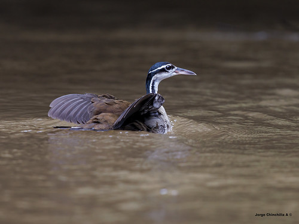</div>`)[0]);
                });
            
        

        circle_marker_a09eaaeace776e8c72c443905c5f6006.bindPopup(popup_64c655d387ddf4472fd8a1c75250f5a3)
        ;

        
    
    
            var circle_marker_3d8c36c9fd83b251f6cd4f8c6e174a75 = L.circleMarker(
                [-16.981, -75.508],
                {"bubblingMouseEvents": true, "color": "green", "dashArray": null, "dashOffset": null, "fill": true, "fillColor": "green", "fillOpacity": 0.2, "fillRule": "evenodd", "lineCap": "round", "lineJoin": "round", "opacity": 1.0, "radius": 8, "stroke": true, "weight": 3}
            ).addTo(map_e3037ef08b9763c8998e27844b8617dd);
        
    
        var popup_b1fb3f3593f77dc06161acb8e4cc14cb = L.popup({"maxWidth": "100%"});

        
            
                circle_marker_3d8c36c9fd83b251f6cd4f8c6e174a75.once('click', function() {
                    popup_b1fb3f3593f77dc06161acb8e4cc14cb.setContent($(`<div id="html_b0dcdc9978ce024cdbf0050014020b8f" style="width: 100.0%; height: 100.0%;">Hydrobates tethys - Hydrobates tethys cluster 3  </div>`)[0]);
                });
            
        

        circle_marker_3d8c36c9fd83b251f6cd4f8c6e174a75.bindPopup(popup_b1fb3f3593f77dc06161acb8e4cc14cb)
        ;

        
    
    
            var circle_marker_c09c411aa27abf5ba9ab055428e401bf = L.circleMarker(
                [7.6, 125.0489584],
                {"bubblingMouseEvents": true, "color": "purple", "dashArray": null, "dashOffset": null, "fill": true, "fillColor": "purple", "fillOpacity": 0.2, "fillRule": "evenodd", "lineCap": "round", "lineJoin": "round", "opacity": 1.0, "radius": 8, "stroke": true, "weight": 3}
            ).addTo(map_e3037ef08b9763c8998e27844b8617dd);
        
    
        var popup_6daa72dbfa61950f603e5e7685bca83a = L.popup({"maxWidth": "100%"});

        
            
                circle_marker_c09c411aa27abf5ba9ab055428e401bf.once('click', function() {
                    popup_6daa72dbfa61950f603e5e7685bca83a.setContent($(`<div id="html_95a892b93c2241b5b2f2e57689ef9c1d" style="width: 100.0%; height: 100.0%;">Cinnamon ibon - Hypocryptadius cinnamomeus cluster 4  </div>`)[0]);
                });
            
        

        circle_marker_c09c411aa27abf5ba9ab055428e401bf.bindPopup(popup_6daa72dbfa61950f603e5e7685bca83a)
        ;

        
    
    
            var circle_marker_1aac7757a0d9e9f369981af4a6c26bce = L.circleMarker(
                [-10.613203, 150.631533],
                {"bubblingMouseEvents": true, "color": "purple", "dashArray": null, "dashOffset": null, "fill": true, "fillColor": "purple", "fillOpacity": 0.2, "fillRule": "evenodd", "lineCap": "round", "lineJoin": "round", "opacity": 1.0, "radius": 8, "stroke": true, "weight": 3}
            ).addTo(map_e3037ef08b9763c8998e27844b8617dd);
        
    
        var popup_5be9bc5f6895b33e0c6233d59ecd9e6b = L.popup({"maxWidth": "100%"});

        
            
                circle_marker_1aac7757a0d9e9f369981af4a6c26bce.once('click', function() {
                    popup_5be9bc5f6895b33e0c6233d59ecd9e6b.setContent($(`<div id="html_b6c05fb2b3cb431d4b6f1d35b4d5d123" style="width: 100.0%; height: 100.0%;">Leptocoma aspasia - Leptocoma aspasia cluster 4  </div>`)[0]);
                });
            
        

        circle_marker_1aac7757a0d9e9f369981af4a6c26bce.bindPopup(popup_5be9bc5f6895b33e0c6233d59ecd9e6b)
        ;

        
    
    
            var circle_marker_8fd2c88d0ac5ee2bf2088014a6fe6089 = L.circleMarker(
                [52.38, 24.36711469],
                {"bubblingMouseEvents": true, "color": "red", "dashArray": null, "dashOffset": null, "fill": true, "fillColor": "red", "fillOpacity": 0.2, "fillRule": "evenodd", "lineCap": "round", "lineJoin": "round", "opacity": 1.0, "radius": 8, "stroke": true, "weight": 3}
            ).addTo(map_e3037ef08b9763c8998e27844b8617dd);
        
    
        var popup_5b9a87ad37a20e5d9bcf16667fb54481 = L.popup({"maxWidth": "100%"});

        
            
                circle_marker_8fd2c88d0ac5ee2bf2088014a6fe6089.once('click', function() {
                    popup_5b9a87ad37a20e5d9bcf16667fb54481.setContent($(`<div id="html_c863122e90585709187f16e3b4e72380" style="width: 100.0%; height: 100.0%;">Red crossbill - Loxia curvirostra cluster 1  </div>`)[0]);
                });
            
        

        circle_marker_8fd2c88d0ac5ee2bf2088014a6fe6089.bindPopup(popup_5b9a87ad37a20e5d9bcf16667fb54481)
        ;

        
    
    
            var circle_marker_a8afd4beb71738241a25c5285915c9c1 = L.circleMarker(
                [-5.04, 141.3716215],
                {"bubblingMouseEvents": true, "color": "yellow", "dashArray": null, "dashOffset": null, "fill": true, "fillColor": "yellow", "fillOpacity": 0.2, "fillRule": "evenodd", "lineCap": "round", "lineJoin": "round", "opacity": 1.0, "radius": 8, "stroke": true, "weight": 3}
            ).addTo(map_e3037ef08b9763c8998e27844b8617dd);
        
    
        var popup_036113892bbe89e76a8f6b2552964107 = L.popup({"maxWidth": "100%"});

        
            
                circle_marker_a8afd4beb71738241a25c5285915c9c1.once('click', function() {
                    popup_036113892bbe89e76a8f6b2552964107.setContent($(`<div id="html_1a1d85ace7d623bcc2f7336b3935c95f" style="width: 100.0%; height: 100.0%;">Fan-tailed berrypecker - Melanocharis versteri cluster 6  </div>`)[0]);
                });
            
        

        circle_marker_a8afd4beb71738241a25c5285915c9c1.bindPopup(popup_036113892bbe89e76a8f6b2552964107)
        ;

        
    
    
            var circle_marker_e056b888e7dfb5edf593c4502a91bb58 = L.circleMarker(
                [-1.7, -58.63142577],
                {"bubblingMouseEvents": true, "color": "orange", "dashArray": null, "dashOffset": null, "fill": true, "fillColor": "orange", "fillOpacity": 0.2, "fillRule": "evenodd", "lineCap": "round", "lineJoin": "round", "opacity": 1.0, "radius": 8, "stroke": true, "weight": 3}
            ).addTo(map_e3037ef08b9763c8998e27844b8617dd);
        
    
        var popup_9e8e9181c3441c19344725add4fa2a99 = L.popup({"maxWidth": "100%"});

        
            
                circle_marker_e056b888e7dfb5edf593c4502a91bb58.once('click', function() {
                    popup_9e8e9181c3441c19344725add4fa2a99.setContent($(`<div id="html_8d856792007e607c9a2b2fc6836cdb91" style="width: 100.0%; height: 100.0%;">Mcconnell's flycatcher - Mionectes macconnelli cluster 5  </div>`)[0]);
                });
            
        

        circle_marker_e056b888e7dfb5edf593c4502a91bb58.bindPopup(popup_9e8e9181c3441c19344725add4fa2a99)
        ;

        
    
    
            var circle_marker_69339b345ba916f1c619dc223d696933 = L.circleMarker(
                [-5.1, 150.8838206],
                {"bubblingMouseEvents": true, "color": "red", "dashArray": null, "dashOffset": null, "fill": true, "fillColor": "red", "fillOpacity": 0.2, "fillRule": "evenodd", "lineCap": "round", "lineJoin": "round", "opacity": 1.0, "radius": 8, "stroke": true, "weight": 3}
            ).addTo(map_e3037ef08b9763c8998e27844b8617dd);
        
    
        var popup_f47f7c312f2116792039e86b8d231fd4 = L.popup({"maxWidth": "100%"});

        
            
                circle_marker_69339b345ba916f1c619dc223d696933.once('click', function() {
                    popup_f47f7c312f2116792039e86b8d231fd4.setContent($(`<div id="html_4cb80f459b3200d2f0889ce4e16015b6" style="width: 100.0%; height: 100.0%;">Dull flycatcher - Myiagra hebetior cluster 1  </div>`)[0]);
                });
            
        

        circle_marker_69339b345ba916f1c619dc223d696933.bindPopup(popup_f47f7c312f2116792039e86b8d231fd4)
        ;

        
    
    
            var circle_marker_4e6cc2f291a56dd75d7fb5fa8b4b1738 = L.circleMarker(
                [-18.74, 48.4172555],
                {"bubblingMouseEvents": true, "color": "pink", "dashArray": null, "dashOffset": null, "fill": true, "fillColor": "pink", "fillOpacity": 0.2, "fillRule": "evenodd", "lineCap": "round", "lineJoin": "round", "opacity": 1.0, "radius": 8, "stroke": true, "weight": 3}
            ).addTo(map_e3037ef08b9763c8998e27844b8617dd);
        
    
        var popup_160560cc3906a37211dc0233bc93adf1 = L.popup({"maxWidth": "100%"});

        
            
                circle_marker_4e6cc2f291a56dd75d7fb5fa8b4b1738.once('click', function() {
                    popup_160560cc3906a37211dc0233bc93adf1.setContent($(`<div id="html_b5c856a17b1e120b0e96098998b42095" style="width: 100.0%; height: 100.0%;">Crossley's babbler - Mystacornis crossleyi cluster 7  </div>`)[0]);
                });
            
        

        circle_marker_4e6cc2f291a56dd75d7fb5fa8b4b1738.bindPopup(popup_160560cc3906a37211dc0233bc93adf1)
        ;

        
    
    
            var circle_marker_63ae3066c143c63afad050cead088153 = L.circleMarker(
                [0.97, 14.50364623],
                {"bubblingMouseEvents": true, "color": "green", "dashArray": null, "dashOffset": null, "fill": true, "fillColor": "green", "fillOpacity": 0.2, "fillRule": "evenodd", "lineCap": "round", "lineJoin": "round", "opacity": 1.0, "radius": 8, "stroke": true, "weight": 3}
            ).addTo(map_e3037ef08b9763c8998e27844b8617dd);
        
    
        var popup_252ca548a772a93f6050ddc31275069e = L.popup({"maxWidth": "100%"});

        
            
                circle_marker_63ae3066c143c63afad050cead088153.once('click', function() {
                    popup_252ca548a772a93f6050ddc31275069e.setContent($(`<div id="html_4706f16d23725920a1d65773a9bf6168" style="width: 100.0%; height: 100.0%;">Nicator chloris - Nicator chloris cluster 3  </div>`)[0]);
                });
            
        

        circle_marker_63ae3066c143c63afad050cead088153.bindPopup(popup_252ca548a772a93f6050ddc31275069e)
        ;

        
    
    
            var circle_marker_6cf5c7714623da2758ce8eeaeb66b1bc = L.circleMarker(
                [-4.54, -60.51255265],
                {"bubblingMouseEvents": true, "color": "green", "dashArray": null, "dashOffset": null, "fill": true, "fillColor": "green", "fillOpacity": 0.2, "fillRule": "evenodd", "lineCap": "round", "lineJoin": "round", "opacity": 1.0, "radius": 8, "stroke": true, "weight": 3}
            ).addTo(map_e3037ef08b9763c8998e27844b8617dd);
        
    
        var popup_c3c0670e6557d5ab42491ef6eba796f1 = L.popup({"maxWidth": "100%"});

        
            
                circle_marker_6cf5c7714623da2758ce8eeaeb66b1bc.once('click', function() {
                    popup_c3c0670e6557d5ab42491ef6eba796f1.setContent($(`<div id="html_7853706463e24a426b845e7b437bf0cf" style="width: 100.0%; height: 100.0%;">Band-tailed nighthawk - Nyctiprogne leucopyga cluster 3  </div>`)[0]);
                });
            
        

        circle_marker_6cf5c7714623da2758ce8eeaeb66b1bc.bindPopup(popup_c3c0670e6557d5ab42491ef6eba796f1)
        ;

        
    
    
            var circle_marker_a576d14cfd6cbd5fc03a760b6db2b32e = L.circleMarker(
                [11.46, 123.4680701],
                {"bubblingMouseEvents": true, "color": "orange", "dashArray": null, "dashOffset": null, "fill": true, "fillColor": "orange", "fillOpacity": 0.2, "fillRule": "evenodd", "lineCap": "round", "lineJoin": "round", "opacity": 1.0, "radius": 8, "stroke": true, "weight": 3}
            ).addTo(map_e3037ef08b9763c8998e27844b8617dd);
        
    
        var popup_e8bbce7c5f3681174a83b62cadec5c0e = L.popup({"maxWidth": "100%"});

        
            
                circle_marker_a576d14cfd6cbd5fc03a760b6db2b32e.once('click', function() {
                    popup_e8bbce7c5f3681174a83b62cadec5c0e.setContent($(`<div id="html_4fedb4144dfe63a053cf9e80aff40a36" style="width: 100.0%; height: 100.0%;">Yellow-belllied whistler - Pachycephala philippinensis cluster 5  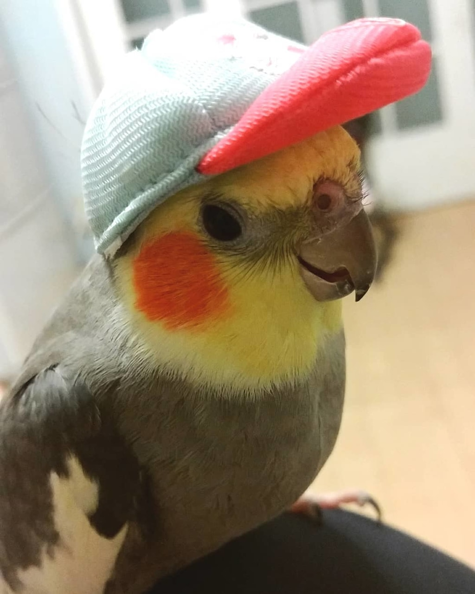</div>`)[0]);
                });
            
        

        circle_marker_a576d14cfd6cbd5fc03a760b6db2b32e.bindPopup(popup_e8bbce7c5f3681174a83b62cadec5c0e)
        ;

        
    
    
            var circle_marker_ae5d7291b674ee4801fa670d273c2857 = L.circleMarker(
                [6.81, -6.81818555],
                {"bubblingMouseEvents": true, "color": "pink", "dashArray": null, "dashOffset": null, "fill": true, "fillColor": "pink", "fillOpacity": 0.2, "fillRule": "evenodd", "lineCap": "round", "lineJoin": "round", "opacity": 1.0, "radius": 8, "stroke": true, "weight": 3}
            ).addTo(map_e3037ef08b9763c8998e27844b8617dd);
        
    
        var popup_c51be46b1ed6d7010faa588ca340ae1d = L.popup({"maxWidth": "100%"});

        
            
                circle_marker_ae5d7291b674ee4801fa670d273c2857.once('click', function() {
                    popup_c51be46b1ed6d7010faa588ca340ae1d.setContent($(`<div id="html_222224d816916882092269a1c56dc20d" style="width: 100.0%; height: 100.0%;">White-necked rockfowl - Picathartes gymnocephalus cluster 7  </div>`)[0]);
                });
            
        

        circle_marker_ae5d7291b674ee4801fa670d273c2857.bindPopup(popup_c51be46b1ed6d7010faa588ca340ae1d)
        ;

        
    
    
            var circle_marker_58077cbbec61145a9bae5cfe31848ff3 = L.circleMarker(
                [26.98, 106.0218814],
                {"bubblingMouseEvents": true, "color": "blue", "dashArray": null, "dashOffset": null, "fill": true, "fillColor": "blue", "fillOpacity": 0.2, "fillRule": "evenodd", "lineCap": "round", "lineJoin": "round", "opacity": 1.0, "radius": 8, "stroke": true, "weight": 3}
            ).addTo(map_e3037ef08b9763c8998e27844b8617dd);
        
    
        var popup_890bc924c7b06a82bcd3a231d3af8177 = L.popup({"maxWidth": "100%"});

        
            
                circle_marker_58077cbbec61145a9bae5cfe31848ff3.once('click', function() {
                    popup_890bc924c7b06a82bcd3a231d3af8177.setContent($(`<div id="html_f3c2b9f9bd8865757a86b49d4747d64b" style="width: 100.0%; height: 100.0%;">Streak-breasted scimitar babbler - Pomatorhinus ruficollis cluster 2  </div>`)[0]);
                });
            
        

        circle_marker_58077cbbec61145a9bae5cfe31848ff3.bindPopup(popup_890bc924c7b06a82bcd3a231d3af8177)
        ;

        
    
    
            var circle_marker_75e5fa74e3f268004cc2452061bbb526 = L.circleMarker(
                [41.02, 90.60841663],
                {"bubblingMouseEvents": true, "color": "red", "dashArray": null, "dashOffset": null, "fill": true, "fillColor": "red", "fillOpacity": 0.2, "fillRule": "evenodd", "lineCap": "round", "lineJoin": "round", "opacity": 1.0, "radius": 8, "stroke": true, "weight": 3}
            ).addTo(map_e3037ef08b9763c8998e27844b8617dd);
        
    
        var popup_c9045f15e7772ae64a948395ea93149a = L.popup({"maxWidth": "100%"});

        
            
                circle_marker_75e5fa74e3f268004cc2452061bbb526.once('click', function() {
                    popup_c9045f15e7772ae64a948395ea93149a.setContent($(`<div id="html_879353dff6b4ba33df683c0e3f2f8052" style="width: 100.0%; height: 100.0%;">Brown accentor - Prunella fulvescens cluster 1  </div>`)[0]);
                });
            
        

        circle_marker_75e5fa74e3f268004cc2452061bbb526.bindPopup(popup_c9045f15e7772ae64a948395ea93149a)
        ;

        
    
    
            var circle_marker_e37cb7c7ec95979a6933181d24984cb8 = L.circleMarker(
                [23.62, 97.67847922],
                {"bubblingMouseEvents": true, "color": "yellow", "dashArray": null, "dashOffset": null, "fill": true, "fillColor": "yellow", "fillOpacity": 0.2, "fillRule": "evenodd", "lineCap": "round", "lineJoin": "round", "opacity": 1.0, "radius": 8, "stroke": true, "weight": 3}
            ).addTo(map_e3037ef08b9763c8998e27844b8617dd);
        
    
        var popup_d64151ae5c3141928c82e2d7d490e135 = L.popup({"maxWidth": "100%"});

        
            
                circle_marker_e37cb7c7ec95979a6933181d24984cb8.once('click', function() {
                    popup_d64151ae5c3141928c82e2d7d490e135.setContent($(`<div id="html_6a6a0815ba333181c182aee27b1641c4" style="width: 100.0%; height: 100.0%;">Black-eared shrike babbler - Pteruthius melanotis cluster 6  </div>`)[0]);
                });
            
        

        circle_marker_e37cb7c7ec95979a6933181d24984cb8.bindPopup(popup_d64151ae5c3141928c82e2d7d490e135)
        ;

        
    
    
            var circle_marker_c4ef63004c7a69170f260cc5945c0a07 = L.circleMarker(
                [-30.82, 149.4461963],
                {"bubblingMouseEvents": true, "color": "pink", "dashArray": null, "dashOffset": null, "fill": true, "fillColor": "pink", "fillOpacity": 0.2, "fillRule": "evenodd", "lineCap": "round", "lineJoin": "round", "opacity": 1.0, "radius": 8, "stroke": true, "weight": 3}
            ).addTo(map_e3037ef08b9763c8998e27844b8617dd);
        
    
        var popup_4f4082e12231af506c8be918e81dc470 = L.popup({"maxWidth": "100%"});

        
            
                circle_marker_c4ef63004c7a69170f260cc5945c0a07.once('click', function() {
                    popup_4f4082e12231af506c8be918e81dc470.setContent($(`<div id="html_50fcfca94a6b9bd40b3c48362d6297aa" style="width: 100.0%; height: 100.0%;">Satin bowerbird - Ptilonorhynchus violaceus cluster 7  </div>`)[0]);
                });
            
        

        circle_marker_c4ef63004c7a69170f260cc5945c0a07.bindPopup(popup_4f4082e12231af506c8be918e81dc470)
        ;

        
    
    
            var circle_marker_2a52ba5ade1e1b3c25b86fb58f905ba3 = L.circleMarker(
                [-15.51, 28.09027242],
                {"bubblingMouseEvents": true, "color": "pink", "dashArray": null, "dashOffset": null, "fill": true, "fillColor": "pink", "fillOpacity": 0.2, "fillRule": "evenodd", "lineCap": "round", "lineJoin": "round", "opacity": 1.0, "radius": 8, "stroke": true, "weight": 3}
            ).addTo(map_e3037ef08b9763c8998e27844b8617dd);
        
    
        var popup_ffb5a7283842ae42762f254ab52273cb = L.popup({"maxWidth": "100%"});

        
            
                circle_marker_2a52ba5ade1e1b3c25b86fb58f905ba3.once('click', function() {
                    popup_ffb5a7283842ae42762f254ab52273cb.setContent($(`<div id="html_58a163cff90a9ceb48b26b3f11495a93" style="width: 100.0%; height: 100.0%;">Common scimitar-bill - Rhinopomastus cyanomelas cluster 7  </div>`)[0]);
                });
            
        

        circle_marker_2a52ba5ade1e1b3c25b86fb58f905ba3.bindPopup(popup_ffb5a7283842ae42762f254ab52273cb)
        ;

        
    
    
            var circle_marker_998683bb389b265bb538d8a534b81c03 = L.circleMarker(
                [-5.12, 151.3050834],
                {"bubblingMouseEvents": true, "color": "red", "dashArray": null, "dashOffset": null, "fill": true, "fillColor": "red", "fillOpacity": 0.2, "fillRule": "evenodd", "lineCap": "round", "lineJoin": "round", "opacity": 1.0, "radius": 8, "stroke": true, "weight": 3}
            ).addTo(map_e3037ef08b9763c8998e27844b8617dd);
        
    
        var popup_8da958c965612a8bece326043f9b536c = L.popup({"maxWidth": "100%"});

        
            
                circle_marker_998683bb389b265bb538d8a534b81c03.once('click', function() {
                    popup_8da958c965612a8bece326043f9b536c.setContent($(`<div id="html_8e0de22b2202f02cf8b9f96992ea118a" style="width: 100.0%; height: 100.0%;">Bismarck fantail - Rhipidura dahli cluster 1  </div>`)[0]);
                });
            
        

        circle_marker_998683bb389b265bb538d8a534b81c03.bindPopup(popup_8da958c965612a8bece326043f9b536c)
        ;

        
    
    
            var circle_marker_dc13665f24c018d8910afe4689d18061 = L.circleMarker(
                [13.47, -85.96330836],
                {"bubblingMouseEvents": true, "color": "purple", "dashArray": null, "dashOffset": null, "fill": true, "fillColor": "purple", "fillOpacity": 0.2, "fillRule": "evenodd", "lineCap": "round", "lineJoin": "round", "opacity": 1.0, "radius": 8, "stroke": true, "weight": 3}
            ).addTo(map_e3037ef08b9763c8998e27844b8617dd);
        
    
        var popup_ceb0d9425edf6b57982622b2abc050b1 = L.popup({"maxWidth": "100%"});

        
            
                circle_marker_dc13665f24c018d8910afe4689d18061.once('click', function() {
                    popup_ceb0d9425edf6b57982622b2abc050b1.setContent($(`<div id="html_a97e7d6b69fe208fedb4601e05390bb5" style="width: 100.0%; height: 100.0%;">Rosy thrush-tanager - Rhodinocichla rosea cluster 4  </div>`)[0]);
                });
            
        

        circle_marker_dc13665f24c018d8910afe4689d18061.bindPopup(popup_ceb0d9425edf6b57982622b2abc050b1)
        ;

        
    
    
            var circle_marker_5a4c149909c025c550c41d99c6c0027f = L.circleMarker(
                [59.56, -52.28149527],
                {"bubblingMouseEvents": true, "color": "pink", "dashArray": null, "dashOffset": null, "fill": true, "fillColor": "pink", "fillOpacity": 0.2, "fillRule": "evenodd", "lineCap": "round", "lineJoin": "round", "opacity": 1.0, "radius": 8, "stroke": true, "weight": 3}
            ).addTo(map_e3037ef08b9763c8998e27844b8617dd);
        
    
        var popup_81863fe9391c8a701106e1876ecb2ee4 = L.popup({"maxWidth": "100%"});

        
            
                circle_marker_5a4c149909c025c550c41d99c6c0027f.once('click', function() {
                    popup_81863fe9391c8a701106e1876ecb2ee4.setContent($(`<div id="html_7225012cce821db73c8dae86534be693" style="width: 100.0%; height: 100.0%;">Black-legged kittiwake - Rissa tridactyla cluster 7  </div>`)[0]);
                });
            
        

        circle_marker_5a4c149909c025c550c41d99c6c0027f.bindPopup(popup_81863fe9391c8a701106e1876ecb2ee4)
        ;

        
    
    
            var circle_marker_cc37cd45261dbb8a56597422974e336f = L.circleMarker(
                [-3.98, 23.60981129],
                {"bubblingMouseEvents": true, "color": "pink", "dashArray": null, "dashOffset": null, "fill": true, "fillColor": "pink", "fillOpacity": 0.2, "fillRule": "evenodd", "lineCap": "round", "lineJoin": "round", "opacity": 1.0, "radius": 8, "stroke": true, "weight": 3}
            ).addTo(map_e3037ef08b9763c8998e27844b8617dd);
        
    
        var popup_ca9d517fb839d7bf014fe73166041423 = L.popup({"maxWidth": "100%"});

        
            
                circle_marker_cc37cd45261dbb8a56597422974e336f.once('click', function() {
                    popup_ca9d517fb839d7bf014fe73166041423.setContent($(`<div id="html_344a838e76c3f6ecd1318a8b26ae2975" style="width: 100.0%; height: 100.0%;">Secretarybird - Sagittarius serpentarius cluster 7  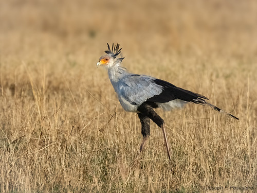</div>`)[0]);
                });
            
        

        circle_marker_cc37cd45261dbb8a56597422974e336f.bindPopup(popup_ca9d517fb839d7bf014fe73166041423)
        ;

        
    
    
            var circle_marker_e8eab968121845d08e204c138f597047 = L.circleMarker(
                [-6.34, -54.76053426],
                {"bubblingMouseEvents": true, "color": "pink", "dashArray": null, "dashOffset": null, "fill": true, "fillColor": "pink", "fillOpacity": 0.2, "fillRule": "evenodd", "lineCap": "round", "lineJoin": "round", "opacity": 1.0, "radius": 8, "stroke": true, "weight": 3}
            ).addTo(map_e3037ef08b9763c8998e27844b8617dd);
        
    
        var popup_341b76bdd7ba69a6c5b5989443afe9c1 = L.popup({"maxWidth": "100%"});

        
            
                circle_marker_e8eab968121845d08e204c138f597047.once('click', function() {
                    popup_341b76bdd7ba69a6c5b5989443afe9c1.setContent($(`<div id="html_2277a4958d21c10175efd114fd5dc7fa" style="width: 100.0%; height: 100.0%;">Glossy antshrike - Sakesphorus luctuosus cluster 7  </div>`)[0]);
                });
            
        

        circle_marker_e8eab968121845d08e204c138f597047.bindPopup(popup_341b76bdd7ba69a6c5b5989443afe9c1)
        ;

        
    
    
            var circle_marker_efea271ecd7e30e09a526638ad3e5a0d = L.circleMarker(
                [-2.88, 23.0360757],
                {"bubblingMouseEvents": true, "color": "green", "dashArray": null, "dashOffset": null, "fill": true, "fillColor": "green", "fillOpacity": 0.2, "fillRule": "evenodd", "lineCap": "round", "lineJoin": "round", "opacity": 1.0, "radius": 8, "stroke": true, "weight": 3}
            ).addTo(map_e3037ef08b9763c8998e27844b8617dd);
        
    
        var popup_1990a4c7d9f2abf3543fd6f460b4b4c4 = L.popup({"maxWidth": "100%"});

        
            
                circle_marker_efea271ecd7e30e09a526638ad3e5a0d.once('click', function() {
                    popup_1990a4c7d9f2abf3543fd6f460b4b4c4.setContent($(`<div id="html_a62e1db07b1c261c7513c85fa5bae843" style="width: 100.0%; height: 100.0%;">Hamerkop - Scopus umbretta cluster 3  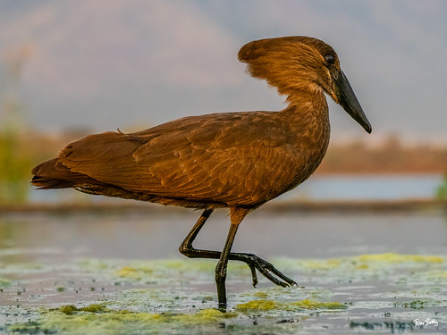</div>`)[0]);
                });
            
        

        circle_marker_efea271ecd7e30e09a526638ad3e5a0d.bindPopup(popup_1990a4c7d9f2abf3543fd6f460b4b4c4)
        ;

        
    
    
            var circle_marker_9a20e72cb4849d3ce1c330e50f1e9342 = L.circleMarker(
                [41.423068, -82.626929],
                {"bubblingMouseEvents": true, "color": "red", "dashArray": null, "dashOffset": null, "fill": true, "fillColor": "red", "fillOpacity": 0.2, "fillRule": "evenodd", "lineCap": "round", "lineJoin": "round", "opacity": 1.0, "radius": 8, "stroke": true, "weight": 3}
            ).addTo(map_e3037ef08b9763c8998e27844b8617dd);
        
    
        var popup_9a391bfc7d665d865546401b7b50592f = L.popup({"maxWidth": "100%"});

        
            
                circle_marker_9a20e72cb4849d3ce1c330e50f1e9342.once('click', function() {
                    popup_9a391bfc7d665d865546401b7b50592f.setContent($(`<div id="html_9e15dc4b0d1672fb16674d6af1fe8eca" style="width: 100.0%; height: 100.0%;">Kirtland's warbler - Setophaga kirtlandii cluster 1  </div>`)[0]);
                });
            
        

        circle_marker_9a20e72cb4849d3ce1c330e50f1e9342.bindPopup(popup_9a391bfc7d665d865546401b7b50592f)
        ;

        
    
    
            var circle_marker_3cb79626d9c2cbfabe5528c512ebb4c8 = L.circleMarker(
                [-34.74, -13.84759587],
                {"bubblingMouseEvents": true, "color": "orange", "dashArray": null, "dashOffset": null, "fill": true, "fillColor": "orange", "fillOpacity": 0.2, "fillRule": "evenodd", "lineCap": "round", "lineJoin": "round", "opacity": 1.0, "radius": 8, "stroke": true, "weight": 3}
            ).addTo(map_e3037ef08b9763c8998e27844b8617dd);
        
    
        var popup_086e8ad31be2d3271f1923620439cd69 = L.popup({"maxWidth": "100%"});

        
            
                circle_marker_3cb79626d9c2cbfabe5528c512ebb4c8.once('click', function() {
                    popup_086e8ad31be2d3271f1923620439cd69.setContent($(`<div id="html_6cecbf79565170e2a3b2ca289988f9ba" style="width: 100.0%; height: 100.0%;">Atlantic yellow-nosed albatross - Thalassarche chlororhynchos cluster 5  </div>`)[0]);
                });
            
        

        circle_marker_3cb79626d9c2cbfabe5528c512ebb4c8.bindPopup(popup_086e8ad31be2d3271f1923620439cd69)
        ;

        
    
    
            var circle_marker_7c85d1481fd6bfd975521ae16557302e = L.circleMarker(
                [28.97, 61.73841453],
                {"bubblingMouseEvents": true, "color": "blue", "dashArray": null, "dashOffset": null, "fill": true, "fillColor": "blue", "fillOpacity": 0.2, "fillRule": "evenodd", "lineCap": "round", "lineJoin": "round", "opacity": 1.0, "radius": 8, "stroke": true, "weight": 3}
            ).addTo(map_e3037ef08b9763c8998e27844b8617dd);
        
    
        var popup_07f4aa0f2bf0a0d8e873f5a9567d1c7a = L.popup({"maxWidth": "100%"});

        
            
                circle_marker_7c85d1481fd6bfd975521ae16557302e.once('click', function() {
                    popup_07f4aa0f2bf0a0d8e873f5a9567d1c7a.setContent($(`<div id="html_cad90bfa883e5cdb5cc17cb756fce941" style="width: 100.0%; height: 100.0%;">Eurasian hoopoe - Upupa epops cluster 2  </div>`)[0]);
                });
            
        

        circle_marker_7c85d1481fd6bfd975521ae16557302e.bindPopup(popup_07f4aa0f2bf0a0d8e873f5a9567d1c7a)
        ;

        
    
    
            var circle_marker_eab86956aa136fd6351da36783d1e635 = L.circleMarker(
                [33.82, 100.0822446],
                {"bubblingMouseEvents": true, "color": "purple", "dashArray": null, "dashOffset": null, "fill": true, "fillColor": "purple", "fillOpacity": 0.2, "fillRule": "evenodd", "lineCap": "round", "lineJoin": "round", "opacity": 1.0, "radius": 8, "stroke": true, "weight": 3}
            ).addTo(map_e3037ef08b9763c8998e27844b8617dd);
        
    
        var popup_7f4911fdfd2d39780b1eea71d759cce2 = L.popup({"maxWidth": "100%"});

        
            
                circle_marker_eab86956aa136fd6351da36783d1e635.once('click', function() {
                    popup_7f4911fdfd2d39780b1eea71d759cce2.setContent($(`<div id="html_04f03f99b96aff52d33a597fd47eb758" style="width: 100.0%; height: 100.0%;">Przewalski's finch - Urocynchramus pylzowi cluster 4  </div>`)[0]);
                });
            
        

        circle_marker_eab86956aa136fd6351da36783d1e635.bindPopup(popup_7f4911fdfd2d39780b1eea71d759cce2)
        ;

        
    
    
            var circle_marker_5b32e05f24bc20e816a8f89aa67df0f0 = L.circleMarker(
                [-4.25, 150.4679618],
                {"bubblingMouseEvents": true, "color": "red", "dashArray": null, "dashOffset": null, "fill": true, "fillColor": "red", "fillOpacity": 0.2, "fillRule": "evenodd", "lineCap": "round", "lineJoin": "round", "opacity": 1.0, "radius": 8, "stroke": true, "weight": 3}
            ).addTo(map_e3037ef08b9763c8998e27844b8617dd);
        
    
        var popup_bcdb0b80dfbcc732d312628e3d2c3585 = L.popup({"maxWidth": "100%"});

        
            
                circle_marker_5b32e05f24bc20e816a8f89aa67df0f0.once('click', function() {
                    popup_bcdb0b80dfbcc732d312628e3d2c3585.setContent($(`<div id="html_a50fc874e8e07f7712092505799788b7" style="width: 100.0%; height: 100.0%;">Black-headed white-eye - Zosterops hypoxanthus cluster 1  </div>`)[0]);
                });
            
        

        circle_marker_5b32e05f24bc20e816a8f89aa67df0f0.bindPopup(popup_bcdb0b80dfbcc732d312628e3d2c3585)
        ;

        
    
    
            var circle_marker_d48bf88536a771bcd6d24a8359f3e801 = L.circleMarker(
                [-5.63, 143.9752959],
                {"bubblingMouseEvents": true, "color": "green", "dashArray": null, "dashOffset": null, "fill": true, "fillColor": "green", "fillOpacity": 0.2, "fillRule": "evenodd", "lineCap": "round", "lineJoin": "round", "opacity": 1.0, "radius": 8, "stroke": true, "weight": 3}
            ).addTo(map_e3037ef08b9763c8998e27844b8617dd);
        
    
        var popup_4196b85814a8f80b7e6ae2ccc1d9f3ad = L.popup({"maxWidth": "100%"});

        
            
                circle_marker_d48bf88536a771bcd6d24a8359f3e801.once('click', function() {
                    popup_4196b85814a8f80b7e6ae2ccc1d9f3ad.setContent($(`<div id="html_3ef2898bb886d5acfff0cf9836572967" style="width: 100.0%; height: 100.0%;">Barred owlet-nightjar - Aegotheles bennettii cluster 3  </div>`)[0]);
                });
            
        

        circle_marker_d48bf88536a771bcd6d24a8359f3e801.bindPopup(popup_4196b85814a8f80b7e6ae2ccc1d9f3ad)
        ;

        
    
    
            var circle_marker_6e6ade27bb6f5b960c170014b7564a36 = L.circleMarker(
                [61.38, -19.92989098],
                {"bubblingMouseEvents": true, "color": "yellow", "dashArray": null, "dashOffset": null, "fill": true, "fillColor": "yellow", "fillOpacity": 0.2, "fillRule": "evenodd", "lineCap": "round", "lineJoin": "round", "opacity": 1.0, "radius": 8, "stroke": true, "weight": 3}
            ).addTo(map_e3037ef08b9763c8998e27844b8617dd);
        
    
        var popup_b7e61eea7676fef651ee0c2493655c18 = L.popup({"maxWidth": "100%"});

        
            
                circle_marker_6e6ade27bb6f5b960c170014b7564a36.once('click', function() {
                    popup_b7e61eea7676fef651ee0c2493655c18.setContent($(`<div id="html_41eb7b026996e1d16455d0e5439704f6" style="width: 100.0%; height: 100.0%;">Razorbill - Alca torda cluster 6  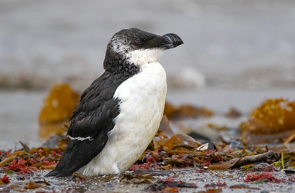</div>`)[0]);
                });
            
        

        circle_marker_6e6ade27bb6f5b960c170014b7564a36.bindPopup(popup_b7e61eea7676fef651ee0c2493655c18)
        ;

        
    
    
            var circle_marker_614d8b214689f5eb8029954c61f45e0b = L.circleMarker(
                [-5.12, 141.6053123],
                {"bubblingMouseEvents": true, "color": "orange", "dashArray": null, "dashOffset": null, "fill": true, "fillColor": "orange", "fillOpacity": 0.2, "fillRule": "evenodd", "lineCap": "round", "lineJoin": "round", "opacity": 1.0, "radius": 8, "stroke": true, "weight": 3}
            ).addTo(map_e3037ef08b9763c8998e27844b8617dd);
        
    
        var popup_852b2160bee6e914289cd26564c1bb43 = L.popup({"maxWidth": "100%"});

        
            
                circle_marker_614d8b214689f5eb8029954c61f45e0b.once('click', function() {
                    popup_852b2160bee6e914289cd26564c1bb43.setContent($(`<div id="html_57f1a9e5dd164c89a7067d5217ba68f0" style="width: 100.0%; height: 100.0%;">Rufous-naped whistler - Aleadryas rufinucha cluster 5  </div>`)[0]);
                });
            
        

        circle_marker_614d8b214689f5eb8029954c61f45e0b.bindPopup(popup_852b2160bee6e914289cd26564c1bb43)
        ;

        
    
    
            var circle_marker_b6b66ecde0471011140751bee84e370a = L.circleMarker(
                [-1.110574, 133.90944],
                {"bubblingMouseEvents": true, "color": "pink", "dashArray": null, "dashOffset": null, "fill": true, "fillColor": "pink", "fillOpacity": 0.2, "fillRule": "evenodd", "lineCap": "round", "lineJoin": "round", "opacity": 1.0, "radius": 8, "stroke": true, "weight": 3}
            ).addTo(map_e3037ef08b9763c8998e27844b8617dd);
        
    
        var popup_e06a1f7417ee1bd7d1ffc41483de44a6 = L.popup({"maxWidth": "100%"});

        
            
                circle_marker_b6b66ecde0471011140751bee84e370a.once('click', function() {
                    popup_e06a1f7417ee1bd7d1ffc41483de44a6.setContent($(`<div id="html_eab057e43591d65b24501aaa86919fb9" style="width: 100.0%; height: 100.0%;">Western bronze ground-dove - Alopecoenas beccarii cluster 7  </div>`)[0]);
                });
            
        

        circle_marker_b6b66ecde0471011140751bee84e370a.bindPopup(popup_e06a1f7417ee1bd7d1ffc41483de44a6)
        ;

        
    
    
            var circle_marker_0f34231a0b9d3b26f3e5201d96a004ef = L.circleMarker(
                [13.25, -61.19704276],
                {"bubblingMouseEvents": true, "color": "orange", "dashArray": null, "dashOffset": null, "fill": true, "fillColor": "orange", "fillOpacity": 0.2, "fillRule": "evenodd", "lineCap": "round", "lineJoin": "round", "opacity": 1.0, "radius": 8, "stroke": true, "weight": 3}
            ).addTo(map_e3037ef08b9763c8998e27844b8617dd);
        
    
        var popup_31cff1564c3ea362707bd45d7be003e0 = L.popup({"maxWidth": "100%"});

        
            
                circle_marker_0f34231a0b9d3b26f3e5201d96a004ef.once('click', function() {
                    popup_31cff1564c3ea362707bd45d7be003e0.setContent($(`<div id="html_86615cade43620af9298240efc145924" style="width: 100.0%; height: 100.0%;">Amazona guildingii - Amazona guildingii cluster 5  </div>`)[0]);
                });
            
        

        circle_marker_0f34231a0b9d3b26f3e5201d96a004ef.bindPopup(popup_31cff1564c3ea362707bd45d7be003e0)
        ;

        
    
    
            var circle_marker_b903b5a95b94007a458b6344bec9ae8b = L.circleMarker(
                [-5.08, -62.2442446],
                {"bubblingMouseEvents": true, "color": "pink", "dashArray": null, "dashOffset": null, "fill": true, "fillColor": "pink", "fillOpacity": 0.2, "fillRule": "evenodd", "lineCap": "round", "lineJoin": "round", "opacity": 1.0, "radius": 8, "stroke": true, "weight": 3}
            ).addTo(map_e3037ef08b9763c8998e27844b8617dd);
        
    
        var popup_c01447a86993bcd79ab579ffa2aff4cb = L.popup({"maxWidth": "100%"});

        
            
                circle_marker_b903b5a95b94007a458b6344bec9ae8b.once('click', function() {
                    popup_c01447a86993bcd79ab579ffa2aff4cb.setContent($(`<div id="html_7953429ff51cc48601142901b69bfdec" style="width: 100.0%; height: 100.0%;">American anhinga - Anhinga anhinga cluster 7  </div>`)[0]);
                });
            
        

        circle_marker_b903b5a95b94007a458b6344bec9ae8b.bindPopup(popup_c01447a86993bcd79ab579ffa2aff4cb)
        ;

        
    
    
            var circle_marker_77f5b382822424021906e4dee3dfd3b4 = L.circleMarker(
                [-25.5, 21.40495139],
                {"bubblingMouseEvents": true, "color": "red", "dashArray": null, "dashOffset": null, "fill": true, "fillColor": "red", "fillOpacity": 0.2, "fillRule": "evenodd", "lineCap": "round", "lineJoin": "round", "opacity": 1.0, "radius": 8, "stroke": true, "weight": 3}
            ).addTo(map_e3037ef08b9763c8998e27844b8617dd);
        
    
        var popup_6e71ec46122450cb6eb286fd9ff6f47b = L.popup({"maxWidth": "100%"});

        
            
                circle_marker_77f5b382822424021906e4dee3dfd3b4.once('click', function() {
                    popup_6e71ec46122450cb6eb286fd9ff6f47b.setContent($(`<div id="html_e0c964d7be20cf8652597d8943aec5ed" style="width: 100.0%; height: 100.0%;">Southern penduline-tit - Anthoscopus minutus cluster 1  </div>`)[0]);
                });
            
        

        circle_marker_77f5b382822424021906e4dee3dfd3b4.bindPopup(popup_6e71ec46122450cb6eb286fd9ff6f47b)
        ;

        
    
    
            var circle_marker_a4100ac7482b158d7bb8d9aa8a8c41a7 = L.circleMarker(
                [28.13, -81.40598774],
                {"bubblingMouseEvents": true, "color": "pink", "dashArray": null, "dashOffset": null, "fill": true, "fillColor": "pink", "fillOpacity": 0.2, "fillRule": "evenodd", "lineCap": "round", "lineJoin": "round", "opacity": 1.0, "radius": 8, "stroke": true, "weight": 3}
            ).addTo(map_e3037ef08b9763c8998e27844b8617dd);
        
    
        var popup_fa167f16d64eb82800662dba453ad198 = L.popup({"maxWidth": "100%"});

        
            
                circle_marker_a4100ac7482b158d7bb8d9aa8a8c41a7.once('click', function() {
                    popup_fa167f16d64eb82800662dba453ad198.setContent($(`<div id="html_6eb7414b4f4ccfc8df169dd47536e4dc" style="width: 100.0%; height: 100.0%;">Scrub jay - Aphelocoma coerulescens cluster 7  </div>`)[0]);
                });
            
        

        circle_marker_a4100ac7482b158d7bb8d9aa8a8c41a7.bindPopup(popup_fa167f16d64eb82800662dba453ad198)
        ;

        
    
    
            var circle_marker_59efc1fba8892bb3eb0f902a3c12c9f7 = L.circleMarker(
                [-10.49, -58.48455114],
                {"bubblingMouseEvents": true, "color": "blue", "dashArray": null, "dashOffset": null, "fill": true, "fillColor": "blue", "fillOpacity": 0.2, "fillRule": "evenodd", "lineCap": "round", "lineJoin": "round", "opacity": 1.0, "radius": 8, "stroke": true, "weight": 3}
            ).addTo(map_e3037ef08b9763c8998e27844b8617dd);
        
    
        var popup_492d3f5091d07cea956b0c3bc0b46120 = L.popup({"maxWidth": "100%"});

        
            
                circle_marker_59efc1fba8892bb3eb0f902a3c12c9f7.once('click', function() {
                    popup_492d3f5091d07cea956b0c3bc0b46120.setContent($(`<div id="html_3a60e8a3dfc73511a443bc89f264eaa4" style="width: 100.0%; height: 100.0%;">Limpkin - Aramus guarauna cluster 2  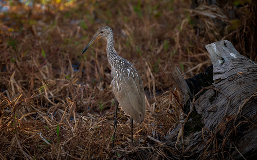</div>`)[0]);
                });
            
        

        circle_marker_59efc1fba8892bb3eb0f902a3c12c9f7.bindPopup(popup_492d3f5091d07cea956b0c3bc0b46120)
        ;

        
    
    
            var circle_marker_1d54265960a141d0fd4dde8e892fd23f = L.circleMarker(
                [-16.22, 26.32431652],
                {"bubblingMouseEvents": true, "color": "yellow", "dashArray": null, "dashOffset": null, "fill": true, "fillColor": "yellow", "fillOpacity": 0.2, "fillRule": "evenodd", "lineCap": "round", "lineJoin": "round", "opacity": 1.0, "radius": 8, "stroke": true, "weight": 3}
            ).addTo(map_e3037ef08b9763c8998e27844b8617dd);
        
    
        var popup_32dd22c9263b8b439f6577f8b971130b = L.popup({"maxWidth": "100%"});

        
            
                circle_marker_1d54265960a141d0fd4dde8e892fd23f.once('click', function() {
                    popup_32dd22c9263b8b439f6577f8b971130b.setContent($(`<div id="html_a956a39edcc3a270a6cd33395d9ec254" style="width: 100.0%; height: 100.0%;">Kori bustard - Ardeotis kori cluster 6  </div>`)[0]);
                });
            
        

        circle_marker_1d54265960a141d0fd4dde8e892fd23f.bindPopup(popup_32dd22c9263b8b439f6577f8b971130b)
        ;

        
    
    
            var circle_marker_d6e82e116f438bbcd22bc0b3941a8d54 = L.circleMarker(
                [72.47, -51.70528284],
                {"bubblingMouseEvents": true, "color": "yellow", "dashArray": null, "dashOffset": null, "fill": true, "fillColor": "yellow", "fillOpacity": 0.2, "fillRule": "evenodd", "lineCap": "round", "lineJoin": "round", "opacity": 1.0, "radius": 8, "stroke": true, "weight": 3}
            ).addTo(map_e3037ef08b9763c8998e27844b8617dd);
        
    
        var popup_d11cbd5519642c83fe83bf0674b2f004 = L.popup({"maxWidth": "100%"});

        
            
                circle_marker_d6e82e116f438bbcd22bc0b3941a8d54.once('click', function() {
                    popup_d11cbd5519642c83fe83bf0674b2f004.setContent($(`<div id="html_8235efed5e07e1f3e154b48dee365c63" style="width: 100.0%; height: 100.0%;">Ruddy turnstone - Arenaria interpres cluster 6  </div>`)[0]);
                });
            
        

        circle_marker_d6e82e116f438bbcd22bc0b3941a8d54.bindPopup(popup_d11cbd5519642c83fe83bf0674b2f004)
        ;

        
    
    
            var circle_marker_2cc3adab76f96abdde57923d2505deca = L.circleMarker(
                [-34.31, 117.480473],
                {"bubblingMouseEvents": true, "color": "green", "dashArray": null, "dashOffset": null, "fill": true, "fillColor": "green", "fillOpacity": 0.2, "fillRule": "evenodd", "lineCap": "round", "lineJoin": "round", "opacity": 1.0, "radius": 8, "stroke": true, "weight": 3}
            ).addTo(map_e3037ef08b9763c8998e27844b8617dd);
        
    
        var popup_e75b34012e3ce394aab6a329344bcbce = L.popup({"maxWidth": "100%"});

        
            
                circle_marker_2cc3adab76f96abdde57923d2505deca.once('click', function() {
                    popup_e75b34012e3ce394aab6a329344bcbce.setContent($(`<div id="html_b133e8b6738ce01ec6ff17cd8b174467" style="width: 100.0%; height: 100.0%;">Atrichornis clamosus - Atrichornis clamosus cluster 3  </div>`)[0]);
                });
            
        

        circle_marker_2cc3adab76f96abdde57923d2505deca.bindPopup(popup_e75b34012e3ce394aab6a329344bcbce)
        ;

        
    
    
            var circle_marker_1ebd31394ff51c3ddd33eacab2d3e2e2 = L.circleMarker(
                [-6.17, -68.87973623],
                {"bubblingMouseEvents": true, "color": "yellow", "dashArray": null, "dashOffset": null, "fill": true, "fillColor": "yellow", "fillOpacity": 0.2, "fillRule": "evenodd", "lineCap": "round", "lineJoin": "round", "opacity": 1.0, "radius": 8, "stroke": true, "weight": 3}
            ).addTo(map_e3037ef08b9763c8998e27844b8617dd);
        
    
        var popup_43b1f127bb41d11eb0581ad4db21c995 = L.popup({"maxWidth": "100%"});

        
            
                circle_marker_1ebd31394ff51c3ddd33eacab2d3e2e2.once('click', function() {
                    popup_43b1f127bb41d11eb0581ad4db21c995.setContent($(`<div id="html_ab948d047438e77e1c7557a9be18861d" style="width: 100.0%; height: 100.0%;">Rufous motmot - Baryphthengus martii cluster 6  </div>`)[0]);
                });
            
        

        circle_marker_1ebd31394ff51c3ddd33eacab2d3e2e2.bindPopup(popup_43b1f127bb41d11eb0581ad4db21c995)
        ;

        
    
    
            var circle_marker_03703d53f9c8fc46680df83955dbdea9 = L.circleMarker(
                [61.26, 25.87916459],
                {"bubblingMouseEvents": true, "color": "blue", "dashArray": null, "dashOffset": null, "fill": true, "fillColor": "blue", "fillOpacity": 0.2, "fillRule": "evenodd", "lineCap": "round", "lineJoin": "round", "opacity": 1.0, "radius": 8, "stroke": true, "weight": 3}
            ).addTo(map_e3037ef08b9763c8998e27844b8617dd);
        
    
        var popup_b3bb714b994c9e862f57e3cffe0f8c37 = L.popup({"maxWidth": "100%"});

        
            
                circle_marker_03703d53f9c8fc46680df83955dbdea9.once('click', function() {
                    popup_b3bb714b994c9e862f57e3cffe0f8c37.setContent($(`<div id="html_175b9f96695b2991d76652a7d9827166" style="width: 100.0%; height: 100.0%;">Bohemian waxwing - Bombycilla garrulus cluster 2  </div>`)[0]);
                });
            
        

        circle_marker_03703d53f9c8fc46680df83955dbdea9.bindPopup(popup_b3bb714b994c9e862f57e3cffe0f8c37)
        ;

        
    
    
            var circle_marker_da2ea2a67134080fb938e88269f89363 = L.circleMarker(
                [11.474642, 107.362518],
                {"bubblingMouseEvents": true, "color": "blue", "dashArray": null, "dashOffset": null, "fill": true, "fillColor": "blue", "fillOpacity": 0.2, "fillRule": "evenodd", "lineCap": "round", "lineJoin": "round", "opacity": 1.0, "radius": 8, "stroke": true, "weight": 3}
            ).addTo(map_e3037ef08b9763c8998e27844b8617dd);
        
    
        var popup_873c4a21224c5ff2a28b1e8979843a1a = L.popup({"maxWidth": "100%"});

        
            
                circle_marker_da2ea2a67134080fb938e88269f89363.once('click', function() {
                    popup_873c4a21224c5ff2a28b1e8979843a1a.setContent($(`<div id="html_7f4249f8d37b4a56e35742313db0e70d" style="width: 100.0%; height: 100.0%;">Black-headed bulbul - Brachypodius atriceps cluster 2  </div>`)[0]);
                });
            
        

        circle_marker_da2ea2a67134080fb938e88269f89363.bindPopup(popup_873c4a21224c5ff2a28b1e8979843a1a)
        ;

        
    
    
            var circle_marker_7119871131c64a278c7039a4dac440de = L.circleMarker(
                [-17.88, 48.72010715],
                {"bubblingMouseEvents": true, "color": "red", "dashArray": null, "dashOffset": null, "fill": true, "fillColor": "red", "fillOpacity": 0.2, "fillRule": "evenodd", "lineCap": "round", "lineJoin": "round", "opacity": 1.0, "radius": 8, "stroke": true, "weight": 3}
            ).addTo(map_e3037ef08b9763c8998e27844b8617dd);
        
    
        var popup_09107aa6e799ce5d9d980c994b381f9a = L.popup({"maxWidth": "100%"});

        
            
                circle_marker_7119871131c64a278c7039a4dac440de.once('click', function() {
                    popup_09107aa6e799ce5d9d980c994b381f9a.setContent($(`<div id="html_f659f7c8dc8b862fe03e2932397c7046" style="width: 100.0%; height: 100.0%;">Short-legged ground-roller - Brachypteracias leptosomus cluster 1  </div>`)[0]);
                });
            
        

        circle_marker_7119871131c64a278c7039a4dac440de.bindPopup(popup_09107aa6e799ce5d9d980c994b381f9a)
        ;

        
    
    
            var circle_marker_258f2ceaadedce538176719c62ae8c3b = L.circleMarker(
                [9.51, 13.93180803],
                {"bubblingMouseEvents": true, "color": "orange", "dashArray": null, "dashOffset": null, "fill": true, "fillColor": "orange", "fillOpacity": 0.2, "fillRule": "evenodd", "lineCap": "round", "lineJoin": "round", "opacity": 1.0, "radius": 8, "stroke": true, "weight": 3}
            ).addTo(map_e3037ef08b9763c8998e27844b8617dd);
        
    
        var popup_451b67915aa3128cc5074e9b8794085a = L.popup({"maxWidth": "100%"});

        
            
                circle_marker_258f2ceaadedce538176719c62ae8c3b.once('click', function() {
                    popup_451b67915aa3128cc5074e9b8794085a.setContent($(`<div id="html_cc4b71451f496044d97ab0568a050449" style="width: 100.0%; height: 100.0%;">Abyssinian ground-hornbill - Bucorvus abyssinicus cluster 5  </div>`)[0]);
                });
            
        

        circle_marker_258f2ceaadedce538176719c62ae8c3b.bindPopup(popup_451b67915aa3128cc5074e9b8794085a)
        ;

        
    
    
            var circle_marker_0fdefa5f4553a22669aac0b37562c4a9 = L.circleMarker(
                [-2.49, 36.34648666],
                {"bubblingMouseEvents": true, "color": "pink", "dashArray": null, "dashOffset": null, "fill": true, "fillColor": "pink", "fillOpacity": 0.2, "fillRule": "evenodd", "lineCap": "round", "lineJoin": "round", "opacity": 1.0, "radius": 8, "stroke": true, "weight": 3}
            ).addTo(map_e3037ef08b9763c8998e27844b8617dd);
        
    
        var popup_e07a890080e0954b9ed2ef98e7e5f0f1 = L.popup({"maxWidth": "100%"});

        
            
                circle_marker_0fdefa5f4553a22669aac0b37562c4a9.once('click', function() {
                    popup_e07a890080e0954b9ed2ef98e7e5f0f1.setContent($(`<div id="html_6379e0e76cd77af181658be2452427d4" style="width: 100.0%; height: 100.0%;">Red-billed oxpecker - Buphagus erythrorhynchus cluster 7  </div>`)[0]);
                });
            
        

        circle_marker_0fdefa5f4553a22669aac0b37562c4a9.bindPopup(popup_e07a890080e0954b9ed2ef98e7e5f0f1)
        ;

        
    
    
            var circle_marker_c3acd937ce64816e132cb55e7ea45aa4 = L.circleMarker(
                [9.09, -70.69772641],
                {"bubblingMouseEvents": true, "color": "green", "dashArray": null, "dashOffset": null, "fill": true, "fillColor": "green", "fillOpacity": 0.2, "fillRule": "evenodd", "lineCap": "round", "lineJoin": "round", "opacity": 1.0, "radius": 8, "stroke": true, "weight": 3}
            ).addTo(map_e3037ef08b9763c8998e27844b8617dd);
        
    
        var popup_7255e53bda47f1f2bc1b6ba57aebb969 = L.popup({"maxWidth": "100%"});

        
            
                circle_marker_c3acd937ce64816e132cb55e7ea45aa4.once('click', function() {
                    popup_7255e53bda47f1f2bc1b6ba57aebb969.setContent($(`<div id="html_fb3ac7fe05814e4a093178b2481752ea" style="width: 100.0%; height: 100.0%;">Double-striped thick-knee - Burhinus bistriatus cluster 3  </div>`)[0]);
                });
            
        

        circle_marker_c3acd937ce64816e132cb55e7ea45aa4.bindPopup(popup_7255e53bda47f1f2bc1b6ba57aebb969)
        ;

        
    
    
            var circle_marker_cc091440335dc148b909f980e8e0de17 = L.circleMarker(
                [47.96, -105.4957598],
                {"bubblingMouseEvents": true, "color": "blue", "dashArray": null, "dashOffset": null, "fill": true, "fillColor": "blue", "fillOpacity": 0.2, "fillRule": "evenodd", "lineCap": "round", "lineJoin": "round", "opacity": 1.0, "radius": 8, "stroke": true, "weight": 3}
            ).addTo(map_e3037ef08b9763c8998e27844b8617dd);
        
    
        var popup_ed030c0c48e7482215db6b18e569e690 = L.popup({"maxWidth": "100%"});

        
            
                circle_marker_cc091440335dc148b909f980e8e0de17.once('click', function() {
                    popup_ed030c0c48e7482215db6b18e569e690.setContent($(`<div id="html_92213d787076028400eb7d7967da9e94" style="width: 100.0%; height: 100.0%;">Chestnut-collared longspur - Calcarius ornatus cluster 2  </div>`)[0]);
                });
            
        

        circle_marker_cc091440335dc148b909f980e8e0de17.bindPopup(popup_ed030c0c48e7482215db6b18e569e690)
        ;

        
    
    
            var circle_marker_8f0aca13e3401b3931327e2d3a8e8d70 = L.circleMarker(
                [-37.192571, 175.153948],
                {"bubblingMouseEvents": true, "color": "blue", "dashArray": null, "dashOffset": null, "fill": true, "fillColor": "blue", "fillOpacity": 0.2, "fillRule": "evenodd", "lineCap": "round", "lineJoin": "round", "opacity": 1.0, "radius": 8, "stroke": true, "weight": 3}
            ).addTo(map_e3037ef08b9763c8998e27844b8617dd);
        
    
        var popup_32224bd3dede79b2b585d7d188f98b63 = L.popup({"maxWidth": "100%"});

        
            
                circle_marker_8f0aca13e3401b3931327e2d3a8e8d70.once('click', function() {
                    popup_32224bd3dede79b2b585d7d188f98b63.setContent($(`<div id="html_07bd58624f0c6413aa6ea1f7d4f976f7" style="width: 100.0%; height: 100.0%;">North island kokako - Callaeas wilsoni cluster 2  </div>`)[0]);
                });
            
        

        circle_marker_8f0aca13e3401b3931327e2d3a8e8d70.bindPopup(popup_32224bd3dede79b2b585d7d188f98b63)
        ;

        
    
    
            var circle_marker_9b3f0b1b52794e9f8dbdf8ccba8b97df = L.circleMarker(
                [-0.34, 127.4672836],
                {"bubblingMouseEvents": true, "color": "blue", "dashArray": null, "dashOffset": null, "fill": true, "fillColor": "blue", "fillOpacity": 0.2, "fillRule": "evenodd", "lineCap": "round", "lineJoin": "round", "opacity": 1.0, "radius": 8, "stroke": true, "weight": 3}
            ).addTo(map_e3037ef08b9763c8998e27844b8617dd);
        
    
        var popup_4c1adababa66232a456e54d8382ad050 = L.popup({"maxWidth": "100%"});

        
            
                circle_marker_9b3f0b1b52794e9f8dbdf8ccba8b97df.once('click', function() {
                    popup_4c1adababa66232a456e54d8382ad050.setContent($(`<div id="html_63e60a833acaf84f7709e46b4d7c3a23" style="width: 100.0%; height: 100.0%;">Nicobar pigeon - Caloenas nicobarica cluster 2  </div>`)[0]);
                });
            
        

        circle_marker_9b3f0b1b52794e9f8dbdf8ccba8b97df.bindPopup(popup_4c1adababa66232a456e54d8382ad050)
        ;

        
    
    
            var circle_marker_71114a2a78c7d5a006cb5841792f6f9f = L.circleMarker(
                [1.69, 107.7684547],
                {"bubblingMouseEvents": true, "color": "blue", "dashArray": null, "dashOffset": null, "fill": true, "fillColor": "blue", "fillOpacity": 0.2, "fillRule": "evenodd", "lineCap": "round", "lineJoin": "round", "opacity": 1.0, "radius": 8, "stroke": true, "weight": 3}
            ).addTo(map_e3037ef08b9763c8998e27844b8617dd);
        
    
        var popup_c5a3c3a034746dc44aec6221dc5e3a4f = L.popup({"maxWidth": "100%"});

        
            
                circle_marker_71114a2a78c7d5a006cb5841792f6f9f.once('click', function() {
                    popup_c5a3c3a034746dc44aec6221dc5e3a4f.setContent($(`<div id="html_2447449b59026b67f6c97087b5b3e0ee" style="width: 100.0%; height: 100.0%;">Green broadbill - Calyptomena viridis cluster 2  </div>`)[0]);
                });
            
        

        circle_marker_71114a2a78c7d5a006cb5841792f6f9f.bindPopup(popup_c5a3c3a034746dc44aec6221dc5e3a4f)
        ;

        
    
    
            var circle_marker_dc84324b51050adb6bcd6d31fc570502 = L.circleMarker(
                [-2.82, -61.35370225],
                {"bubblingMouseEvents": true, "color": "yellow", "dashArray": null, "dashOffset": null, "fill": true, "fillColor": "yellow", "fillOpacity": 0.2, "fillRule": "evenodd", "lineCap": "round", "lineJoin": "round", "opacity": 1.0, "radius": 8, "stroke": true, "weight": 3}
            ).addTo(map_e3037ef08b9763c8998e27844b8617dd);
        
    
        var popup_cdb242c6c34591a7ea342984709eb584 = L.popup({"maxWidth": "100%"});

        
            
                circle_marker_dc84324b51050adb6bcd6d31fc570502.once('click', function() {
                    popup_cdb242c6c34591a7ea342984709eb584.setContent($(`<div id="html_325b1dbda03108ff31ae91772bc571f3" style="width: 100.0%; height: 100.0%;">Curve-billed scythebill - Campylorhamphus procurvoides cluster 6  </div>`)[0]);
                });
            
        

        circle_marker_dc84324b51050adb6bcd6d31fc570502.bindPopup(popup_cdb242c6c34591a7ea342984709eb584)
        ;

        
    
    
            var circle_marker_c28daedeb9a2ffa211705aa237aaf60c = L.circleMarker(
                [47.14, -95.62884468],
                {"bubblingMouseEvents": true, "color": "blue", "dashArray": null, "dashOffset": null, "fill": true, "fillColor": "blue", "fillOpacity": 0.2, "fillRule": "evenodd", "lineCap": "round", "lineJoin": "round", "opacity": 1.0, "radius": 8, "stroke": true, "weight": 3}
            ).addTo(map_e3037ef08b9763c8998e27844b8617dd);
        
    
        var popup_c4091885e0db6074596f4de7d66c7487 = L.popup({"maxWidth": "100%"});

        
            
                circle_marker_c28daedeb9a2ffa211705aa237aaf60c.once('click', function() {
                    popup_c4091885e0db6074596f4de7d66c7487.setContent($(`<div id="html_116778200f54fcf226c93eb0a5ff1ffd" style="width: 100.0%; height: 100.0%;">Veery - Catharus fuscescens cluster 2  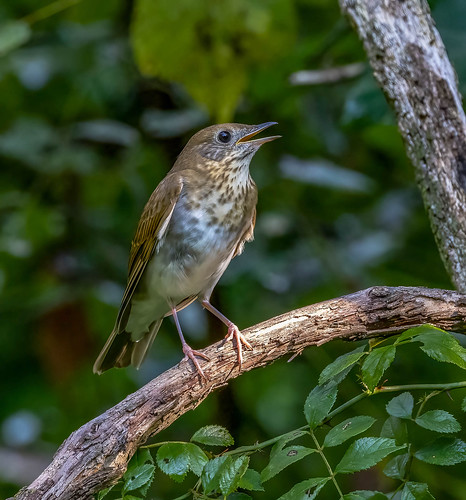</div>`)[0]);
                });
            
        

        circle_marker_c28daedeb9a2ffa211705aa237aaf60c.bindPopup(popup_c4091885e0db6074596f4de7d66c7487)
        ;

        
    
    
            var circle_marker_2c5cef4d507705301202389de09e0b7f = L.circleMarker(
                [14.75, 105.7872081],
                {"bubblingMouseEvents": true, "color": "yellow", "dashArray": null, "dashOffset": null, "fill": true, "fillColor": "yellow", "fillOpacity": 0.2, "fillRule": "evenodd", "lineCap": "round", "lineJoin": "round", "opacity": 1.0, "radius": 8, "stroke": true, "weight": 3}
            ).addTo(map_e3037ef08b9763c8998e27844b8617dd);
        
    
        var popup_a8b0763354bec48e6e7f3f17ce5ee128 = L.popup({"maxWidth": "100%"});

        
            
                circle_marker_2c5cef4d507705301202389de09e0b7f.once('click', function() {
                    popup_a8b0763354bec48e6e7f3f17ce5ee128.setContent($(`<div id="html_4dc820bed04d750d42d96be4ab969a27" style="width: 100.0%; height: 100.0%;">Lesser coucal - Centropus bengalensis cluster 6  </div>`)[0]);
                });
            
        

        circle_marker_2c5cef4d507705301202389de09e0b7f.bindPopup(popup_a8b0763354bec48e6e7f3f17ce5ee128)
        ;

        
    
    
            var circle_marker_a6ef48b8c823aeb0d897bff0fb346283 = L.circleMarker(
                [15.82, 121.5685511],
                {"bubblingMouseEvents": true, "color": "blue", "dashArray": null, "dashOffset": null, "fill": true, "fillColor": "blue", "fillOpacity": 0.2, "fillRule": "evenodd", "lineCap": "round", "lineJoin": "round", "opacity": 1.0, "radius": 8, "stroke": true, "weight": 3}
            ).addTo(map_e3037ef08b9763c8998e27844b8617dd);
        
    
        var popup_5f2ede9e49a48df5e1ee29b5c9ab8b3b = L.popup({"maxWidth": "100%"});

        
            
                circle_marker_a6ef48b8c823aeb0d897bff0fb346283.once('click', function() {
                    popup_5f2ede9e49a48df5e1ee29b5c9ab8b3b.setContent($(`<div id="html_da3e123528a52b9e2cc3261b285a48cc" style="width: 100.0%; height: 100.0%;">Centropus unirufus - Centropus unirufus cluster 2  </div>`)[0]);
                });
            
        

        circle_marker_a6ef48b8c823aeb0d897bff0fb346283.bindPopup(popup_5f2ede9e49a48df5e1ee29b5c9ab8b3b)
        ;

        
    
    
            var circle_marker_69f7357aef8cb34a2a1f85c6e1c2055a = L.circleMarker(
                [-5.22, -65.00798525],
                {"bubblingMouseEvents": true, "color": "yellow", "dashArray": null, "dashOffset": null, "fill": true, "fillColor": "yellow", "fillOpacity": 0.2, "fillRule": "evenodd", "lineCap": "round", "lineJoin": "round", "opacity": 1.0, "radius": 8, "stroke": true, "weight": 3}
            ).addTo(map_e3037ef08b9763c8998e27844b8617dd);
        
    
        var popup_a7a1798ec1377b3adc99e4e58464ba18 = L.popup({"maxWidth": "100%"});

        
            
                circle_marker_69f7357aef8cb34a2a1f85c6e1c2055a.once('click', function() {
                    popup_a7a1798ec1377b3adc99e4e58464ba18.setContent($(`<div id="html_bfdefe6249c962861f0246fff6590d45" style="width: 100.0%; height: 100.0%;">Amazonian umbrellabird - Cephalopterus ornatus cluster 6  </div>`)[0]);
                });
            
        

        circle_marker_69f7357aef8cb34a2a1f85c6e1c2055a.bindPopup(popup_a7a1798ec1377b3adc99e4e58464ba18)
        ;

        
    
    
            var circle_marker_3822423f449a1fc3b6b6783b70a41ada = L.circleMarker(
                [68.63, -1.356124123],
                {"bubblingMouseEvents": true, "color": "yellow", "dashArray": null, "dashOffset": null, "fill": true, "fillColor": "yellow", "fillOpacity": 0.2, "fillRule": "evenodd", "lineCap": "round", "lineJoin": "round", "opacity": 1.0, "radius": 8, "stroke": true, "weight": 3}
            ).addTo(map_e3037ef08b9763c8998e27844b8617dd);
        
    
        var popup_bec7f435b629f1dd23c18c718234fb7d = L.popup({"maxWidth": "100%"});

        
            
                circle_marker_3822423f449a1fc3b6b6783b70a41ada.once('click', function() {
                    popup_bec7f435b629f1dd23c18c718234fb7d.setContent($(`<div id="html_d9389bf9fa2fa3a13d7a1853fb289ca5" style="width: 100.0%; height: 100.0%;">Black guillemot - Cepphus grylle cluster 6  </div>`)[0]);
                });
            
        

        circle_marker_3822423f449a1fc3b6b6783b70a41ada.bindPopup(popup_bec7f435b629f1dd23c18c718234fb7d)
        ;

        
    
    
            var circle_marker_b6492a3af8d22d098288239d2dc52af5 = L.circleMarker(
                [41.65, 39.12035263],
                {"bubblingMouseEvents": true, "color": "green", "dashArray": null, "dashOffset": null, "fill": true, "fillColor": "green", "fillOpacity": 0.2, "fillRule": "evenodd", "lineCap": "round", "lineJoin": "round", "opacity": 1.0, "radius": 8, "stroke": true, "weight": 3}
            ).addTo(map_e3037ef08b9763c8998e27844b8617dd);
        
    
        var popup_bdcc7728738a2c542ae955446628b88a = L.popup({"maxWidth": "100%"});

        
            
                circle_marker_b6492a3af8d22d098288239d2dc52af5.once('click', function() {
                    popup_bdcc7728738a2c542ae955446628b88a.setContent($(`<div id="html_1f326921968a024fb3dc8ac5693898a4" style="width: 100.0%; height: 100.0%;">Cetti's warbler - Cettia cetti cluster 3  </div>`)[0]);
                });
            
        

        circle_marker_b6492a3af8d22d098288239d2dc52af5.bindPopup(popup_bdcc7728738a2c542ae955446628b88a)
        ;

        
    
    
            var circle_marker_788674fd69c899e1c041ef0c8a28f5c9 = L.circleMarker(
                [-3.43, 21.93445558],
                {"bubblingMouseEvents": true, "color": "purple", "dashArray": null, "dashOffset": null, "fill": true, "fillColor": "purple", "fillOpacity": 0.2, "fillRule": "evenodd", "lineCap": "round", "lineJoin": "round", "opacity": 1.0, "radius": 8, "stroke": true, "weight": 3}
            ).addTo(map_e3037ef08b9763c8998e27844b8617dd);
        
    
        var popup_d9bb25d165ceb77a5f613ca9d779757f = L.popup({"maxWidth": "100%"});

        
            
                circle_marker_788674fd69c899e1c041ef0c8a28f5c9.once('click', function() {
                    popup_d9bb25d165ceb77a5f613ca9d779757f.setContent($(`<div id="html_2ad43c9eb4ff65d754c85e3067aa1192" style="width: 100.0%; height: 100.0%;">Blue malkoha - Ceuthmochares aereus cluster 4  </div>`)[0]);
                });
            
        

        circle_marker_788674fd69c899e1c041ef0c8a28f5c9.bindPopup(popup_d9bb25d165ceb77a5f613ca9d779757f)
        ;

        
    
    
            var circle_marker_ab692b2346a09c03dc6c25f2dd453fe5 = L.circleMarker(
                [-33.59, 20.91420292],
                {"bubblingMouseEvents": true, "color": "purple", "dashArray": null, "dashOffset": null, "fill": true, "fillColor": "purple", "fillOpacity": 0.2, "fillRule": "evenodd", "lineCap": "round", "lineJoin": "round", "opacity": 1.0, "radius": 8, "stroke": true, "weight": 3}
            ).addTo(map_e3037ef08b9763c8998e27844b8617dd);
        
    
        var popup_36bbea312e28af591c7458088ddc4b1c = L.popup({"maxWidth": "100%"});

        
            
                circle_marker_ab692b2346a09c03dc6c25f2dd453fe5.once('click', function() {
                    popup_36bbea312e28af591c7458088ddc4b1c.setContent($(`<div id="html_2e1fa1653e26d896dd67142aa13bc5ac" style="width: 100.0%; height: 100.0%;">Rufous rock-jumper - Chaetops frenatus cluster 4  </div>`)[0]);
                });
            
        

        circle_marker_ab692b2346a09c03dc6c25f2dd453fe5.bindPopup(popup_36bbea312e28af591c7458088ddc4b1c)
        ;

        
    
    
            var circle_marker_28f92eb5c7c989f40a220ceac3d5231e = L.circleMarker(
                [-49.28, 67.76398714],
                {"bubblingMouseEvents": true, "color": "pink", "dashArray": null, "dashOffset": null, "fill": true, "fillColor": "pink", "fillOpacity": 0.2, "fillRule": "evenodd", "lineCap": "round", "lineJoin": "round", "opacity": 1.0, "radius": 8, "stroke": true, "weight": 3}
            ).addTo(map_e3037ef08b9763c8998e27844b8617dd);
        
    
        var popup_a1c328587ac4cc1ce5f7262a451c98e6 = L.popup({"maxWidth": "100%"});

        
            
                circle_marker_28f92eb5c7c989f40a220ceac3d5231e.once('click', function() {
                    popup_a1c328587ac4cc1ce5f7262a451c98e6.setContent($(`<div id="html_2ab2e76277ede19bed809a5c2254ebfb" style="width: 100.0%; height: 100.0%;">Black-faced sheathbill - Chionis minor cluster 7  </div>`)[0]);
                });
            
        

        circle_marker_28f92eb5c7c989f40a220ceac3d5231e.bindPopup(popup_a1c328587ac4cc1ce5f7262a451c98e6)
        ;

        
    
    
            var circle_marker_4c6fcd93e2ee6b1a6b85d14438c2bdb6 = L.circleMarker(
                [1.18, 108.4286138],
                {"bubblingMouseEvents": true, "color": "yellow", "dashArray": null, "dashOffset": null, "fill": true, "fillColor": "yellow", "fillOpacity": 0.2, "fillRule": "evenodd", "lineCap": "round", "lineJoin": "round", "opacity": 1.0, "radius": 8, "stroke": true, "weight": 3}
            ).addTo(map_e3037ef08b9763c8998e27844b8617dd);
        
    
        var popup_74f91a69915d2778171945964cba73d4 = L.popup({"maxWidth": "100%"});

        
            
                circle_marker_4c6fcd93e2ee6b1a6b85d14438c2bdb6.once('click', function() {
                    popup_74f91a69915d2778171945964cba73d4.setContent($(`<div id="html_a2741cacfda5a9ecad9d832009dc3900" style="width: 100.0%; height: 100.0%;">Chloropsis cyanopogon - Chloropsis cyanopogon cluster 6  </div>`)[0]);
                });
            
        

        circle_marker_4c6fcd93e2ee6b1a6b85d14438c2bdb6.bindPopup(popup_74f91a69915d2778171945964cba73d4)
        ;

        
    
    
            var circle_marker_c8ee3c604f2de0fdb4549c95264305bc = L.circleMarker(
                [23.39, 101.8222026],
                {"bubblingMouseEvents": true, "color": "red", "dashArray": null, "dashOffset": null, "fill": true, "fillColor": "red", "fillOpacity": 0.2, "fillRule": "evenodd", "lineCap": "round", "lineJoin": "round", "opacity": 1.0, "radius": 8, "stroke": true, "weight": 3}
            ).addTo(map_e3037ef08b9763c8998e27844b8617dd);
        
    
        var popup_58890acfbd42448100e4da4f66978e50 = L.popup({"maxWidth": "100%"});

        
            
                circle_marker_c8ee3c604f2de0fdb4549c95264305bc.once('click', function() {
                    popup_58890acfbd42448100e4da4f66978e50.setContent($(`<div id="html_0cba7867a0033476c25adc4f82827ee4" style="width: 100.0%; height: 100.0%;">Orange-bellied leafbird - Chloropsis hardwickii cluster 1  </div>`)[0]);
                });
            
        

        circle_marker_c8ee3c604f2de0fdb4549c95264305bc.bindPopup(popup_58890acfbd42448100e4da4f66978e50)
        ;

        
    
    
            var circle_marker_44c30503f8a1c2a5823a13c5bc301c6d = L.circleMarker(
                [3.21, -69.00782759],
                {"bubblingMouseEvents": true, "color": "pink", "dashArray": null, "dashOffset": null, "fill": true, "fillColor": "pink", "fillOpacity": 0.2, "fillRule": "evenodd", "lineCap": "round", "lineJoin": "round", "opacity": 1.0, "radius": 8, "stroke": true, "weight": 3}
            ).addTo(map_e3037ef08b9763c8998e27844b8617dd);
        
    
        var popup_0d002ace1a857edbd3bf9403f52ac33c = L.popup({"maxWidth": "100%"});

        
            
                circle_marker_44c30503f8a1c2a5823a13c5bc301c6d.once('click', function() {
                    popup_0d002ace1a857edbd3bf9403f52ac33c.setContent($(`<div id="html_ab84290f01df55109ca9eb9a82f29fe0" style="width: 100.0%; height: 100.0%;">Lesser nighthawk - Chordeiles acutipennis cluster 7  </div>`)[0]);
                });
            
        

        circle_marker_44c30503f8a1c2a5823a13c5bc301c6d.bindPopup(popup_0d002ace1a857edbd3bf9403f52ac33c)
        ;

        
    
    
            var circle_marker_f3f17532e953129d4e60f8c917dae610 = L.circleMarker(
                [-39.268867, -71.97657],
                {"bubblingMouseEvents": true, "color": "red", "dashArray": null, "dashOffset": null, "fill": true, "fillColor": "red", "fillOpacity": 0.2, "fillRule": "evenodd", "lineCap": "round", "lineJoin": "round", "opacity": 1.0, "radius": 8, "stroke": true, "weight": 3}
            ).addTo(map_e3037ef08b9763c8998e27844b8617dd);
        
    
        var popup_cedde28a6970d0610227b9ab8058f49f = L.popup({"maxWidth": "100%"});

        
            
                circle_marker_f3f17532e953129d4e60f8c917dae610.once('click', function() {
                    popup_cedde28a6970d0610227b9ab8058f49f.setContent($(`<div id="html_97c37f31348a0a9e23196e452f1ea883" style="width: 100.0%; height: 100.0%;">Brown-hooded gull - Chroicocephalus maculipennis cluster 1  </div>`)[0]);
                });
            
        

        circle_marker_f3f17532e953129d4e60f8c917dae610.bindPopup(popup_cedde28a6970d0610227b9ab8058f49f)
        ;

        
    
    
            var circle_marker_94caab52ba3f469154272cf345cb5ab8 = L.circleMarker(
                [-25.38, -62.3776834],
                {"bubblingMouseEvents": true, "color": "blue", "dashArray": null, "dashOffset": null, "fill": true, "fillColor": "blue", "fillOpacity": 0.2, "fillRule": "evenodd", "lineCap": "round", "lineJoin": "round", "opacity": 1.0, "radius": 8, "stroke": true, "weight": 3}
            ).addTo(map_e3037ef08b9763c8998e27844b8617dd);
        
    
        var popup_bda7017370b1dfb716e3afd7d31b21ea = L.popup({"maxWidth": "100%"});

        
            
                circle_marker_94caab52ba3f469154272cf345cb5ab8.once('click', function() {
                    popup_bda7017370b1dfb716e3afd7d31b21ea.setContent($(`<div id="html_efe7a8c9effcdf26d0e41ce11b483bf9" style="width: 100.0%; height: 100.0%;">Black-legged seriema - Chunga burmeisteri cluster 2  </div>`)[0]);
                });
            
        

        circle_marker_94caab52ba3f469154272cf345cb5ab8.bindPopup(popup_bda7017370b1dfb716e3afd7d31b21ea)
        ;

        
    
    
            var circle_marker_7192cd38fa9e56f6d91838d25700badd = L.circleMarker(
                [11.168205, -72.546855],
                {"bubblingMouseEvents": true, "color": "orange", "dashArray": null, "dashOffset": null, "fill": true, "fillColor": "orange", "fillOpacity": 0.2, "fillRule": "evenodd", "lineCap": "round", "lineJoin": "round", "opacity": 1.0, "radius": 8, "stroke": true, "weight": 3}
            ).addTo(map_e3037ef08b9763c8998e27844b8617dd);
        
    
        var popup_cb1f6d77fcd17123073be01203cf96ce = L.popup({"maxWidth": "100%"});

        
            
                circle_marker_7192cd38fa9e56f6d91838d25700badd.once('click', function() {
                    popup_cb1f6d77fcd17123073be01203cf96ce.setContent($(`<div id="html_13dfe6ae9fd739cf2f83130c010abbcc" style="width: 100.0%; height: 100.0%;">Black-and-white owl - Ciccaba nigrolineata cluster 5  </div>`)[0]);
                });
            
        

        circle_marker_7192cd38fa9e56f6d91838d25700badd.bindPopup(popup_cb1f6d77fcd17123073be01203cf96ce)
        ;

        
    
    
            var circle_marker_e5ddf3f219a78c4c0bfef45e1494fefc = L.circleMarker(
                [-18.01, -59.63787979],
                {"bubblingMouseEvents": true, "color": "green", "dashArray": null, "dashOffset": null, "fill": true, "fillColor": "green", "fillOpacity": 0.2, "fillRule": "evenodd", "lineCap": "round", "lineJoin": "round", "opacity": 1.0, "radius": 8, "stroke": true, "weight": 3}
            ).addTo(map_e3037ef08b9763c8998e27844b8617dd);
        
    
        var popup_04ec7b420d1513b8adc821f20a8ddb4b = L.popup({"maxWidth": "100%"});

        
            
                circle_marker_e5ddf3f219a78c4c0bfef45e1494fefc.once('click', function() {
                    popup_04ec7b420d1513b8adc821f20a8ddb4b.setContent($(`<div id="html_94a59cf1ed8047d37b9b90e87eb979c6" style="width: 100.0%; height: 100.0%;">Maguari stork - Ciconia maguari cluster 3  </div>`)[0]);
                });
            
        

        circle_marker_e5ddf3f219a78c4c0bfef45e1494fefc.bindPopup(popup_04ec7b420d1513b8adc821f20a8ddb4b)
        ;

        
    
    
            var circle_marker_38ad88308054844a0708b569b9a0a597 = L.circleMarker(
                [-10.32, 28.83361979],
                {"bubblingMouseEvents": true, "color": "red", "dashArray": null, "dashOffset": null, "fill": true, "fillColor": "red", "fillOpacity": 0.2, "fillRule": "evenodd", "lineCap": "round", "lineJoin": "round", "opacity": 1.0, "radius": 8, "stroke": true, "weight": 3}
            ).addTo(map_e3037ef08b9763c8998e27844b8617dd);
        
    
        var popup_e7b6a3433994853424925c23570dfcd0 = L.popup({"maxWidth": "100%"});

        
            
                circle_marker_38ad88308054844a0708b569b9a0a597.once('click', function() {
                    popup_e7b6a3433994853424925c23570dfcd0.setContent($(`<div id="html_b93f3cc2c7e6765e10df5885c7b5473e" style="width: 100.0%; height: 100.0%;">Black-chested snake-eagle - Circaetus pectoralis cluster 1  </div>`)[0]);
                });
            
        

        circle_marker_38ad88308054844a0708b569b9a0a597.bindPopup(popup_e7b6a3433994853424925c23570dfcd0)
        ;

        
    
    
            var circle_marker_b2678304711a00642eaff0e078df353e = L.circleMarker(
                [10.73, 63.10920419],
                {"bubblingMouseEvents": true, "color": "green", "dashArray": null, "dashOffset": null, "fill": true, "fillColor": "green", "fillOpacity": 0.2, "fillRule": "evenodd", "lineCap": "round", "lineJoin": "round", "opacity": 1.0, "radius": 8, "stroke": true, "weight": 3}
            ).addTo(map_e3037ef08b9763c8998e27844b8617dd);
        
    
        var popup_7e789f7b682c738c5e5823b14016789f = L.popup({"maxWidth": "100%"});

        
            
                circle_marker_b2678304711a00642eaff0e078df353e.once('click', function() {
                    popup_7e789f7b682c738c5e5823b14016789f.setContent($(`<div id="html_9ed09465090872bcad24eca37d48cdef" style="width: 100.0%; height: 100.0%;">Zitting cisticola - Cisticola juncidis cluster 3  </div>`)[0]);
                });
            
        

        circle_marker_b2678304711a00642eaff0e078df353e.bindPopup(popup_7e789f7b682c738c5e5823b14016789f)
        ;

        
    
    
            var circle_marker_daa29fbe1b57e4841e257ece6d3a80ff = L.circleMarker(
                [-31.94, 122.8538672],
                {"bubblingMouseEvents": true, "color": "blue", "dashArray": null, "dashOffset": null, "fill": true, "fillColor": "blue", "fillOpacity": 0.2, "fillRule": "evenodd", "lineCap": "round", "lineJoin": "round", "opacity": 1.0, "radius": 8, "stroke": true, "weight": 3}
            ).addTo(map_e3037ef08b9763c8998e27844b8617dd);
        
    
        var popup_248221894245bcb76e072dd2507b224b = L.popup({"maxWidth": "100%"});

        
            
                circle_marker_daa29fbe1b57e4841e257ece6d3a80ff.once('click', function() {
                    popup_248221894245bcb76e072dd2507b224b.setContent($(`<div id="html_c45bcc7bf96c22dc075c5ce68984c00b" style="width: 100.0%; height: 100.0%;">Rufous treecreeper - Climacteris rufus cluster 2  </div>`)[0]);
                });
            
        

        circle_marker_daa29fbe1b57e4841e257ece6d3a80ff.bindPopup(popup_248221894245bcb76e072dd2507b224b)
        ;

        
    
    
            var circle_marker_2d4388534d24d7a688f415184f3cc9e7 = L.circleMarker(
                [-5.38, 141.818736],
                {"bubblingMouseEvents": true, "color": "yellow", "dashArray": null, "dashOffset": null, "fill": true, "fillColor": "yellow", "fillOpacity": 0.2, "fillRule": "evenodd", "lineCap": "round", "lineJoin": "round", "opacity": 1.0, "radius": 8, "stroke": true, "weight": 3}
            ).addTo(map_e3037ef08b9763c8998e27844b8617dd);
        
    
        var popup_786b1b333517e50f4354fafa6c1abe3d = L.popup({"maxWidth": "100%"});

        
            
                circle_marker_2d4388534d24d7a688f415184f3cc9e7.once('click', function() {
                    popup_786b1b333517e50f4354fafa6c1abe3d.setContent($(`<div id="html_244797bb9795d98a9b505a28dc11033d" style="width: 100.0%; height: 100.0%;">Loria's bird-of-paradise - Cnemophilus loriae cluster 6  </div>`)[0]);
                });
            
        

        circle_marker_2d4388534d24d7a688f415184f3cc9e7.bindPopup(popup_786b1b333517e50f4354fafa6c1abe3d)
        ;

        
    
    
            var circle_marker_fb04acf3e7558c41637e38306cda93be = L.circleMarker(
                [-4.95, -62.07760887],
                {"bubblingMouseEvents": true, "color": "blue", "dashArray": null, "dashOffset": null, "fill": true, "fillColor": "blue", "fillOpacity": 0.2, "fillRule": "evenodd", "lineCap": "round", "lineJoin": "round", "opacity": 1.0, "radius": 8, "stroke": true, "weight": 3}
            ).addTo(map_e3037ef08b9763c8998e27844b8617dd);
        
    
        var popup_d5f7b91205af40ef02d991a70dd81358 = L.popup({"maxWidth": "100%"});

        
            
                circle_marker_fb04acf3e7558c41637e38306cda93be.once('click', function() {
                    popup_d5f7b91205af40ef02d991a70dd81358.setContent($(`<div id="html_1fe184f7effea1bf1b4e3a45aa259f9d" style="width: 100.0%; height: 100.0%;">Boat-billed heron - Cochlearius cochlearius cluster 2  </div>`)[0]);
                });
            
        

        circle_marker_fb04acf3e7558c41637e38306cda93be.bindPopup(popup_d5f7b91205af40ef02d991a70dd81358)
        ;

        
    
    
            var circle_marker_020d46420ee22e806d466a511f797ca4 = L.circleMarker(
                [-23.34, -58.64470063],
                {"bubblingMouseEvents": true, "color": "blue", "dashArray": null, "dashOffset": null, "fill": true, "fillColor": "blue", "fillOpacity": 0.2, "fillRule": "evenodd", "lineCap": "round", "lineJoin": "round", "opacity": 1.0, "radius": 8, "stroke": true, "weight": 3}
            ).addTo(map_e3037ef08b9763c8998e27844b8617dd);
        
    
        var popup_07fd478a5ea62e02fe8ed84ceaa706f0 = L.popup({"maxWidth": "100%"});

        
            
                circle_marker_020d46420ee22e806d466a511f797ca4.once('click', function() {
                    popup_07fd478a5ea62e02fe8ed84ceaa706f0.setContent($(`<div id="html_5eb05b2d534f59839c5fb6f778484156" style="width: 100.0%; height: 100.0%;">Picui ground-dove - Columbina picui cluster 2  </div>`)[0]);
                });
            
        

        circle_marker_020d46420ee22e806d466a511f797ca4.bindPopup(popup_07fd478a5ea62e02fe8ed84ceaa706f0)
        ;

        
    
    
            var circle_marker_f26d6f59ad97d2c216ace4552c0d3bf1 = L.circleMarker(
                [-21.33, 165.4819811],
                {"bubblingMouseEvents": true, "color": "red", "dashArray": null, "dashOffset": null, "fill": true, "fillColor": "red", "fillOpacity": 0.2, "fillRule": "evenodd", "lineCap": "round", "lineJoin": "round", "opacity": 1.0, "radius": 8, "stroke": true, "weight": 3}
            ).addTo(map_e3037ef08b9763c8998e27844b8617dd);
        
    
        var popup_6e5d59b4c9760a25797260dbdae0d356 = L.popup({"maxWidth": "100%"});

        
            
                circle_marker_f26d6f59ad97d2c216ace4552c0d3bf1.once('click', function() {
                    popup_6e5d59b4c9760a25797260dbdae0d356.setContent($(`<div id="html_1c874ae0a484ee045b9770092a8e68a9" style="width: 100.0%; height: 100.0%;">New caledonian crow - Corvus moneduloides cluster 1  </div>`)[0]);
                });
            
        

        circle_marker_f26d6f59ad97d2c216ace4552c0d3bf1.bindPopup(popup_6e5d59b4c9760a25797260dbdae0d356)
        ;

        
    
    
            var circle_marker_1223dc5e68fa1ee684ce71bccd4e81dd = L.circleMarker(
                [-17.21, 27.4136128],
                {"bubblingMouseEvents": true, "color": "pink", "dashArray": null, "dashOffset": null, "fill": true, "fillColor": "pink", "fillOpacity": 0.2, "fillRule": "evenodd", "lineCap": "round", "lineJoin": "round", "opacity": 1.0, "radius": 8, "stroke": true, "weight": 3}
            ).addTo(map_e3037ef08b9763c8998e27844b8617dd);
        
    
        var popup_792395545b9edff131dd3d9dde1417b1 = L.popup({"maxWidth": "100%"});

        
            
                circle_marker_1223dc5e68fa1ee684ce71bccd4e81dd.once('click', function() {
                    popup_792395545b9edff131dd3d9dde1417b1.setContent($(`<div id="html_59d303135b25c66bf488dff68d206177" style="width: 100.0%; height: 100.0%;">Grey go-away-bird - Corythaixoides concolor cluster 7  </div>`)[0]);
                });
            
        

        circle_marker_1223dc5e68fa1ee684ce71bccd4e81dd.bindPopup(popup_792395545b9edff131dd3d9dde1417b1)
        ;

        
    
    
            var circle_marker_fde1ddbe4b31f7b25394befbb49eb97f = L.circleMarker(
                [12.58, -85.96128768],
                {"bubblingMouseEvents": true, "color": "red", "dashArray": null, "dashOffset": null, "fill": true, "fillColor": "red", "fillOpacity": 0.2, "fillRule": "evenodd", "lineCap": "round", "lineJoin": "round", "opacity": 1.0, "radius": 8, "stroke": true, "weight": 3}
            ).addTo(map_e3037ef08b9763c8998e27844b8617dd);
        
    
        var popup_b6b5c690d47fe2711b848b637460e0c9 = L.popup({"maxWidth": "100%"});

        
            
                circle_marker_fde1ddbe4b31f7b25394befbb49eb97f.once('click', function() {
                    popup_b6b5c690d47fe2711b848b637460e0c9.setContent($(`<div id="html_9c722d86bb3222cbd265d4f3a1def8dc" style="width: 100.0%; height: 100.0%;">Groove-billed ani - Crotophaga sulcirostris cluster 1  </div>`)[0]);
                });
            
        

        circle_marker_fde1ddbe4b31f7b25394befbb49eb97f.bindPopup(popup_b6b5c690d47fe2711b848b637460e0c9)
        ;

        
    
    
            var circle_marker_ca0e9b5d58501d24c8a8d1343ac61aa9 = L.circleMarker(
                [-4.47, -60.50690479],
                {"bubblingMouseEvents": true, "color": "pink", "dashArray": null, "dashOffset": null, "fill": true, "fillColor": "pink", "fillOpacity": 0.2, "fillRule": "evenodd", "lineCap": "round", "lineJoin": "round", "opacity": 1.0, "radius": 8, "stroke": true, "weight": 3}
            ).addTo(map_e3037ef08b9763c8998e27844b8617dd);
        
    
        var popup_fde1988aef8c9677e5d02f872803edb7 = L.popup({"maxWidth": "100%"});

        
            
                circle_marker_ca0e9b5d58501d24c8a8d1343ac61aa9.once('click', function() {
                    popup_fde1988aef8c9677e5d02f872803edb7.setContent($(`<div id="html_75aa37fd338ebfe886984ecee642e946" style="width: 100.0%; height: 100.0%;">Little tinamou - Crypturellus soui cluster 7  </div>`)[0]);
                });
            
        

        circle_marker_ca0e9b5d58501d24c8a8d1343ac61aa9.bindPopup(popup_fde1988aef8c9677e5d02f872803edb7)
        ;

        
    
    
            var circle_marker_cbc4dc56c3bf89b2cd3c7a7b893bcaf4 = L.circleMarker(
                [-25.74, 136.4915404],
                {"bubblingMouseEvents": true, "color": "purple", "dashArray": null, "dashOffset": null, "fill": true, "fillColor": "purple", "fillOpacity": 0.2, "fillRule": "evenodd", "lineCap": "round", "lineJoin": "round", "opacity": 1.0, "radius": 8, "stroke": true, "weight": 3}
            ).addTo(map_e3037ef08b9763c8998e27844b8617dd);
        
    
        var popup_e4e23fd2e705f39eabf4a4ec33897e1e = L.popup({"maxWidth": "100%"});

        
            
                circle_marker_cbc4dc56c3bf89b2cd3c7a7b893bcaf4.once('click', function() {
                    popup_e4e23fd2e705f39eabf4a4ec33897e1e.setContent($(`<div id="html_876fa067420a8cc5c9ac68a1f143c3a3" style="width: 100.0%; height: 100.0%;">Varied sittella - Daphoenositta chrysoptera cluster 4  </div>`)[0]);
                });
            
        

        circle_marker_cbc4dc56c3bf89b2cd3c7a7b893bcaf4.bindPopup(popup_e4e23fd2e705f39eabf4a4ec33897e1e)
        ;

        
    
    
            var circle_marker_bb5890fcc091c1e87e66d3424c556917 = L.circleMarker(
                [-37.67, 141.4969873],
                {"bubblingMouseEvents": true, "color": "green", "dashArray": null, "dashOffset": null, "fill": true, "fillColor": "green", "fillOpacity": 0.2, "fillRule": "evenodd", "lineCap": "round", "lineJoin": "round", "opacity": 1.0, "radius": 8, "stroke": true, "weight": 3}
            ).addTo(map_e3037ef08b9763c8998e27844b8617dd);
        
    
        var popup_fb660ca2c8ae137ab75c338bc1eb2683 = L.popup({"maxWidth": "100%"});

        
            
                circle_marker_bb5890fcc091c1e87e66d3424c556917.once('click', function() {
                    popup_fb660ca2c8ae137ab75c338bc1eb2683.setContent($(`<div id="html_2238dd5daf673f6161b34549fe176bba" style="width: 100.0%; height: 100.0%;">Rufous bristle-bird - Dasyornis broadbenti cluster 3  </div>`)[0]);
                });
            
        

        circle_marker_bb5890fcc091c1e87e66d3424c556917.bindPopup(popup_fb660ca2c8ae137ab75c338bc1eb2683)
        ;

        
    
    
            var circle_marker_0d92182cd8f6314f53a664e220f62da4 = L.circleMarker(
                [-5.09, 150.9235842],
                {"bubblingMouseEvents": true, "color": "blue", "dashArray": null, "dashOffset": null, "fill": true, "fillColor": "blue", "fillOpacity": 0.2, "fillRule": "evenodd", "lineCap": "round", "lineJoin": "round", "opacity": 1.0, "radius": 8, "stroke": true, "weight": 3}
            ).addTo(map_e3037ef08b9763c8998e27844b8617dd);
        
    
        var popup_9a2d089593fd0801db6f0a29fd561541 = L.popup({"maxWidth": "100%"});

        
            
                circle_marker_0d92182cd8f6314f53a664e220f62da4.once('click', function() {
                    popup_9a2d089593fd0801db6f0a29fd561541.setContent($(`<div id="html_3b02aa1a8188f079e02b0b970a405273" style="width: 100.0%; height: 100.0%;">Dicaeum eximium - Dicaeum eximium cluster 2  </div>`)[0]);
                });
            
        

        circle_marker_0d92182cd8f6314f53a664e220f62da4.bindPopup(popup_9a2d089593fd0801db6f0a29fd561541)
        ;

        
    
    
            var circle_marker_ad91d9ea2b746a9a0eafd22594c3d734 = L.circleMarker(
                [-3.81, 152.3273329],
                {"bubblingMouseEvents": true, "color": "red", "dashArray": null, "dashOffset": null, "fill": true, "fillColor": "red", "fillOpacity": 0.2, "fillRule": "evenodd", "lineCap": "round", "lineJoin": "round", "opacity": 1.0, "radius": 8, "stroke": true, "weight": 3}
            ).addTo(map_e3037ef08b9763c8998e27844b8617dd);
        
    
        var popup_87182f3a40f043cba5a6c2f18cd7fc36 = L.popup({"maxWidth": "100%"});

        
            
                circle_marker_ad91d9ea2b746a9a0eafd22594c3d734.once('click', function() {
                    popup_87182f3a40f043cba5a6c2f18cd7fc36.setContent($(`<div id="html_5ec34c3186be88f3fe2bdfb54d14ddd1" style="width: 100.0%; height: 100.0%;">Paradise drongo - Dicrurus megarhynchus cluster 1  </div>`)[0]);
                });
            
        

        circle_marker_ad91d9ea2b746a9a0eafd22594c3d734.bindPopup(popup_87182f3a40f043cba5a6c2f18cd7fc36)
        ;

        
    
    
            var circle_marker_565eb26425ef292518a9e373e8697b5b = L.circleMarker(
                [-5.58, -60.43440744],
                {"bubblingMouseEvents": true, "color": "pink", "dashArray": null, "dashOffset": null, "fill": true, "fillColor": "pink", "fillOpacity": 0.2, "fillRule": "evenodd", "lineCap": "round", "lineJoin": "round", "opacity": 1.0, "radius": 8, "stroke": true, "weight": 3}
            ).addTo(map_e3037ef08b9763c8998e27844b8617dd);
        
    
        var popup_b6171614386763b6a47ae5da749ea33e = L.popup({"maxWidth": "100%"});

        
            
                circle_marker_565eb26425ef292518a9e373e8697b5b.once('click', function() {
                    popup_b6171614386763b6a47ae5da749ea33e.setContent($(`<div id="html_ab3f46d25e092fe3655f33895148135a" style="width: 100.0%; height: 100.0%;">Black-capped donacobius - Donacobius atricapilla cluster 7  </div>`)[0]);
                });
            
        

        circle_marker_565eb26425ef292518a9e373e8697b5b.bindPopup(popup_b6171614386763b6a47ae5da749ea33e)
        ;

        
    
    
            var circle_marker_a0ee38d38d1aa6461b8e62f5f1e1417e = L.circleMarker(
                [-28.09, 136.599237],
                {"bubblingMouseEvents": true, "color": "green", "dashArray": null, "dashOffset": null, "fill": true, "fillColor": "green", "fillOpacity": 0.2, "fillRule": "evenodd", "lineCap": "round", "lineJoin": "round", "opacity": 1.0, "radius": 8, "stroke": true, "weight": 3}
            ).addTo(map_e3037ef08b9763c8998e27844b8617dd);
        
    
        var popup_e08cd8d0d939cbea254eef2078d6c26e = L.popup({"maxWidth": "100%"});

        
            
                circle_marker_a0ee38d38d1aa6461b8e62f5f1e1417e.once('click', function() {
                    popup_e08cd8d0d939cbea254eef2078d6c26e.setContent($(`<div id="html_92affc12360b7a2ea46c1a136a78d84d" style="width: 100.0%; height: 100.0%;">Emu - Dromaius novaehollandiae cluster 3  </div>`)[0]);
                });
            
        

        circle_marker_a0ee38d38d1aa6461b8e62f5f1e1417e.bindPopup(popup_e08cd8d0d939cbea254eef2078d6c26e)
        ;

        
    
    
            var circle_marker_312c41b81a383774b863659e00b1c484 = L.circleMarker(
                [-32.61, 130.324147],
                {"bubblingMouseEvents": true, "color": "purple", "dashArray": null, "dashOffset": null, "fill": true, "fillColor": "purple", "fillOpacity": 0.2, "fillRule": "evenodd", "lineCap": "round", "lineJoin": "round", "opacity": 1.0, "radius": 8, "stroke": true, "weight": 3}
            ).addTo(map_e3037ef08b9763c8998e27844b8617dd);
        
    
        var popup_d6c3bfad0bcdb78f1776567a437ffea7 = L.popup({"maxWidth": "100%"});

        
            
                circle_marker_312c41b81a383774b863659e00b1c484.once('click', function() {
                    popup_d6c3bfad0bcdb78f1776567a437ffea7.setContent($(`<div id="html_2ac290c9eaad55fb1ff2f1a34d50c091" style="width: 100.0%; height: 100.0%;">Drymodes brunneopygia - Drymodes brunneopygia cluster 4  </div>`)[0]);
                });
            
        

        circle_marker_312c41b81a383774b863659e00b1c484.bindPopup(popup_d6c3bfad0bcdb78f1776567a437ffea7)
        ;

        
    
    
            var circle_marker_d83faf14212b6ca5d2c35ec8052ecb5c = L.circleMarker(
                [7.87, 14.46510669],
                {"bubblingMouseEvents": true, "color": "red", "dashArray": null, "dashOffset": null, "fill": true, "fillColor": "red", "fillOpacity": 0.2, "fillRule": "evenodd", "lineCap": "round", "lineJoin": "round", "opacity": 1.0, "radius": 8, "stroke": true, "weight": 3}
            ).addTo(map_e3037ef08b9763c8998e27844b8617dd);
        
    
        var popup_97a0e7a9b54d6ff6e49073c6dce36484 = L.popup({"maxWidth": "100%"});

        
            
                circle_marker_d83faf14212b6ca5d2c35ec8052ecb5c.once('click', function() {
                    popup_97a0e7a9b54d6ff6e49073c6dce36484.setContent($(`<div id="html_8cb347e23c16b22046be1c76ca481a96" style="width: 100.0%; height: 100.0%;">Northern puffback - Dryoscopus gambensis cluster 1  </div>`)[0]);
                });
            
        

        circle_marker_d83faf14212b6ca5d2c35ec8052ecb5c.bindPopup(popup_97a0e7a9b54d6ff6e49073c6dce36484)
        ;

        
    
    
            var circle_marker_dfe45e5ed3cf0bc7f12eb0dd92637376 = L.circleMarker(
                [5.966226, -0.671057],
                {"bubblingMouseEvents": true, "color": "blue", "dashArray": null, "dashOffset": null, "fill": true, "fillColor": "blue", "fillOpacity": 0.2, "fillRule": "evenodd", "lineCap": "round", "lineJoin": "round", "opacity": 1.0, "radius": 8, "stroke": true, "weight": 3}
            ).addTo(map_e3037ef08b9763c8998e27844b8617dd);
        
    
        var popup_b86738e77f094dac4ad91ee447a62271 = L.popup({"maxWidth": "100%"});

        
            
                circle_marker_dfe45e5ed3cf0bc7f12eb0dd92637376.once('click', function() {
                    popup_b86738e77f094dac4ad91ee447a62271.setContent($(`<div id="html_b08df8e360f1ad35a38e0126ae04a783" style="width: 100.0%; height: 100.0%;">Dyaphorophyia castanea - Dyaphorophyia castanea cluster 2  </div>`)[0]);
                });
            
        

        circle_marker_dfe45e5ed3cf0bc7f12eb0dd92637376.bindPopup(popup_b86738e77f094dac4ad91ee447a62271)
        ;

        
    
    
            var circle_marker_8c9acf600c95e16b6e3862c3d0af1bcc = L.circleMarker(
                [14.759713, 120.297064],
                {"bubblingMouseEvents": true, "color": "green", "dashArray": null, "dashOffset": null, "fill": true, "fillColor": "green", "fillOpacity": 0.2, "fillRule": "evenodd", "lineCap": "round", "lineJoin": "round", "opacity": 1.0, "radius": 8, "stroke": true, "weight": 3}
            ).addTo(map_e3037ef08b9763c8998e27844b8617dd);
        
    
        var popup_c39daad19ba16d0449f6f0dec4f4e118 = L.popup({"maxWidth": "100%"});

        
            
                circle_marker_8c9acf600c95e16b6e3862c3d0af1bcc.once('click', function() {
                    popup_c39daad19ba16d0449f6f0dec4f4e118.setContent($(`<div id="html_8b6c9a58fde8d98278a769753f9f0141" style="width: 100.0%; height: 100.0%;">Edolisoma coerulescens - Edolisoma coerulescens cluster 3  </div>`)[0]);
                });
            
        

        circle_marker_8c9acf600c95e16b6e3862c3d0af1bcc.bindPopup(popup_c39daad19ba16d0449f6f0dec4f4e118)
        ;

        
    
    
            var circle_marker_70475e41a9f4de6ae9ac5be809af47d2 = L.circleMarker(
                [26.1753, 119.2771],
                {"bubblingMouseEvents": true, "color": "purple", "dashArray": null, "dashOffset": null, "fill": true, "fillColor": "purple", "fillOpacity": 0.2, "fillRule": "evenodd", "lineCap": "round", "lineJoin": "round", "opacity": 1.0, "radius": 8, "stroke": true, "weight": 3}
            ).addTo(map_e3037ef08b9763c8998e27844b8617dd);
        
    
        var popup_315f1f9212c8b699220bf3087ab3e2a1 = L.popup({"maxWidth": "100%"});

        
            
                circle_marker_70475e41a9f4de6ae9ac5be809af47d2.once('click', function() {
                    popup_315f1f9212c8b699220bf3087ab3e2a1.setContent($(`<div id="html_41bd3d95be87d085a63765647081e2f5" style="width: 100.0%; height: 100.0%;">Spotted wren-babbler - Elachura formosa cluster 4  </div>`)[0]);
                });
            
        

        circle_marker_70475e41a9f4de6ae9ac5be809af47d2.bindPopup(popup_315f1f9212c8b699220bf3087ab3e2a1)
        ;

        
    
    
            var circle_marker_993639c5ac67c33a228433e640a2ec9d = L.circleMarker(
                [44.35, 121.7955408],
                {"bubblingMouseEvents": true, "color": "yellow", "dashArray": null, "dashOffset": null, "fill": true, "fillColor": "yellow", "fillOpacity": 0.2, "fillRule": "evenodd", "lineCap": "round", "lineJoin": "round", "opacity": 1.0, "radius": 8, "stroke": true, "weight": 3}
            ).addTo(map_e3037ef08b9763c8998e27844b8617dd);
        
    
        var popup_1798ef83efadee82bfa81054f54f71a7 = L.popup({"maxWidth": "100%"});

        
            
                circle_marker_993639c5ac67c33a228433e640a2ec9d.once('click', function() {
                    popup_1798ef83efadee82bfa81054f54f71a7.setContent($(`<div id="html_8779a7e0060659a66e8a2ab1deaa8d01" style="width: 100.0%; height: 100.0%;">Chestnut-eared bunting - Emberiza fucata cluster 6  </div>`)[0]);
                });
            
        

        circle_marker_993639c5ac67c33a228433e640a2ec9d.bindPopup(popup_1798ef83efadee82bfa81054f54f71a7)
        ;

        
    
    
            var circle_marker_b4321ba33eca2ffc4014be306f8fb708 = L.circleMarker(
                [-35.310601, 149.128632],
                {"bubblingMouseEvents": true, "color": "blue", "dashArray": null, "dashOffset": null, "fill": true, "fillColor": "blue", "fillOpacity": 0.2, "fillRule": "evenodd", "lineCap": "round", "lineJoin": "round", "opacity": 1.0, "radius": 8, "stroke": true, "weight": 3}
            ).addTo(map_e3037ef08b9763c8998e27844b8617dd);
        
    
        var popup_9f2ad86082972d151cc4d9b182496f5a = L.popup({"maxWidth": "100%"});

        
            
                circle_marker_b4321ba33eca2ffc4014be306f8fb708.once('click', function() {
                    popup_9f2ad86082972d151cc4d9b182496f5a.setContent($(`<div id="html_18ccc96e19f83985a90dbceb622891e6" style="width: 100.0%; height: 100.0%;">Galah - Eolophus roseicapilla cluster 2  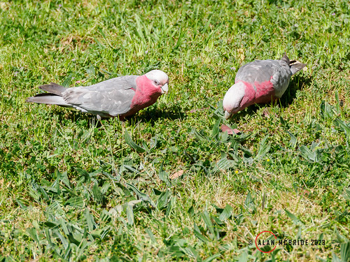</div>`)[0]);
                });
            
        

        circle_marker_b4321ba33eca2ffc4014be306f8fb708.bindPopup(popup_9f2ad86082972d151cc4d9b182496f5a)
        ;

        
    
    
            var circle_marker_fec8a3f3ce3b108d9a393dcfe402a2dd = L.circleMarker(
                [17.04, 104.8882377],
                {"bubblingMouseEvents": true, "color": "pink", "dashArray": null, "dashOffset": null, "fill": true, "fillColor": "pink", "fillOpacity": 0.2, "fillRule": "evenodd", "lineCap": "round", "lineJoin": "round", "opacity": 1.0, "radius": 8, "stroke": true, "weight": 3}
            ).addTo(map_e3037ef08b9763c8998e27844b8617dd);
        
    
        var popup_6ee010457163b295440375198638fa5d = L.popup({"maxWidth": "100%"});

        
            
                circle_marker_fec8a3f3ce3b108d9a393dcfe402a2dd.once('click', function() {
                    popup_6ee010457163b295440375198638fa5d.setContent($(`<div id="html_46dd8041e1ce83193f5c368357cd4bae" style="width: 100.0%; height: 100.0%;">White-bellied erpornis; white-bellied yuhina - Erpornis zantholeuca cluster 7  </div>`)[0]);
                });
            
        

        circle_marker_fec8a3f3ce3b108d9a393dcfe402a2dd.bindPopup(popup_6ee010457163b295440375198638fa5d)
        ;

        
    
    
            var circle_marker_e9c15993927a7a0ac03e4940dc14f3d4 = L.circleMarker(
                [2.61, 11.56373479],
                {"bubblingMouseEvents": true, "color": "blue", "dashArray": null, "dashOffset": null, "fill": true, "fillColor": "blue", "fillOpacity": 0.2, "fillRule": "evenodd", "lineCap": "round", "lineJoin": "round", "opacity": 1.0, "radius": 8, "stroke": true, "weight": 3}
            ).addTo(map_e3037ef08b9763c8998e27844b8617dd);
        
    
        var popup_5aaa124c2e748fdb19fc0e6167679f35 = L.popup({"maxWidth": "100%"});

        
            
                circle_marker_e9c15993927a7a0ac03e4940dc14f3d4.once('click', function() {
                    popup_5aaa124c2e748fdb19fc0e6167679f35.setContent($(`<div id="html_7dceba04492996b79de598cf4623afa2" style="width: 100.0%; height: 100.0%;">Chestnut-capped flycatcher - Erythrocercus mccallii cluster 2  </div>`)[0]);
                });
            
        

        circle_marker_e9c15993927a7a0ac03e4940dc14f3d4.bindPopup(popup_5aaa124c2e748fdb19fc0e6167679f35)
        ;

        
    
    
            var circle_marker_7cb0da15c1d716fd4309545c7b4cacd6 = L.circleMarker(
                [-37.3, -65.9168242],
                {"bubblingMouseEvents": true, "color": "pink", "dashArray": null, "dashOffset": null, "fill": true, "fillColor": "pink", "fillOpacity": 0.2, "fillRule": "evenodd", "lineCap": "round", "lineJoin": "round", "opacity": 1.0, "radius": 8, "stroke": true, "weight": 3}
            ).addTo(map_e3037ef08b9763c8998e27844b8617dd);
        
    
        var popup_12b229ccc08d41a5059e699bae3e8b2e = L.popup({"maxWidth": "100%"});

        
            
                circle_marker_7cb0da15c1d716fd4309545c7b4cacd6.once('click', function() {
                    popup_12b229ccc08d41a5059e699bae3e8b2e.setContent($(`<div id="html_d2d2fb6e8d5d4703c05bf0dfd9250f03" style="width: 100.0%; height: 100.0%;">Elegant crested-tinamou - Eudromia elegans cluster 7  </div>`)[0]);
                });
            
        

        circle_marker_7cb0da15c1d716fd4309545c7b4cacd6.bindPopup(popup_12b229ccc08d41a5059e699bae3e8b2e)
        ;

        
    
    
            var circle_marker_ffb268f71bf8244664ec697a8a2b9ce5 = L.circleMarker(
                [-5.37, 141.6444252],
                {"bubblingMouseEvents": true, "color": "red", "dashArray": null, "dashOffset": null, "fill": true, "fillColor": "red", "fillOpacity": 0.2, "fillRule": "evenodd", "lineCap": "round", "lineJoin": "round", "opacity": 1.0, "radius": 8, "stroke": true, "weight": 3}
            ).addTo(map_e3037ef08b9763c8998e27844b8617dd);
        
    
        var popup_a8e43426b94fbca52065fae3dee3033f = L.popup({"maxWidth": "100%"});

        
            
                circle_marker_ffb268f71bf8244664ec697a8a2b9ce5.once('click', function() {
                    popup_a8e43426b94fbca52065fae3dee3033f.setContent($(`<div id="html_24de886698ea375448bb897ddfc0489a" style="width: 100.0%; height: 100.0%;">Wattled ploughbill - Eulacestoma nigropectus cluster 1  </div>`)[0]);
                });
            
        

        circle_marker_ffb268f71bf8244664ec697a8a2b9ce5.bindPopup(popup_a8e43426b94fbca52065fae3dee3033f)
        ;

        
    
    
            var circle_marker_944352a8816beb0783ffef08c25d642e = L.circleMarker(
                [1.89, 13.6944738],
                {"bubblingMouseEvents": true, "color": "blue", "dashArray": null, "dashOffset": null, "fill": true, "fillColor": "blue", "fillOpacity": 0.2, "fillRule": "evenodd", "lineCap": "round", "lineJoin": "round", "opacity": 1.0, "radius": 8, "stroke": true, "weight": 3}
            ).addTo(map_e3037ef08b9763c8998e27844b8617dd);
        
    
        var popup_813f20600eae112bffd87608b1a10f8d = L.popup({"maxWidth": "100%"});

        
            
                circle_marker_944352a8816beb0783ffef08c25d642e.once('click', function() {
                    popup_813f20600eae112bffd87608b1a10f8d.setContent($(`<div id="html_cd1918d5c7ac29884b411208befaa14a" style="width: 100.0%; height: 100.0%;">Blue-throated roller - Eurystomus gularis cluster 2  </div>`)[0]);
                });
            
        

        circle_marker_944352a8816beb0783ffef08c25d642e.bindPopup(popup_813f20600eae112bffd87608b1a10f8d)
        ;

        
    
    
            var circle_marker_1e431113d378e0d0237fcdd258b6caad = L.circleMarker(
                [-32.5, 144.3553717],
                {"bubblingMouseEvents": true, "color": "yellow", "dashArray": null, "dashOffset": null, "fill": true, "fillColor": "yellow", "fillOpacity": 0.2, "fillRule": "evenodd", "lineCap": "round", "lineJoin": "round", "opacity": 1.0, "radius": 8, "stroke": true, "weight": 3}
            ).addTo(map_e3037ef08b9763c8998e27844b8617dd);
        
    
        var popup_3e8a8e5397ec90c7babaa6a8c84938e7 = L.popup({"maxWidth": "100%"});

        
            
                circle_marker_1e431113d378e0d0237fcdd258b6caad.once('click', function() {
                    popup_3e8a8e5397ec90c7babaa6a8c84938e7.setContent($(`<div id="html_0689dcf56005bd6b7037d1efaad38c41" style="width: 100.0%; height: 100.0%;">Eastern shriketit - Falcunculus frontatus cluster 6  </div>`)[0]);
                });
            
        

        circle_marker_1e431113d378e0d0237fcdd258b6caad.bindPopup(popup_3e8a8e5397ec90c7babaa6a8c84938e7)
        ;

        
    
    
            var circle_marker_7b3f3e55c7d5e63b1915679e5e22ab5d = L.circleMarker(
                [-3.76, -76.29702443],
                {"bubblingMouseEvents": true, "color": "pink", "dashArray": null, "dashOffset": null, "fill": true, "fillColor": "pink", "fillOpacity": 0.2, "fillRule": "evenodd", "lineCap": "round", "lineJoin": "round", "opacity": 1.0, "radius": 8, "stroke": true, "weight": 3}
            ).addTo(map_e3037ef08b9763c8998e27844b8617dd);
        
    
        var popup_6a872943233aeef619360a95553a1712 = L.popup({"maxWidth": "100%"});

        
            
                circle_marker_7b3f3e55c7d5e63b1915679e5e22ab5d.once('click', function() {
                    popup_6a872943233aeef619360a95553a1712.setContent($(`<div id="html_62952dd9d2d3b65615903968c8180f4a" style="width: 100.0%; height: 100.0%;">Rufous-breasted antthrush - Formicarius rufipectus cluster 7  </div>`)[0]);
                });
            
        

        circle_marker_7b3f3e55c7d5e63b1915679e5e22ab5d.bindPopup(popup_6a872943233aeef619360a95553a1712)
        ;

        
    
    
            var circle_marker_f7867575786c1d14f7ad3f5021766602 = L.circleMarker(
                [-14.03, -60.09969992],
                {"bubblingMouseEvents": true, "color": "green", "dashArray": null, "dashOffset": null, "fill": true, "fillColor": "green", "fillOpacity": 0.2, "fillRule": "evenodd", "lineCap": "round", "lineJoin": "round", "opacity": 1.0, "radius": 8, "stroke": true, "weight": 3}
            ).addTo(map_e3037ef08b9763c8998e27844b8617dd);
        
    
        var popup_d97be1aac9f30cd0edaa5ef95498bcb6 = L.popup({"maxWidth": "100%"});

        
            
                circle_marker_f7867575786c1d14f7ad3f5021766602.once('click', function() {
                    popup_d97be1aac9f30cd0edaa5ef95498bcb6.setContent($(`<div id="html_eaf0db8c2f2209071500f218c18e7f3a" style="width: 100.0%; height: 100.0%;">Magnificent frigatebird - Fregata magnificens cluster 3  </div>`)[0]);
                });
            
        

        circle_marker_f7867575786c1d14f7ad3f5021766602.bindPopup(popup_d97be1aac9f30cd0edaa5ef95498bcb6)
        ;

        
    
    
            var circle_marker_7c934c12ff55bf3ed2c5b5b636ecc4d4 = L.circleMarker(
                [-10.71, -44.01301575],
                {"bubblingMouseEvents": true, "color": "yellow", "dashArray": null, "dashOffset": null, "fill": true, "fillColor": "yellow", "fillOpacity": 0.2, "fillRule": "evenodd", "lineCap": "round", "lineJoin": "round", "opacity": 1.0, "radius": 8, "stroke": true, "weight": 3}
            ).addTo(map_e3037ef08b9763c8998e27844b8617dd);
        
    
        var popup_41530f01a357504c3055a01c1d9c8571 = L.popup({"maxWidth": "100%"});

        
            
                circle_marker_7c934c12ff55bf3ed2c5b5b636ecc4d4.once('click', function() {
                    popup_41530f01a357504c3055a01c1d9c8571.setContent($(`<div id="html_e92a63f33b4bffcd3a07c2747dc0525f" style="width: 100.0%; height: 100.0%;">Wing-banded hornero - Furnarius figulus cluster 6  </div>`)[0]);
                });
            
        

        circle_marker_7c934c12ff55bf3ed2c5b5b636ecc4d4.bindPopup(popup_41530f01a357504c3055a01c1d9c8571)
        ;

        
    
    
            var circle_marker_72dba018a0184a770591a5b021873f52 = L.circleMarker(
                [30.77, -104.3620211],
                {"bubblingMouseEvents": true, "color": "orange", "dashArray": null, "dashOffset": null, "fill": true, "fillColor": "orange", "fillOpacity": 0.2, "fillRule": "evenodd", "lineCap": "round", "lineJoin": "round", "opacity": 1.0, "radius": 8, "stroke": true, "weight": 3}
            ).addTo(map_e3037ef08b9763c8998e27844b8617dd);
        
    
        var popup_e87582993eb04364ad75793dc07e125b = L.popup({"maxWidth": "100%"});

        
            
                circle_marker_72dba018a0184a770591a5b021873f52.once('click', function() {
                    popup_e87582993eb04364ad75793dc07e125b.setContent($(`<div id="html_18ba4dfc43976794a5019ccf1641c7aa" style="width: 100.0%; height: 100.0%;">Roadrunner - Geococcyx californianus cluster 5  </div>`)[0]);
                });
            
        

        circle_marker_72dba018a0184a770591a5b021873f52.bindPopup(popup_e87582993eb04364ad75793dc07e125b)
        ;

        
    
    
            var circle_marker_c15c45eb8ba2ca89380794b6e92d647b = L.circleMarker(
                [-7.18, -61.15420895],
                {"bubblingMouseEvents": true, "color": "red", "dashArray": null, "dashOffset": null, "fill": true, "fillColor": "red", "fillOpacity": 0.2, "fillRule": "evenodd", "lineCap": "round", "lineJoin": "round", "opacity": 1.0, "radius": 8, "stroke": true, "weight": 3}
            ).addTo(map_e3037ef08b9763c8998e27844b8617dd);
        
    
        var popup_251ac6606dcc84191b71d0267a154360 = L.popup({"maxWidth": "100%"});

        
            
                circle_marker_c15c45eb8ba2ca89380794b6e92d647b.once('click', function() {
                    popup_251ac6606dcc84191b71d0267a154360.setContent($(`<div id="html_e7c0cd15273e6e7052033a0ef5d14f2f" style="width: 100.0%; height: 100.0%;">Ferruginous pygmy-owl - Glaucidium brasilianum cluster 1  </div>`)[0]);
                });
            
        

        circle_marker_c15c45eb8ba2ca89380794b6e92d647b.bindPopup(popup_251ac6606dcc84191b71d0267a154360)
        ;

        
    
    
            var circle_marker_f7e01cfbb157c11fb8a1ef69ba0dd03c = L.circleMarker(
                [-8.82, -54.40133079],
                {"bubblingMouseEvents": true, "color": "red", "dashArray": null, "dashOffset": null, "fill": true, "fillColor": "red", "fillOpacity": 0.2, "fillRule": "evenodd", "lineCap": "round", "lineJoin": "round", "opacity": 1.0, "radius": 8, "stroke": true, "weight": 3}
            ).addTo(map_e3037ef08b9763c8998e27844b8617dd);
        
    
        var popup_279c9f78214a3ca8f311147218a2472e = L.popup({"maxWidth": "100%"});

        
            
                circle_marker_f7e01cfbb157c11fb8a1ef69ba0dd03c.once('click', function() {
                    popup_279c9f78214a3ca8f311147218a2472e.setContent($(`<div id="html_10a7cf13b4efb72512d12e51d09d7354" style="width: 100.0%; height: 100.0%;">Variegated antpitta - Grallaria varia cluster 1  </div>`)[0]);
                });
            
        

        circle_marker_f7e01cfbb157c11fb8a1ef69ba0dd03c.bindPopup(popup_279c9f78214a3ca8f311147218a2472e)
        ;

        
    
    
            var circle_marker_7b7c8e803a89647ed4267c28a2475cdb = L.circleMarker(
                [-33.42, 147.0828808],
                {"bubblingMouseEvents": true, "color": "purple", "dashArray": null, "dashOffset": null, "fill": true, "fillColor": "purple", "fillOpacity": 0.2, "fillRule": "evenodd", "lineCap": "round", "lineJoin": "round", "opacity": 1.0, "radius": 8, "stroke": true, "weight": 3}
            ).addTo(map_e3037ef08b9763c8998e27844b8617dd);
        
    
        var popup_cd561780b101c2d0bb9a346e16de4130 = L.popup({"maxWidth": "100%"});

        
            
                circle_marker_7b7c8e803a89647ed4267c28a2475cdb.once('click', function() {
                    popup_cd561780b101c2d0bb9a346e16de4130.setContent($(`<div id="html_6244e4ee34a2ef69765cafb756665915" style="width: 100.0%; height: 100.0%;">Painted honeyeater - Grantiella picta cluster 4  </div>`)[0]);
                });
            
        

        circle_marker_7b7c8e803a89647ed4267c28a2475cdb.bindPopup(popup_cd561780b101c2d0bb9a346e16de4130)
        ;

        
    
    
            var circle_marker_395132bdeec1cf64116578887bb2a848 = L.circleMarker(
                [53.37, -107.6649448],
                {"bubblingMouseEvents": true, "color": "orange", "dashArray": null, "dashOffset": null, "fill": true, "fillColor": "orange", "fillOpacity": 0.2, "fillRule": "evenodd", "lineCap": "round", "lineJoin": "round", "opacity": 1.0, "radius": 8, "stroke": true, "weight": 3}
            ).addTo(map_e3037ef08b9763c8998e27844b8617dd);
        
    
        var popup_7f4daf32b3f682903fd41df110f7207c = L.popup({"maxWidth": "100%"});

        
            
                circle_marker_395132bdeec1cf64116578887bb2a848.once('click', function() {
                    popup_7f4daf32b3f682903fd41df110f7207c.setContent($(`<div id="html_ee58b8831313ac4c615ff749216a24cc" style="width: 100.0%; height: 100.0%;">Whooping crane - Grus americana cluster 5  </div>`)[0]);
                });
            
        

        circle_marker_395132bdeec1cf64116578887bb2a848.bindPopup(popup_7f4daf32b3f682903fd41df110f7207c)
        ;

        
    
    
            var circle_marker_9c4ce026529eca83bce7af233fafef7e = L.circleMarker(
                [-26.45, 135.3787949],
                {"bubblingMouseEvents": true, "color": "blue", "dashArray": null, "dashOffset": null, "fill": true, "fillColor": "blue", "fillOpacity": 0.2, "fillRule": "evenodd", "lineCap": "round", "lineJoin": "round", "opacity": 1.0, "radius": 8, "stroke": true, "weight": 3}
            ).addTo(map_e3037ef08b9763c8998e27844b8617dd);
        
    
        var popup_586fbcf6445123228a1d492c9751e854 = L.popup({"maxWidth": "100%"});

        
            
                circle_marker_9c4ce026529eca83bce7af233fafef7e.once('click', function() {
                    popup_586fbcf6445123228a1d492c9751e854.setContent($(`<div id="html_2f79dccea0ca75c07e2fd5b44a36385a" style="width: 100.0%; height: 100.0%;">Australian magpie - Gymnorhina tibicen cluster 2  </div>`)[0]);
                });
            
        

        circle_marker_9c4ce026529eca83bce7af233fafef7e.bindPopup(popup_586fbcf6445123228a1d492c9751e854)
        ;

        
    
    
            var circle_marker_37ccf90d3e01a54a6ff369b3b53b3a52 = L.circleMarker(
                [2.8, 110.3610952],
                {"bubblingMouseEvents": true, "color": "green", "dashArray": null, "dashOffset": null, "fill": true, "fillColor": "green", "fillOpacity": 0.2, "fillRule": "evenodd", "lineCap": "round", "lineJoin": "round", "opacity": 1.0, "radius": 8, "stroke": true, "weight": 3}
            ).addTo(map_e3037ef08b9763c8998e27844b8617dd);
        
    
        var popup_ba31e19dd600cf185f9c380196a42324 = L.popup({"maxWidth": "100%"});

        
            
                circle_marker_37ccf90d3e01a54a6ff369b3b53b3a52.once('click', function() {
                    popup_ba31e19dd600cf185f9c380196a42324.setContent($(`<div id="html_5f58aad9ecac1f25ddd8a699a66f4b00" style="width: 100.0%; height: 100.0%;">Whiskered treeswift - Hemiprocne comata cluster 3  </div>`)[0]);
                });
            
        

        circle_marker_37ccf90d3e01a54a6ff369b3b53b3a52.bindPopup(popup_ba31e19dd600cf185f9c380196a42324)
        ;

        
    
    
            var circle_marker_fb3add1885387c2c1020435e00319260 = L.circleMarker(
                [-5.54, -60.89647148],
                {"bubblingMouseEvents": true, "color": "pink", "dashArray": null, "dashOffset": null, "fill": true, "fillColor": "pink", "fillOpacity": 0.2, "fillRule": "evenodd", "lineCap": "round", "lineJoin": "round", "opacity": 1.0, "radius": 8, "stroke": true, "weight": 3}
            ).addTo(map_e3037ef08b9763c8998e27844b8617dd);
        
    
        var popup_3250bab5b95d2a7c4730d14b69a01226 = L.popup({"maxWidth": "100%"});

        
            
                circle_marker_fb3add1885387c2c1020435e00319260.once('click', function() {
                    popup_3250bab5b95d2a7c4730d14b69a01226.setContent($(`<div id="html_dcd9ef3b1f82c3f5f8d3ef2d3b55bacd" style="width: 100.0%; height: 100.0%;">Laughing falcon - Herpetotheres cachinnans cluster 7  </div>`)[0]);
                });
            
        

        circle_marker_fb3add1885387c2c1020435e00319260.bindPopup(popup_3250bab5b95d2a7c4730d14b69a01226)
        ;

        
    
    
            var circle_marker_982b032d30ca0ef3c5ae5ad22412b072 = L.circleMarker(
                [21.1, 29.83485348],
                {"bubblingMouseEvents": true, "color": "blue", "dashArray": null, "dashOffset": null, "fill": true, "fillColor": "blue", "fillOpacity": 0.2, "fillRule": "evenodd", "lineCap": "round", "lineJoin": "round", "opacity": 1.0, "radius": 8, "stroke": true, "weight": 3}
            ).addTo(map_e3037ef08b9763c8998e27844b8617dd);
        
    
        var popup_0ab9c085a4765f55313bec14788b66e0 = L.popup({"maxWidth": "100%"});

        
            
                circle_marker_982b032d30ca0ef3c5ae5ad22412b072.once('click', function() {
                    popup_0ab9c085a4765f55313bec14788b66e0.setContent($(`<div id="html_8e70ab946ffd77549a9412055d2df431" style="width: 100.0%; height: 100.0%;">Black-winged stilt - Himantopus himantopus cluster 2  </div>`)[0]);
                });
            
        

        circle_marker_982b032d30ca0ef3c5ae5ad22412b072.bindPopup(popup_0ab9c085a4765f55313bec14788b66e0)
        ;

        
    
    
            var circle_marker_64d851a7888d7780ff46065d5322b4bb = L.circleMarker(
                [54.61, 35.37015285],
                {"bubblingMouseEvents": true, "color": "purple", "dashArray": null, "dashOffset": null, "fill": true, "fillColor": "purple", "fillOpacity": 0.2, "fillRule": "evenodd", "lineCap": "round", "lineJoin": "round", "opacity": 1.0, "radius": 8, "stroke": true, "weight": 3}
            ).addTo(map_e3037ef08b9763c8998e27844b8617dd);
        
    
        var popup_b09ca8cd799200b9f8c64fe254fab4ad = L.popup({"maxWidth": "100%"});

        
            
                circle_marker_64d851a7888d7780ff46065d5322b4bb.once('click', function() {
                    popup_b09ca8cd799200b9f8c64fe254fab4ad.setContent($(`<div id="html_632514592d6f022c629270efde101238" style="width: 100.0%; height: 100.0%;">Icterine warbler - Hippolais icterina cluster 4  </div>`)[0]);
                });
            
        

        circle_marker_64d851a7888d7780ff46065d5322b4bb.bindPopup(popup_b09ca8cd799200b9f8c64fe254fab4ad)
        ;

        
    
    
            var circle_marker_04cba2a6d9513784962a4293ad6045df = L.circleMarker(
                [47.56, 34.57046816],
                {"bubblingMouseEvents": true, "color": "green", "dashArray": null, "dashOffset": null, "fill": true, "fillColor": "green", "fillOpacity": 0.2, "fillRule": "evenodd", "lineCap": "round", "lineJoin": "round", "opacity": 1.0, "radius": 8, "stroke": true, "weight": 3}
            ).addTo(map_e3037ef08b9763c8998e27844b8617dd);
        
    
        var popup_fa62a9c5743bc5f6c30a5c62cae90c00 = L.popup({"maxWidth": "100%"});

        
            
                circle_marker_04cba2a6d9513784962a4293ad6045df.once('click', function() {
                    popup_fa62a9c5743bc5f6c30a5c62cae90c00.setContent($(`<div id="html_bc2bf4d33fdd74b9c1c56b1dd5a737f3" style="width: 100.0%; height: 100.0%;">Barn swallow - Hirundo rustica cluster 3  </div>`)[0]);
                });
            
        

        circle_marker_04cba2a6d9513784962a4293ad6045df.bindPopup(popup_fa62a9c5743bc5f6c30a5c62cae90c00)
        ;

        
    
    
            var circle_marker_5cc1778a726a063588a32389411edc60 = L.circleMarker(
                [6.0129, 116.5391],
                {"bubblingMouseEvents": true, "color": "green", "dashArray": null, "dashOffset": null, "fill": true, "fillColor": "green", "fillOpacity": 0.2, "fillRule": "evenodd", "lineCap": "round", "lineJoin": "round", "opacity": 1.0, "radius": 8, "stroke": true, "weight": 3}
            ).addTo(map_e3037ef08b9763c8998e27844b8617dd);
        
    
        var popup_749a1378ce18a577f84b2ac716eff364 = L.popup({"maxWidth": "100%"});

        
            
                circle_marker_5cc1778a726a063588a32389411edc60.once('click', function() {
                    popup_749a1378ce18a577f84b2ac716eff364.setContent($(`<div id="html_de674a629208acdbf27c81bf30f7c050" style="width: 100.0%; height: 100.0%;">Sunda bush warbler - Horornis vulcanius cluster 3  </div>`)[0]);
                });
            
        

        circle_marker_5cc1778a726a063588a32389411edc60.bindPopup(popup_749a1378ce18a577f84b2ac716eff364)
        ;

        
    
    
            var circle_marker_9a07982ad478c39b8d4987d43387057d = L.circleMarker(
                [1.83, 13.3531642],
                {"bubblingMouseEvents": true, "color": "blue", "dashArray": null, "dashOffset": null, "fill": true, "fillColor": "blue", "fillOpacity": 0.2, "fillRule": "evenodd", "lineCap": "round", "lineJoin": "round", "opacity": 1.0, "radius": 8, "stroke": true, "weight": 3}
            ).addTo(map_e3037ef08b9763c8998e27844b8617dd);
        
    
        var popup_c6925f980d5d1eda1abcc79054eeea97 = L.popup({"maxWidth": "100%"});

        
            
                circle_marker_9a07982ad478c39b8d4987d43387057d.once('click', function() {
                    popup_c6925f980d5d1eda1abcc79054eeea97.setContent($(`<div id="html_e92ab7140513eb911e852da2a7399276" style="width: 100.0%; height: 100.0%;">Green hylia - Hylia prasina cluster 2  </div>`)[0]);
                });
            
        

        circle_marker_9a07982ad478c39b8d4987d43387057d.bindPopup(popup_c6925f980d5d1eda1abcc79054eeea97)
        ;

        
    
    
            var circle_marker_ff749578c78da3c8e75d9a02d70835eb = L.circleMarker(
                [35.52, 92.4370137],
                {"bubblingMouseEvents": true, "color": "pink", "dashArray": null, "dashOffset": null, "fill": true, "fillColor": "pink", "fillOpacity": 0.2, "fillRule": "evenodd", "lineCap": "round", "lineJoin": "round", "opacity": 1.0, "radius": 8, "stroke": true, "weight": 3}
            ).addTo(map_e3037ef08b9763c8998e27844b8617dd);
        
    
        var popup_a4f25dc56cf72822dc825029863d6088 = L.popup({"maxWidth": "100%"});

        
            
                circle_marker_ff749578c78da3c8e75d9a02d70835eb.once('click', function() {
                    popup_a4f25dc56cf72822dc825029863d6088.setContent($(`<div id="html_ca770e35274e936749797b3aea22f8d8" style="width: 100.0%; height: 100.0%;">Ibisbill - Ibidorhyncha struthersii cluster 7  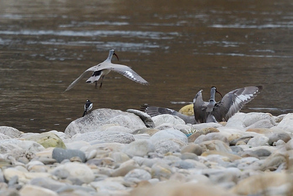</div>`)[0]);
                });
            
        

        circle_marker_ff749578c78da3c8e75d9a02d70835eb.bindPopup(popup_a4f25dc56cf72822dc825029863d6088)
        ;

        
    
    
            var circle_marker_620c9e0afd103a0245b6b27595353cd6 = L.circleMarker(
                [-5.87, 143.2621308],
                {"bubblingMouseEvents": true, "color": "blue", "dashArray": null, "dashOffset": null, "fill": true, "fillColor": "blue", "fillOpacity": 0.2, "fillRule": "evenodd", "lineCap": "round", "lineJoin": "round", "opacity": 1.0, "radius": 8, "stroke": true, "weight": 3}
            ).addTo(map_e3037ef08b9763c8998e27844b8617dd);
        
    
        var popup_6944d53dff5dbe75c5ea8602e3d2d3ed = L.popup({"maxWidth": "100%"});

        
            
                circle_marker_620c9e0afd103a0245b6b27595353cd6.once('click', function() {
                    popup_6944d53dff5dbe75c5ea8602e3d2d3ed.setContent($(`<div id="html_b17980cab615f2421ec9defcfe095d0e" style="width: 100.0%; height: 100.0%;">Blue-capped ifrita - Ifrita kowaldi cluster 2  </div>`)[0]);
                });
            
        

        circle_marker_620c9e0afd103a0245b6b27595353cd6.bindPopup(popup_6944d53dff5dbe75c5ea8602e3d2d3ed)
        ;

        
    
    
            var circle_marker_d4623fe6241643ffb608310a154023b2 = L.circleMarker(
                [3.23, 5.774439744],
                {"bubblingMouseEvents": true, "color": "blue", "dashArray": null, "dashOffset": null, "fill": true, "fillColor": "blue", "fillOpacity": 0.2, "fillRule": "evenodd", "lineCap": "round", "lineJoin": "round", "opacity": 1.0, "radius": 8, "stroke": true, "weight": 3}
            ).addTo(map_e3037ef08b9763c8998e27844b8617dd);
        
    
        var popup_3800e907d188f15e38b0050f3fcfaa1d = L.popup({"maxWidth": "100%"});

        
            
                circle_marker_d4623fe6241643ffb608310a154023b2.once('click', function() {
                    popup_3800e907d188f15e38b0050f3fcfaa1d.setContent($(`<div id="html_08ce8e2e2c8b17bbae33f07e8d371f2f" style="width: 100.0%; height: 100.0%;">Blackcap illadopsis - Illadopsis cleaveri cluster 2  </div>`)[0]);
                });
            
        

        circle_marker_d4623fe6241643ffb608310a154023b2.bindPopup(popup_3800e907d188f15e38b0050f3fcfaa1d)
        ;

        
    
    
            var circle_marker_8da74adee731fe3bca5b00e8c49f2c4d = L.circleMarker(
                [4.06, 11.37124865],
                {"bubblingMouseEvents": true, "color": "green", "dashArray": null, "dashOffset": null, "fill": true, "fillColor": "green", "fillOpacity": 0.2, "fillRule": "evenodd", "lineCap": "round", "lineJoin": "round", "opacity": 1.0, "radius": 8, "stroke": true, "weight": 3}
            ).addTo(map_e3037ef08b9763c8998e27844b8617dd);
        
    
        var popup_45738bff103ef26a27dd40c806fba35c = L.popup({"maxWidth": "100%"});

        
            
                circle_marker_8da74adee731fe3bca5b00e8c49f2c4d.once('click', function() {
                    popup_45738bff103ef26a27dd40c806fba35c.setContent($(`<div id="html_3df528146167e68d911eece96cc44ae3" style="width: 100.0%; height: 100.0%;">Spotted honeyguide - Indicator maculatus cluster 3  </div>`)[0]);
                });
            
        

        circle_marker_8da74adee731fe3bca5b00e8c49f2c4d.bindPopup(popup_45738bff103ef26a27dd40c806fba35c)
        ;

        
    
    
            var circle_marker_24ef8378a1d5f0e0d622bdac1add950a = L.circleMarker(
                [11.97, 123.2193228],
                {"bubblingMouseEvents": true, "color": "yellow", "dashArray": null, "dashOffset": null, "fill": true, "fillColor": "yellow", "fillOpacity": 0.2, "fillRule": "evenodd", "lineCap": "round", "lineJoin": "round", "opacity": 1.0, "radius": 8, "stroke": true, "weight": 3}
            ).addTo(map_e3037ef08b9763c8998e27844b8617dd);
        
    
        var popup_0cbf86db5b92fadc49e1da9c103d0cb2 = L.popup({"maxWidth": "100%"});

        
            
                circle_marker_24ef8378a1d5f0e0d622bdac1add950a.once('click', function() {
                    popup_0cbf86db5b92fadc49e1da9c103d0cb2.setContent($(`<div id="html_53b27f3b4794b82381dd5220965f3bb3" style="width: 100.0%; height: 100.0%;">Fairy bluebird - Irena cyanogastra cluster 6  </div>`)[0]);
                });
            
        

        circle_marker_24ef8378a1d5f0e0d622bdac1add950a.bindPopup(popup_0cbf86db5b92fadc49e1da9c103d0cb2)
        ;

        
    
    
            var circle_marker_c074014d56f135f0cb4b491cee36737e = L.circleMarker(
                [-10.23, -58.00033567],
                {"bubblingMouseEvents": true, "color": "blue", "dashArray": null, "dashOffset": null, "fill": true, "fillColor": "blue", "fillOpacity": 0.2, "fillRule": "evenodd", "lineCap": "round", "lineJoin": "round", "opacity": 1.0, "radius": 8, "stroke": true, "weight": 3}
            ).addTo(map_e3037ef08b9763c8998e27844b8617dd);
        
    
        var popup_641a4943f181211de7d3af8d909c7050 = L.popup({"maxWidth": "100%"});

        
            
                circle_marker_c074014d56f135f0cb4b491cee36737e.once('click', function() {
                    popup_641a4943f181211de7d3af8d909c7050.setContent($(`<div id="html_ccf0648bd0e0749134cc4d9273173aa7" style="width: 100.0%; height: 100.0%;">Wattled jacana - Jacana jacana cluster 2  </div>`)[0]);
                });
            
        

        circle_marker_c074014d56f135f0cb4b491cee36737e.bindPopup(popup_641a4943f181211de7d3af8d909c7050)
        ;

        
    
    
            var circle_marker_dfd9cef14cc53a15b068da50f6df202c = L.circleMarker(
                [38.03, -101.1065121],
                {"bubblingMouseEvents": true, "color": "purple", "dashArray": null, "dashOffset": null, "fill": true, "fillColor": "purple", "fillOpacity": 0.2, "fillRule": "evenodd", "lineCap": "round", "lineJoin": "round", "opacity": 1.0, "radius": 8, "stroke": true, "weight": 3}
            ).addTo(map_e3037ef08b9763c8998e27844b8617dd);
        
    
        var popup_530cd95ad794dbae7b3a561d524c7dcc = L.popup({"maxWidth": "100%"});

        
            
                circle_marker_dfd9cef14cc53a15b068da50f6df202c.once('click', function() {
                    popup_530cd95ad794dbae7b3a561d524c7dcc.setContent($(`<div id="html_9024b823723278efcf3e30cfb7c99d7c" style="width: 100.0%; height: 100.0%;">Loggerhead shrike - Lanius ludovicianus cluster 4  </div>`)[0]);
                });
            
        

        circle_marker_dfd9cef14cc53a15b068da50f6df202c.bindPopup(popup_530cd95ad794dbae7b3a561d524c7dcc)
        ;

        
    
    
            var circle_marker_1ca06aad14a8f6e07a0860cb37262cad = L.circleMarker(
                [40.674143, -73.413664],
                {"bubblingMouseEvents": true, "color": "pink", "dashArray": null, "dashOffset": null, "fill": true, "fillColor": "pink", "fillOpacity": 0.2, "fillRule": "evenodd", "lineCap": "round", "lineJoin": "round", "opacity": 1.0, "radius": 8, "stroke": true, "weight": 3}
            ).addTo(map_e3037ef08b9763c8998e27844b8617dd);
        
    
        var popup_96c3e7f6640fab6288cf99a2b29e3d81 = L.popup({"maxWidth": "100%"});

        
            
                circle_marker_1ca06aad14a8f6e07a0860cb37262cad.once('click', function() {
                    popup_96c3e7f6640fab6288cf99a2b29e3d81.setContent($(`<div id="html_58b412763614f3a6178198f5d23b9c23" style="width: 100.0%; height: 100.0%;">American herring gull - Larus smithsonianus cluster 7  </div>`)[0]);
                });
            
        

        circle_marker_1ca06aad14a8f6e07a0860cb37262cad.bindPopup(popup_96c3e7f6640fab6288cf99a2b29e3d81)
        ;

        
    
    
            var circle_marker_d9c6c4c5ae6d575972a7defac9508e43 = L.circleMarker(
                [28.75, 107.7961362],
                {"bubblingMouseEvents": true, "color": "blue", "dashArray": null, "dashOffset": null, "fill": true, "fillColor": "blue", "fillOpacity": 0.2, "fillRule": "evenodd", "lineCap": "round", "lineJoin": "round", "opacity": 1.0, "radius": 8, "stroke": true, "weight": 3}
            ).addTo(map_e3037ef08b9763c8998e27844b8617dd);
        
    
        var popup_2923813b55512247909c780c9c90db95 = L.popup({"maxWidth": "100%"});

        
            
                circle_marker_d9c6c4c5ae6d575972a7defac9508e43.once('click', function() {
                    popup_2923813b55512247909c780c9c90db95.setContent($(`<div id="html_ad4889225b57c16bb392e7c2fe2711cb" style="width: 100.0%; height: 100.0%;">Red-billed leiothrix - Leiothrix lutea cluster 2  </div>`)[0]);
                });
            
        

        circle_marker_d9c6c4c5ae6d575972a7defac9508e43.bindPopup(popup_2923813b55512247909c780c9c90db95)
        ;

        
    
    
            var circle_marker_d5bd8015c581b8e00b9dbc0335982412 = L.circleMarker(
                [-8.12, 114.4762973],
                {"bubblingMouseEvents": true, "color": "orange", "dashArray": null, "dashOffset": null, "fill": true, "fillColor": "orange", "fillOpacity": 0.2, "fillRule": "evenodd", "lineCap": "round", "lineJoin": "round", "opacity": 1.0, "radius": 8, "stroke": true, "weight": 3}
            ).addTo(map_e3037ef08b9763c8998e27844b8617dd);
        
    
        var popup_c68c17d6eec02018ced6e7c251eab4bc = L.popup({"maxWidth": "100%"});

        
            
                circle_marker_d5bd8015c581b8e00b9dbc0335982412.once('click', function() {
                    popup_c68c17d6eec02018ced6e7c251eab4bc.setContent($(`<div id="html_659c4349bff86131afb4f32081ea578e" style="width: 100.0%; height: 100.0%;">Bali myna - Leucopsar rothschildi cluster 5  </div>`)[0]);
                });
            
        

        circle_marker_d5bd8015c581b8e00b9dbc0335982412.bindPopup(popup_c68c17d6eec02018ced6e7c251eab4bc)
        ;

        
    
    
            var circle_marker_fc6db875cd948433ce78e83200605afd = L.circleMarker(
                [55.49, 146.3116689],
                {"bubblingMouseEvents": true, "color": "purple", "dashArray": null, "dashOffset": null, "fill": true, "fillColor": "purple", "fillOpacity": 0.2, "fillRule": "evenodd", "lineCap": "round", "lineJoin": "round", "opacity": 1.0, "radius": 8, "stroke": true, "weight": 3}
            ).addTo(map_e3037ef08b9763c8998e27844b8617dd);
        
    
        var popup_7ea30e0dbec3994849f456dcb1edb2bb = L.popup({"maxWidth": "100%"});

        
            
                circle_marker_fc6db875cd948433ce78e83200605afd.once('click', function() {
                    popup_7ea30e0dbec3994849f456dcb1edb2bb.setContent($(`<div id="html_be8df10fa58c637d00e51a20686e90b1" style="width: 100.0%; height: 100.0%;">Middendorff's grasshopper-warbler - Locustella ochotensis cluster 4  </div>`)[0]);
                });
            
        

        circle_marker_fc6db875cd948433ce78e83200605afd.bindPopup(popup_7ea30e0dbec3994849f456dcb1edb2bb)
        ;

        
    
    
            var circle_marker_4e5621ab8acf2237e07408c752d959ea = L.circleMarker(
                [-24.489533, 31.970875],
                {"bubblingMouseEvents": true, "color": "orange", "dashArray": null, "dashOffset": null, "fill": true, "fillColor": "orange", "fillOpacity": 0.2, "fillRule": "evenodd", "lineCap": "round", "lineJoin": "round", "opacity": 1.0, "radius": 8, "stroke": true, "weight": 3}
            ).addTo(map_e3037ef08b9763c8998e27844b8617dd);
        
    
        var popup_2785144e75b0d512298bad4193ad6525 = L.popup({"maxWidth": "100%"});

        
            
                circle_marker_4e5621ab8acf2237e07408c752d959ea.once('click', function() {
                    popup_2785144e75b0d512298bad4193ad6525.setContent($(`<div id="html_4853aca5ac12b42b04cc2a773dd1c2a3" style="width: 100.0%; height: 100.0%;">Red-crested korhaan - Lophotis ruficrista cluster 5  </div>`)[0]);
                });
            
        

        circle_marker_4e5621ab8acf2237e07408c752d959ea.bindPopup(popup_2785144e75b0d512298bad4193ad6525)
        ;

        
    
    
            var circle_marker_67bb9824b01ea039de6e3295f71cd187 = L.circleMarker(
                [57.95, -3.84663526],
                {"bubblingMouseEvents": true, "color": "red", "dashArray": null, "dashOffset": null, "fill": true, "fillColor": "red", "fillOpacity": 0.2, "fillRule": "evenodd", "lineCap": "round", "lineJoin": "round", "opacity": 1.0, "radius": 8, "stroke": true, "weight": 3}
            ).addTo(map_e3037ef08b9763c8998e27844b8617dd);
        
    
        var popup_5662520e2bcd90a89e4a93e59b8bbb3c = L.popup({"maxWidth": "100%"});

        
            
                circle_marker_67bb9824b01ea039de6e3295f71cd187.once('click', function() {
                    popup_5662520e2bcd90a89e4a93e59b8bbb3c.setContent($(`<div id="html_91db6b4903ed23040e6bf2bacc599d30" style="width: 100.0%; height: 100.0%;">White-winged crossbill - Loxia leucoptera cluster 1  </div>`)[0]);
                });
            
        

        circle_marker_67bb9824b01ea039de6e3295f71cd187.bindPopup(popup_5662520e2bcd90a89e4a93e59b8bbb3c)
        ;

        
    
    
            var circle_marker_738825dbdd8febf9860eb7e28b6b5a56 = L.circleMarker(
                [-5.27, 141.8607634],
                {"bubblingMouseEvents": true, "color": "blue", "dashArray": null, "dashOffset": null, "fill": true, "fillColor": "blue", "fillOpacity": 0.2, "fillRule": "evenodd", "lineCap": "round", "lineJoin": "round", "opacity": 1.0, "radius": 8, "stroke": true, "weight": 3}
            ).addTo(map_e3037ef08b9763c8998e27844b8617dd);
        
    
        var popup_0a50afc40b170e3198e5c1685a5fbf05 = L.popup({"maxWidth": "100%"});

        
            
                circle_marker_738825dbdd8febf9860eb7e28b6b5a56.once('click', function() {
                    popup_0a50afc40b170e3198e5c1685a5fbf05.setContent($(`<div id="html_e570aec496381559565e4be6408cfc55" style="width: 100.0%; height: 100.0%;">Machaerirhynchus nigripectus - Machaerirhynchus nigripectus cluster 2  </div>`)[0]);
                });
            
        

        circle_marker_738825dbdd8febf9860eb7e28b6b5a56.bindPopup(popup_0a50afc40b170e3198e5c1685a5fbf05)
        ;

        
    
    
            var circle_marker_ea493c0849d5175570460924c59cb661 = L.circleMarker(
                [-33.59, 116.6271699],
                {"bubblingMouseEvents": true, "color": "yellow", "dashArray": null, "dashOffset": null, "fill": true, "fillColor": "yellow", "fillOpacity": 0.2, "fillRule": "evenodd", "lineCap": "round", "lineJoin": "round", "opacity": 1.0, "radius": 8, "stroke": true, "weight": 3}
            ).addTo(map_e3037ef08b9763c8998e27844b8617dd);
        
    
        var popup_52d7b55759a3e5086ef1dfa193e726f5 = L.popup({"maxWidth": "100%"});

        
            
                circle_marker_ea493c0849d5175570460924c59cb661.once('click', function() {
                    popup_52d7b55759a3e5086ef1dfa193e726f5.setContent($(`<div id="html_ea63bd4eb4dbd8cdab4d2108029a8482" style="width: 100.0%; height: 100.0%;">Red-winged fairywren - Malurus elegans cluster 6  </div>`)[0]);
                });
            
        

        circle_marker_ea493c0849d5175570460924c59cb661.bindPopup(popup_52d7b55759a3e5086ef1dfa193e726f5)
        ;

        
    
    
            var circle_marker_7125d41f18229bd9d9340af8b22b3e20 = L.circleMarker(
                [-32.65, 150.2951013],
                {"bubblingMouseEvents": true, "color": "green", "dashArray": null, "dashOffset": null, "fill": true, "fillColor": "green", "fillOpacity": 0.2, "fillRule": "evenodd", "lineCap": "round", "lineJoin": "round", "opacity": 1.0, "radius": 8, "stroke": true, "weight": 3}
            ).addTo(map_e3037ef08b9763c8998e27844b8617dd);
        
    
        var popup_ddf21c194adda3f065ddee3d53df01bf = L.popup({"maxWidth": "100%"});

        
            
                circle_marker_7125d41f18229bd9d9340af8b22b3e20.once('click', function() {
                    popup_ddf21c194adda3f065ddee3d53df01bf.setContent($(`<div id="html_fa33907917de4b624ce6b732847bddb8" style="width: 100.0%; height: 100.0%;">Superb lyrebird - Menura novaehollandiae cluster 3  </div>`)[0]);
                });
            
        

        circle_marker_7125d41f18229bd9d9340af8b22b3e20.bindPopup(popup_ddf21c194adda3f065ddee3d53df01bf)
        ;

        
    
    
            var circle_marker_c3f72a3deead2a9e3f9e5f4fd02eb38e = L.circleMarker(
                [-7.9, -59.10523233],
                {"bubblingMouseEvents": true, "color": "green", "dashArray": null, "dashOffset": null, "fill": true, "fillColor": "green", "fillOpacity": 0.2, "fillRule": "evenodd", "lineCap": "round", "lineJoin": "round", "opacity": 1.0, "radius": 8, "stroke": true, "weight": 3}
            ).addTo(map_e3037ef08b9763c8998e27844b8617dd);
        
    
        var popup_90934aad18c991fe8746b1d3af916068 = L.popup({"maxWidth": "100%"});

        
            
                circle_marker_c3f72a3deead2a9e3f9e5f4fd02eb38e.once('click', function() {
                    popup_90934aad18c991fe8746b1d3af916068.setContent($(`<div id="html_1b2bef15590df5d409e829e8435ae5ad" style="width: 100.0%; height: 100.0%;">Green ibis - Mesembrinibis cayennensis cluster 3  </div>`)[0]);
                });
            
        

        circle_marker_c3f72a3deead2a9e3f9e5f4fd02eb38e.bindPopup(popup_90934aad18c991fe8746b1d3af916068)
        ;

        
    
    
            var circle_marker_6b692ce3310b5036e93d8f2dc473cc22 = L.circleMarker(
                [-45.19, 167.8410018],
                {"bubblingMouseEvents": true, "color": "green", "dashArray": null, "dashOffset": null, "fill": true, "fillColor": "green", "fillOpacity": 0.2, "fillRule": "evenodd", "lineCap": "round", "lineJoin": "round", "opacity": 1.0, "radius": 8, "stroke": true, "weight": 3}
            ).addTo(map_e3037ef08b9763c8998e27844b8617dd);
        
    
        var popup_e9b8d26d707e0ebe31eb1fd2456ce5a3 = L.popup({"maxWidth": "100%"});

        
            
                circle_marker_6b692ce3310b5036e93d8f2dc473cc22.once('click', function() {
                    popup_e9b8d26d707e0ebe31eb1fd2456ce5a3.setContent($(`<div id="html_8f01f58356f20639d91671c93ccad450" style="width: 100.0%; height: 100.0%;">Mohoua ochrocephala - Mohoua ochrocephala cluster 3  </div>`)[0]);
                });
            
        

        circle_marker_6b692ce3310b5036e93d8f2dc473cc22.bindPopup(popup_e9b8d26d707e0ebe31eb1fd2456ce5a3)
        ;

        
    
    
            var circle_marker_415a5834c2252e60acaadc2f17346241 = L.circleMarker(
                [52.86, 81.66910285],
                {"bubblingMouseEvents": true, "color": "yellow", "dashArray": null, "dashOffset": null, "fill": true, "fillColor": "yellow", "fillOpacity": 0.2, "fillRule": "evenodd", "lineCap": "round", "lineJoin": "round", "opacity": 1.0, "radius": 8, "stroke": true, "weight": 3}
            ).addTo(map_e3037ef08b9763c8998e27844b8617dd);
        
    
        var popup_5d9df8b37391cf50fd98830ac819b780 = L.popup({"maxWidth": "100%"});

        
            
                circle_marker_415a5834c2252e60acaadc2f17346241.once('click', function() {
                    popup_5d9df8b37391cf50fd98830ac819b780.setContent($(`<div id="html_11861111bce46811859799df2762323e" style="width: 100.0%; height: 100.0%;">White wagtail - Motacilla alba cluster 6  </div>`)[0]);
                });
            
        

        circle_marker_415a5834c2252e60acaadc2f17346241.bindPopup(popup_5d9df8b37391cf50fd98830ac819b780)
        ;

        
    
    
            var circle_marker_dcf785c8ffedb6d6814b19f49f40456c = L.circleMarker(
                [-17.53, 48.74481417],
                {"bubblingMouseEvents": true, "color": "red", "dashArray": null, "dashOffset": null, "fill": true, "fillColor": "red", "fillOpacity": 0.2, "fillRule": "evenodd", "lineCap": "round", "lineJoin": "round", "opacity": 1.0, "radius": 8, "stroke": true, "weight": 3}
            ).addTo(map_e3037ef08b9763c8998e27844b8617dd);
        
    
        var popup_e02b48430402ac78e48538bd36fb3bb4 = L.popup({"maxWidth": "100%"});

        
            
                circle_marker_dcf785c8ffedb6d6814b19f49f40456c.once('click', function() {
                    popup_e02b48430402ac78e48538bd36fb3bb4.setContent($(`<div id="html_f27ce678e652935cc0f32f38b7c23da6" style="width: 100.0%; height: 100.0%;">Wattled asity - Neodrepanis coruscans cluster 1  </div>`)[0]);
                });
            
        

        circle_marker_dcf785c8ffedb6d6814b19f49f40456c.bindPopup(popup_e02b48430402ac78e48538bd36fb3bb4)
        ;

        
    
    
            var circle_marker_ba8227ecb8d3f907c3231c502d63fa6f = L.circleMarker(
                [-3.59, -64.39879377],
                {"bubblingMouseEvents": true, "color": "pink", "dashArray": null, "dashOffset": null, "fill": true, "fillColor": "pink", "fillOpacity": 0.2, "fillRule": "evenodd", "lineCap": "round", "lineJoin": "round", "opacity": 1.0, "radius": 8, "stroke": true, "weight": 3}
            ).addTo(map_e3037ef08b9763c8998e27844b8617dd);
        
    
        var popup_b88e66d66971052603643ee7531c10df = L.popup({"maxWidth": "100%"});

        
            
                circle_marker_ba8227ecb8d3f907c3231c502d63fa6f.once('click', function() {
                    popup_b88e66d66971052603643ee7531c10df.setContent($(`<div id="html_5af3e446c2957e65c768819c71b5d71a" style="width: 100.0%; height: 100.0%;">Cinnamon neopipo - Neopipo cinnamomea cluster 7  </div>`)[0]);
                });
            
        

        circle_marker_ba8227ecb8d3f907c3231c502d63fa6f.bindPopup(popup_b88e66d66971052603643ee7531c10df)
        ;

        
    
    
            var circle_marker_f676b267e288acef20f4c39a88f79bd4 = L.circleMarker(
                [-37.3, -12.68218268],
                {"bubblingMouseEvents": true, "color": "pink", "dashArray": null, "dashOffset": null, "fill": true, "fillColor": "pink", "fillOpacity": 0.2, "fillRule": "evenodd", "lineCap": "round", "lineJoin": "round", "opacity": 1.0, "radius": 8, "stroke": true, "weight": 3}
            ).addTo(map_e3037ef08b9763c8998e27844b8617dd);
        
    
        var popup_88f90e46058dced847297e9dd284dd29 = L.popup({"maxWidth": "100%"});

        
            
                circle_marker_f676b267e288acef20f4c39a88f79bd4.once('click', function() {
                    popup_88f90e46058dced847297e9dd284dd29.setContent($(`<div id="html_04e9e49021926ab3ff00729d4740f716" style="width: 100.0%; height: 100.0%;">Inaccessible island finch - Nesospiza acunhae cluster 7  </div>`)[0]);
                });
            
        

        circle_marker_f676b267e288acef20f4c39a88f79bd4.bindPopup(popup_88f90e46058dced847297e9dd284dd29)
        ;

        
    
    
            var circle_marker_bdb85bdda24d2a92643fb3ad1a20c96f = L.circleMarker(
                [-0.3, -76.54174658],
                {"bubblingMouseEvents": true, "color": "pink", "dashArray": null, "dashOffset": null, "fill": true, "fillColor": "pink", "fillOpacity": 0.2, "fillRule": "evenodd", "lineCap": "round", "lineJoin": "round", "opacity": 1.0, "radius": 8, "stroke": true, "weight": 3}
            ).addTo(map_e3037ef08b9763c8998e27844b8617dd);
        
    
        var popup_d0ef2fee837177ac9258d7a7f839f840 = L.popup({"maxWidth": "100%"});

        
            
                circle_marker_bdb85bdda24d2a92643fb3ad1a20c96f.once('click', function() {
                    popup_d0ef2fee837177ac9258d7a7f839f840.setContent($(`<div id="html_0fce3fe90e80ad3b933074c14c48e7c7" style="width: 100.0%; height: 100.0%;">Tawny-breasted tinamou - Nothocercus julius cluster 7  </div>`)[0]);
                });
            
        

        circle_marker_bdb85bdda24d2a92643fb3ad1a20c96f.bindPopup(popup_d0ef2fee837177ac9258d7a7f839f840)
        ;

        
    
    
            var circle_marker_89516bff3e0a67ce5e3cdff1f50e2f02 = L.circleMarker(
                [-12.3, -72.24172811],
                {"bubblingMouseEvents": true, "color": "red", "dashArray": null, "dashOffset": null, "fill": true, "fillColor": "red", "fillOpacity": 0.2, "fillRule": "evenodd", "lineCap": "round", "lineJoin": "round", "opacity": 1.0, "radius": 8, "stroke": true, "weight": 3}
            ).addTo(map_e3037ef08b9763c8998e27844b8617dd);
        
    
        var popup_75a6b12f17666e107cf5d72e029e86a7 = L.popup({"maxWidth": "100%"});

        
            
                circle_marker_89516bff3e0a67ce5e3cdff1f50e2f02.once('click', function() {
                    popup_75a6b12f17666e107cf5d72e029e86a7.setContent($(`<div id="html_7fa28935d9a73c8a0ac23d6e44646a6e" style="width: 100.0%; height: 100.0%;">Hooded tinamou - Nothocercus nigrocapillus cluster 1  </div>`)[0]);
                });
            
        

        circle_marker_89516bff3e0a67ce5e3cdff1f50e2f02.bindPopup(popup_75a6b12f17666e107cf5d72e029e86a7)
        ;

        
    
    
            var circle_marker_a12128701084c5ac40c05ceec1c55cca = L.circleMarker(
                [-18.41, -69.18473668],
                {"bubblingMouseEvents": true, "color": "orange", "dashArray": null, "dashOffset": null, "fill": true, "fillColor": "orange", "fillOpacity": 0.2, "fillRule": "evenodd", "lineCap": "round", "lineJoin": "round", "opacity": 1.0, "radius": 8, "stroke": true, "weight": 3}
            ).addTo(map_e3037ef08b9763c8998e27844b8617dd);
        
    
        var popup_398d940e48dacfa37a7d730cee7b438b = L.popup({"maxWidth": "100%"});

        
            
                circle_marker_a12128701084c5ac40c05ceec1c55cca.once('click', function() {
                    popup_398d940e48dacfa37a7d730cee7b438b.setContent($(`<div id="html_fa0739f6c90626ef1cf4397279766835" style="width: 100.0%; height: 100.0%;">Ornate tinamou - Nothoprocta ornata cluster 5  </div>`)[0]);
                });
            
        

        circle_marker_a12128701084c5ac40c05ceec1c55cca.bindPopup(popup_398d940e48dacfa37a7d730cee7b438b)
        ;

        
    
    
            var circle_marker_83aef8da4eccb0450dc64d64fc090a3c = L.circleMarker(
                [-22.0, -69.25999455],
                {"bubblingMouseEvents": true, "color": "pink", "dashArray": null, "dashOffset": null, "fill": true, "fillColor": "pink", "fillOpacity": 0.2, "fillRule": "evenodd", "lineCap": "round", "lineJoin": "round", "opacity": 1.0, "radius": 8, "stroke": true, "weight": 3}
            ).addTo(map_e3037ef08b9763c8998e27844b8617dd);
        
    
        var popup_2b6d676d264cd0a406291c5b838eb88c = L.popup({"maxWidth": "100%"});

        
            
                circle_marker_83aef8da4eccb0450dc64d64fc090a3c.once('click', function() {
                    popup_2b6d676d264cd0a406291c5b838eb88c.setContent($(`<div id="html_8238c1109a2b2d26ca6d538ac01c2b32" style="width: 100.0%; height: 100.0%;">Andean tinamou - Nothoprocta pentlandii cluster 7  </div>`)[0]);
                });
            
        

        circle_marker_83aef8da4eccb0450dc64d64fc090a3c.bindPopup(popup_2b6d676d264cd0a406291c5b838eb88c)
        ;

        
    
    
            var circle_marker_8f78d9d043b2a3d61ff6f4b4448402f3 = L.circleMarker(
                [-39.19, 175.0013036],
                {"bubblingMouseEvents": true, "color": "purple", "dashArray": null, "dashOffset": null, "fill": true, "fillColor": "purple", "fillOpacity": 0.2, "fillRule": "evenodd", "lineCap": "round", "lineJoin": "round", "opacity": 1.0, "radius": 8, "stroke": true, "weight": 3}
            ).addTo(map_e3037ef08b9763c8998e27844b8617dd);
        
    
        var popup_7bc7c47c879d3c5a3a54e2564805abd9 = L.popup({"maxWidth": "100%"});

        
            
                circle_marker_8f78d9d043b2a3d61ff6f4b4448402f3.once('click', function() {
                    popup_7bc7c47c879d3c5a3a54e2564805abd9.setContent($(`<div id="html_aa454620a7b6e5b704351b38f740e6fa" style="width: 100.0%; height: 100.0%;">Stitchbird - Notiomystis cincta cluster 4  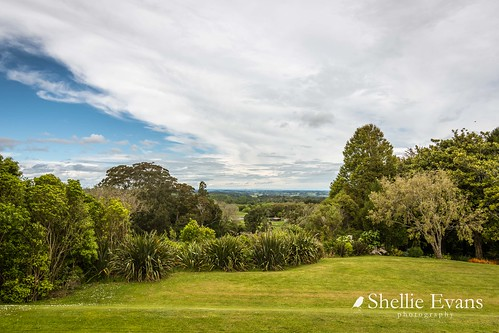</div>`)[0]);
                });
            
        

        circle_marker_8f78d9d043b2a3d61ff6f4b4448402f3.bindPopup(popup_7bc7c47c879d3c5a3a54e2564805abd9)
        ;

        
    
    
            var circle_marker_8713c11176483e5b06f30863d9132b30 = L.circleMarker(
                [-2.3, -66.60124844],
                {"bubblingMouseEvents": true, "color": "orange", "dashArray": null, "dashOffset": null, "fill": true, "fillColor": "orange", "fillOpacity": 0.2, "fillRule": "evenodd", "lineCap": "round", "lineJoin": "round", "opacity": 1.0, "radius": 8, "stroke": true, "weight": 3}
            ).addTo(map_e3037ef08b9763c8998e27844b8617dd);
        
    
        var popup_830df5e1cb7313647ef5b325c836b293 = L.popup({"maxWidth": "100%"});

        
            
                circle_marker_8713c11176483e5b06f30863d9132b30.once('click', function() {
                    popup_830df5e1cb7313647ef5b325c836b293.setContent($(`<div id="html_7f11db68c0e260dd1ce12a803f5724d1" style="width: 100.0%; height: 100.0%;">Rufous potoo - Nyctibius bracteatus cluster 5  </div>`)[0]);
                });
            
        

        circle_marker_8713c11176483e5b06f30863d9132b30.bindPopup(popup_830df5e1cb7313647ef5b325c836b293)
        ;

        
    
    
            var circle_marker_971e1768249e38178a4c970e7b5a7ffe = L.circleMarker(
                [-3.9, -62.2288178],
                {"bubblingMouseEvents": true, "color": "blue", "dashArray": null, "dashOffset": null, "fill": true, "fillColor": "blue", "fillOpacity": 0.2, "fillRule": "evenodd", "lineCap": "round", "lineJoin": "round", "opacity": 1.0, "radius": 8, "stroke": true, "weight": 3}
            ).addTo(map_e3037ef08b9763c8998e27844b8617dd);
        
    
        var popup_ac4c07790f00004b5f3d0f88c82da9ff = L.popup({"maxWidth": "100%"});

        
            
                circle_marker_971e1768249e38178a4c970e7b5a7ffe.once('click', function() {
                    popup_ac4c07790f00004b5f3d0f88c82da9ff.setContent($(`<div id="html_b523d1f3763690e4f47cf0a8c057c9b6" style="width: 100.0%; height: 100.0%;">Great potoo - Nyctibius grandis cluster 2  </div>`)[0]);
                });
            
        

        circle_marker_971e1768249e38178a4c970e7b5a7ffe.bindPopup(popup_ac4c07790f00004b5f3d0f88c82da9ff)
        ;

        
    
    
            var circle_marker_a80209f927f9b333c3d8273a327f0fb5 = L.circleMarker(
                [-35.683505, -63.697983],
                {"bubblingMouseEvents": true, "color": "red", "dashArray": null, "dashOffset": null, "fill": true, "fillColor": "red", "fillOpacity": 0.2, "fillRule": "evenodd", "lineCap": "round", "lineJoin": "round", "opacity": 1.0, "radius": 8, "stroke": true, "weight": 3}
            ).addTo(map_e3037ef08b9763c8998e27844b8617dd);
        
    
        var popup_75037573f497466e7f4d476d7c2d17dc = L.popup({"maxWidth": "100%"});

        
            
                circle_marker_a80209f927f9b333c3d8273a327f0fb5.once('click', function() {
                    popup_75037573f497466e7f4d476d7c2d17dc.setContent($(`<div id="html_2750f08f5f869e8511947ff4840568f3" style="width: 100.0%; height: 100.0%;">South american painted-snipe - Nycticryphes semicollaris cluster 1  </div>`)[0]);
                });
            
        

        circle_marker_a80209f927f9b333c3d8273a327f0fb5.bindPopup(popup_75037573f497466e7f4d476d7c2d17dc)
        ;

        
    
    
            var circle_marker_8344b15d2c5ea10740e48eba48f38013 = L.circleMarker(
                [-54.16, -20.87579418],
                {"bubblingMouseEvents": true, "color": "orange", "dashArray": null, "dashOffset": null, "fill": true, "fillColor": "orange", "fillOpacity": 0.2, "fillRule": "evenodd", "lineCap": "round", "lineJoin": "round", "opacity": 1.0, "radius": 8, "stroke": true, "weight": 3}
            ).addTo(map_e3037ef08b9763c8998e27844b8617dd);
        
    
        var popup_b20621584f36571602ba47f41f166cf0 = L.popup({"maxWidth": "100%"});

        
            
                circle_marker_8344b15d2c5ea10740e48eba48f38013.once('click', function() {
                    popup_b20621584f36571602ba47f41f166cf0.setContent($(`<div id="html_f8e372ee5822d2a97efddcf1898ae9ac" style="width: 100.0%; height: 100.0%;">Wilson's storm-petrel - Oceanites oceanicus cluster 5  </div>`)[0]);
                });
            
        

        circle_marker_8344b15d2c5ea10740e48eba48f38013.bindPopup(popup_b20621584f36571602ba47f41f166cf0)
        ;

        
    
    
            var circle_marker_b4bc9c8a4f6e3739064b5b16abe4c568 = L.circleMarker(
                [-4.45, -63.16904516],
                {"bubblingMouseEvents": true, "color": "green", "dashArray": null, "dashOffset": null, "fill": true, "fillColor": "green", "fillOpacity": 0.2, "fillRule": "evenodd", "lineCap": "round", "lineJoin": "round", "opacity": 1.0, "radius": 8, "stroke": true, "weight": 3}
            ).addTo(map_e3037ef08b9763c8998e27844b8617dd);
        
    
        var popup_08603f014e66ff36140a8e7055e7af01 = L.popup({"maxWidth": "100%"});

        
            
                circle_marker_b4bc9c8a4f6e3739064b5b16abe4c568.once('click', function() {
                    popup_08603f014e66ff36140a8e7055e7af01.setContent($(`<div id="html_bbf5b797aad6b41b265164ee35dc8aa5" style="width: 100.0%; height: 100.0%;">Marbled wood quail - Odontophorus gujanensis cluster 3  </div>`)[0]);
                });
            
        

        circle_marker_b4bc9c8a4f6e3739064b5b16abe4c568.bindPopup(popup_08603f014e66ff36140a8e7055e7af01)
        ;

        
    
    
            var circle_marker_1896d6ee0f103b0f0ff3917207783369 = L.circleMarker(
                [56.43, 53.02979276],
                {"bubblingMouseEvents": true, "color": "purple", "dashArray": null, "dashOffset": null, "fill": true, "fillColor": "purple", "fillOpacity": 0.2, "fillRule": "evenodd", "lineCap": "round", "lineJoin": "round", "opacity": 1.0, "radius": 8, "stroke": true, "weight": 3}
            ).addTo(map_e3037ef08b9763c8998e27844b8617dd);
        
    
        var popup_e1f9792003f63f60dd8752a19f1984c1 = L.popup({"maxWidth": "100%"});

        
            
                circle_marker_1896d6ee0f103b0f0ff3917207783369.once('click', function() {
                    popup_e1f9792003f63f60dd8752a19f1984c1.setContent($(`<div id="html_1283a2c7359c844f3bb4ed6d783567ac" style="width: 100.0%; height: 100.0%;">Northern wheatear - Oenanthe oenanthe cluster 4  </div>`)[0]);
                });
            
        

        circle_marker_1896d6ee0f103b0f0ff3917207783369.bindPopup(popup_e1f9792003f63f60dd8752a19f1984c1)
        ;

        
    
    
            var circle_marker_26b30073bf53a57949855e5520011193 = L.circleMarker(
                [-3.27, -63.06864396],
                {"bubblingMouseEvents": true, "color": "purple", "dashArray": null, "dashOffset": null, "fill": true, "fillColor": "purple", "fillOpacity": 0.2, "fillRule": "evenodd", "lineCap": "round", "lineJoin": "round", "opacity": 1.0, "radius": 8, "stroke": true, "weight": 3}
            ).addTo(map_e3037ef08b9763c8998e27844b8617dd);
        
    
        var popup_a12d5cc64d42e1a44b29aa5e88a8106c = L.popup({"maxWidth": "100%"});

        
            
                circle_marker_26b30073bf53a57949855e5520011193.once('click', function() {
                    popup_a12d5cc64d42e1a44b29aa5e88a8106c.setContent($(`<div id="html_f06db1d948859165b2ae7fda956c2c81" style="width: 100.0%; height: 100.0%;">Amazonian royal flycatcher - Onychorhynchus coronatus cluster 4  </div>`)[0]);
                });
            
        

        circle_marker_26b30073bf53a57949855e5520011193.bindPopup(popup_a12d5cc64d42e1a44b29aa5e88a8106c)
        ;

        
    
    
            var circle_marker_ce496fa80d5e50cba7bc219731217a71 = L.circleMarker(
                [-4.76, 140.6611267],
                {"bubblingMouseEvents": true, "color": "blue", "dashArray": null, "dashOffset": null, "fill": true, "fillColor": "blue", "fillOpacity": 0.2, "fillRule": "evenodd", "lineCap": "round", "lineJoin": "round", "opacity": 1.0, "radius": 8, "stroke": true, "weight": 3}
            ).addTo(map_e3037ef08b9763c8998e27844b8617dd);
        
    
        var popup_8c660e892558dee363a81434e722971f = L.popup({"maxWidth": "100%"});

        
            
                circle_marker_ce496fa80d5e50cba7bc219731217a71.once('click', function() {
                    popup_8c660e892558dee363a81434e722971f.setContent($(`<div id="html_6644c1583c82f8f394f1702821870805" style="width: 100.0%; height: 100.0%;">Tit berrypecker - Oreocharis arfaki cluster 2  </div>`)[0]);
                });
            
        

        circle_marker_ce496fa80d5e50cba7bc219731217a71.bindPopup(popup_8c660e892558dee363a81434e722971f)
        ;

        
    
    
            var circle_marker_278fd0eba4429412a52c59d335257f56 = L.circleMarker(
                [-33.19, 150.4582044],
                {"bubblingMouseEvents": true, "color": "red", "dashArray": null, "dashOffset": null, "fill": true, "fillColor": "red", "fillOpacity": 0.2, "fillRule": "evenodd", "lineCap": "round", "lineJoin": "round", "opacity": 1.0, "radius": 8, "stroke": true, "weight": 3}
            ).addTo(map_e3037ef08b9763c8998e27844b8617dd);
        
    
        var popup_a9899c91d9ec70b244927f8f5e1f14de = L.popup({"maxWidth": "100%"});

        
            
                circle_marker_278fd0eba4429412a52c59d335257f56.once('click', function() {
                    popup_a9899c91d9ec70b244927f8f5e1f14de.setContent($(`<div id="html_7b6acca2d2fa84c4aac10cef7d3ab95b" style="width: 100.0%; height: 100.0%;">Origma solitaria - Origma solitaria cluster 1  </div>`)[0]);
                });
            
        

        circle_marker_278fd0eba4429412a52c59d335257f56.bindPopup(popup_a9899c91d9ec70b244927f8f5e1f14de)
        ;

        
    
    
            var circle_marker_c1bb1a0155681665e2ceca00d398fa1a = L.circleMarker(
                [47.63, 47.45258038],
                {"bubblingMouseEvents": true, "color": "yellow", "dashArray": null, "dashOffset": null, "fill": true, "fillColor": "yellow", "fillOpacity": 0.2, "fillRule": "evenodd", "lineCap": "round", "lineJoin": "round", "opacity": 1.0, "radius": 8, "stroke": true, "weight": 3}
            ).addTo(map_e3037ef08b9763c8998e27844b8617dd);
        
    
        var popup_3889bf52db7a3ea71074685dadbb45ff = L.popup({"maxWidth": "100%"});

        
            
                circle_marker_c1bb1a0155681665e2ceca00d398fa1a.once('click', function() {
                    popup_3889bf52db7a3ea71074685dadbb45ff.setContent($(`<div id="html_8996885128cfe5faeabbd877551a5b10" style="width: 100.0%; height: 100.0%;">Eurasian golden-oriole - Oriolus oriolus cluster 6  </div>`)[0]);
                });
            
        

        circle_marker_c1bb1a0155681665e2ceca00d398fa1a.bindPopup(popup_3889bf52db7a3ea71074685dadbb45ff)
        ;

        
    
    
            var circle_marker_8c82abb4c9adbf0439c1a6460c83db40 = L.circleMarker(
                [-17.67, 145.714945],
                {"bubblingMouseEvents": true, "color": "green", "dashArray": null, "dashOffset": null, "fill": true, "fillColor": "green", "fillOpacity": 0.2, "fillRule": "evenodd", "lineCap": "round", "lineJoin": "round", "opacity": 1.0, "radius": 8, "stroke": true, "weight": 3}
            ).addTo(map_e3037ef08b9763c8998e27844b8617dd);
        
    
        var popup_77e950ce9f6dbf841ce1ce32a941e969 = L.popup({"maxWidth": "100%"});

        
            
                circle_marker_8c82abb4c9adbf0439c1a6460c83db40.once('click', function() {
                    popup_77e950ce9f6dbf841ce1ce32a941e969.setContent($(`<div id="html_7059f1d9da66856fcf00f521b4c3b7f5" style="width: 100.0%; height: 100.0%;">Northern chowchilla - Orthonyx spaldingii cluster 3  </div>`)[0]);
                });
            
        

        circle_marker_8c82abb4c9adbf0439c1a6460c83db40.bindPopup(popup_77e950ce9f6dbf841ce1ce32a941e969)
        ;

        
    
    
            var circle_marker_9c4d95f2afff8ee503c4af78fbdf4321 = L.circleMarker(
                [-18.58, 48.4362608],
                {"bubblingMouseEvents": true, "color": "blue", "dashArray": null, "dashOffset": null, "fill": true, "fillColor": "blue", "fillOpacity": 0.2, "fillRule": "evenodd", "lineCap": "round", "lineJoin": "round", "opacity": 1.0, "radius": 8, "stroke": true, "weight": 3}
            ).addTo(map_e3037ef08b9763c8998e27844b8617dd);
        
    
        var popup_45eac28d851826e79f3000851046246b = L.popup({"maxWidth": "100%"});

        
            
                circle_marker_9c4d95f2afff8ee503c4af78fbdf4321.once('click', function() {
                    popup_45eac28d851826e79f3000851046246b.setContent($(`<div id="html_960f4907b8399561a9c7dbfe36e6911a" style="width: 100.0%; height: 100.0%;">White-throated oxylabes - Oxylabes madagascariensis cluster 2  </div>`)[0]);
                });
            
        

        circle_marker_9c4d95f2afff8ee503c4af78fbdf4321.bindPopup(popup_45eac28d851826e79f3000851046246b)
        ;

        
    
    
            var circle_marker_3a7d69002fb30133fde90abf633e3c58 = L.circleMarker(
                [-10.17, -53.71747475],
                {"bubblingMouseEvents": true, "color": "yellow", "dashArray": null, "dashOffset": null, "fill": true, "fillColor": "yellow", "fillOpacity": 0.2, "fillRule": "evenodd", "lineCap": "round", "lineJoin": "round", "opacity": 1.0, "radius": 8, "stroke": true, "weight": 3}
            ).addTo(map_e3037ef08b9763c8998e27844b8617dd);
        
    
        var popup_fa648af77786ebcf015cfbdc44475b11 = L.popup({"maxWidth": "100%"});

        
            
                circle_marker_3a7d69002fb30133fde90abf633e3c58.once('click', function() {
                    popup_fa648af77786ebcf015cfbdc44475b11.setContent($(`<div id="html_20fb848cc2e675874027440eae89f1c5" style="width: 100.0%; height: 100.0%;">Sharpbill - Oxyruncus cristatus cluster 6  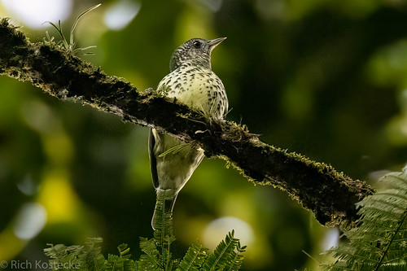</div>`)[0]);
                });
            
        

        circle_marker_3a7d69002fb30133fde90abf633e3c58.bindPopup(popup_fa648af77786ebcf015cfbdc44475b11)
        ;

        
    
    
            var circle_marker_d5142f8bd3312486314eb8862b29057b = L.circleMarker(
                [-4.7, -62.05816723],
                {"bubblingMouseEvents": true, "color": "yellow", "dashArray": null, "dashOffset": null, "fill": true, "fillColor": "yellow", "fillOpacity": 0.2, "fillRule": "evenodd", "lineCap": "round", "lineJoin": "round", "opacity": 1.0, "radius": 8, "stroke": true, "weight": 3}
            ).addTo(map_e3037ef08b9763c8998e27844b8617dd);
        
    
        var popup_9fa2a85dbb29af2488609f5c9f282561 = L.popup({"maxWidth": "100%"});

        
            
                circle_marker_d5142f8bd3312486314eb8862b29057b.once('click', function() {
                    popup_9fa2a85dbb29af2488609f5c9f282561.setContent($(`<div id="html_f4ef51ec47331c967aea10011655e942" style="width: 100.0%; height: 100.0%;">Pink-throated becard - Pachyramphus minor cluster 6  </div>`)[0]);
                });
            
        

        circle_marker_d5142f8bd3312486314eb8862b29057b.bindPopup(popup_9fa2a85dbb29af2488609f5c9f282561)
        ;

        
    
    
            var circle_marker_c020b03547ad140e8b35514c46133969 = L.circleMarker(
                [44.98, 78.51770491],
                {"bubblingMouseEvents": true, "color": "red", "dashArray": null, "dashOffset": null, "fill": true, "fillColor": "red", "fillOpacity": 0.2, "fillRule": "evenodd", "lineCap": "round", "lineJoin": "round", "opacity": 1.0, "radius": 8, "stroke": true, "weight": 3}
            ).addTo(map_e3037ef08b9763c8998e27844b8617dd);
        
    
        var popup_c2f73f6068cdd44f836d33b660b77c1a = L.popup({"maxWidth": "100%"});

        
            
                circle_marker_c020b03547ad140e8b35514c46133969.once('click', function() {
                    popup_c2f73f6068cdd44f836d33b660b77c1a.setContent($(`<div id="html_f51131846026c394deeed311b2ba62c7" style="width: 100.0%; height: 100.0%;">Bearded reedling - Panurus biarmicus cluster 1  </div>`)[0]);
                });
            
        

        circle_marker_c020b03547ad140e8b35514c46133969.bindPopup(popup_c2f73f6068cdd44f836d33b660b77c1a)
        ;

        
    
    
            var circle_marker_902e4d906fc8c9ac77f378764e363edc = L.circleMarker(
                [-7.7, 144.9302406],
                {"bubblingMouseEvents": true, "color": "green", "dashArray": null, "dashOffset": null, "fill": true, "fillColor": "green", "fillOpacity": 0.2, "fillRule": "evenodd", "lineCap": "round", "lineJoin": "round", "opacity": 1.0, "radius": 8, "stroke": true, "weight": 3}
            ).addTo(map_e3037ef08b9763c8998e27844b8617dd);
        
    
        var popup_6b3236719719d27237e4e78dc23fe0f9 = L.popup({"maxWidth": "100%"});

        
            
                circle_marker_902e4d906fc8c9ac77f378764e363edc.once('click', function() {
                    popup_6b3236719719d27237e4e78dc23fe0f9.setContent($(`<div id="html_dd4d7a7f3434c8cc71015c3d885a56bc" style="width: 100.0%; height: 100.0%;">Raggiana bird of paradise - Paradisaea raggiana cluster 3  </div>`)[0]);
                });
            
        

        circle_marker_902e4d906fc8c9ac77f378764e363edc.bindPopup(popup_6b3236719719d27237e4e78dc23fe0f9)
        ;

        
    
    
            var circle_marker_eb43b6bc072599a950fb257d5cd3664b = L.circleMarker(
                [-29.41, 142.7701565],
                {"bubblingMouseEvents": true, "color": "blue", "dashArray": null, "dashOffset": null, "fill": true, "fillColor": "blue", "fillOpacity": 0.2, "fillRule": "evenodd", "lineCap": "round", "lineJoin": "round", "opacity": 1.0, "radius": 8, "stroke": true, "weight": 3}
            ).addTo(map_e3037ef08b9763c8998e27844b8617dd);
        
    
        var popup_2649b6119a83514a6311205488454671 = L.popup({"maxWidth": "100%"});

        
            
                circle_marker_eb43b6bc072599a950fb257d5cd3664b.once('click', function() {
                    popup_2649b6119a83514a6311205488454671.setContent($(`<div id="html_1cc33db200dc4ddfc90a20c29cb0e4ff" style="width: 100.0%; height: 100.0%;">Plains-wanderer - Pedionomus torquatus cluster 2  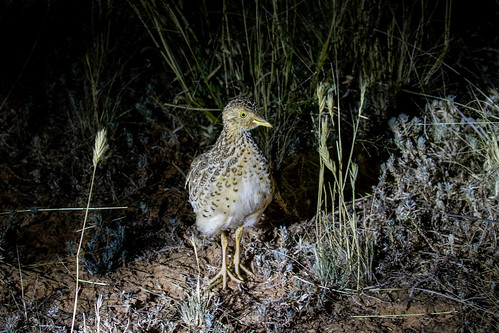</div>`)[0]);
                });
            
        

        circle_marker_eb43b6bc072599a950fb257d5cd3664b.bindPopup(popup_2649b6119a83514a6311205488454671)
        ;

        
    
    
            var circle_marker_3672e242551872dab6d34c5d96d0a6f4 = L.circleMarker(
                [-46.17, 65.55346377],
                {"bubblingMouseEvents": true, "color": "pink", "dashArray": null, "dashOffset": null, "fill": true, "fillColor": "pink", "fillOpacity": 0.2, "fillRule": "evenodd", "lineCap": "round", "lineJoin": "round", "opacity": 1.0, "radius": 8, "stroke": true, "weight": 3}
            ).addTo(map_e3037ef08b9763c8998e27844b8617dd);
        
    
        var popup_177108dc67c42c089761c600dbdab838 = L.popup({"maxWidth": "100%"});

        
            
                circle_marker_3672e242551872dab6d34c5d96d0a6f4.once('click', function() {
                    popup_177108dc67c42c089761c600dbdab838.setContent($(`<div id="html_50ed1d38f9c47901e202ec3cc1ce3981" style="width: 100.0%; height: 100.0%;">Pelecanoides urinatrix - Pelecanoides urinatrix cluster 7  </div>`)[0]);
                });
            
        

        circle_marker_3672e242551872dab6d34c5d96d0a6f4.bindPopup(popup_177108dc67c42c089761c600dbdab838)
        ;

        
    
    
            var circle_marker_79a256e39ec77648912727a374f94814 = L.circleMarker(
                [-5.26, -54.52633241],
                {"bubblingMouseEvents": true, "color": "purple", "dashArray": null, "dashOffset": null, "fill": true, "fillColor": "purple", "fillOpacity": 0.2, "fillRule": "evenodd", "lineCap": "round", "lineJoin": "round", "opacity": 1.0, "radius": 8, "stroke": true, "weight": 3}
            ).addTo(map_e3037ef08b9763c8998e27844b8617dd);
        
    
        var popup_e8324b7b8e948f2f62de744f1e146c70 = L.popup({"maxWidth": "100%"});

        
            
                circle_marker_79a256e39ec77648912727a374f94814.once('click', function() {
                    popup_e8324b7b8e948f2f62de744f1e146c70.setContent($(`<div id="html_8c37cf55371a8d2bab37121b11741b1b" style="width: 100.0%; height: 100.0%;">White-crested guan - Penelope pileata cluster 4  </div>`)[0]);
                });
            
        

        circle_marker_79a256e39ec77648912727a374f94814.bindPopup(popup_e8324b7b8e948f2f62de744f1e146c70)
        ;

        
    
    
            var circle_marker_a322c65a204515ea9f27e333f7b5856a = L.circleMarker(
                [23.77, -102.3614297],
                {"bubblingMouseEvents": true, "color": "red", "dashArray": null, "dashOffset": null, "fill": true, "fillColor": "red", "fillOpacity": 0.2, "fillRule": "evenodd", "lineCap": "round", "lineJoin": "round", "opacity": 1.0, "radius": 8, "stroke": true, "weight": 3}
            ).addTo(map_e3037ef08b9763c8998e27844b8617dd);
        
    
        var popup_b6e531a7ad5f7946616d4f2a5a2f9d4a = L.popup({"maxWidth": "100%"});

        
            
                circle_marker_a322c65a204515ea9f27e333f7b5856a.once('click', function() {
                    popup_b6e531a7ad5f7946616d4f2a5a2f9d4a.setContent($(`<div id="html_f425a2c7ec5486bd279ba6e68843a3db" style="width: 100.0%; height: 100.0%;">Olive warbler - Peucedramus taeniatus cluster 1  </div>`)[0]);
                });
            
        

        circle_marker_a322c65a204515ea9f27e333f7b5856a.bindPopup(popup_b6e531a7ad5f7946616d4f2a5a2f9d4a)
        ;

        
    
    
            var circle_marker_2206fee2bea807798a33065c15c12b9e = L.circleMarker(
                [-10.67, -57.29426137],
                {"bubblingMouseEvents": true, "color": "red", "dashArray": null, "dashOffset": null, "fill": true, "fillColor": "red", "fillOpacity": 0.2, "fillRule": "evenodd", "lineCap": "round", "lineJoin": "round", "opacity": 1.0, "radius": 8, "stroke": true, "weight": 3}
            ).addTo(map_e3037ef08b9763c8998e27844b8617dd);
        
    
        var popup_139ae0fbf77d0edde88c335a54fc3597 = L.popup({"maxWidth": "100%"});

        
            
                circle_marker_2206fee2bea807798a33065c15c12b9e.once('click', function() {
                    popup_139ae0fbf77d0edde88c335a54fc3597.setContent($(`<div id="html_78717deb0812e2fbe255a2a16455617c" style="width: 100.0%; height: 100.0%;">Large-billed tern - Phaetusa simplex cluster 1  </div>`)[0]);
                });
            
        

        circle_marker_2206fee2bea807798a33065c15c12b9e.bindPopup(popup_139ae0fbf77d0edde88c335a54fc3597)
        ;

        
    
    
            var circle_marker_1f7fbc4b36962fe46e309da2ed2ad6a3 = L.circleMarker(
                [29.77, -109.7741979],
                {"bubblingMouseEvents": true, "color": "blue", "dashArray": null, "dashOffset": null, "fill": true, "fillColor": "blue", "fillOpacity": 0.2, "fillRule": "evenodd", "lineCap": "round", "lineJoin": "round", "opacity": 1.0, "radius": 8, "stroke": true, "weight": 3}
            ).addTo(map_e3037ef08b9763c8998e27844b8617dd);
        
    
        var popup_361c6d43f1e29cf292545eda045e6203 = L.popup({"maxWidth": "100%"});

        
            
                circle_marker_1f7fbc4b36962fe46e309da2ed2ad6a3.once('click', function() {
                    popup_361c6d43f1e29cf292545eda045e6203.setContent($(`<div id="html_5b39a6464054bdf297b1351ecc688618" style="width: 100.0%; height: 100.0%;">Phainopepla - Phainopepla nitens cluster 2  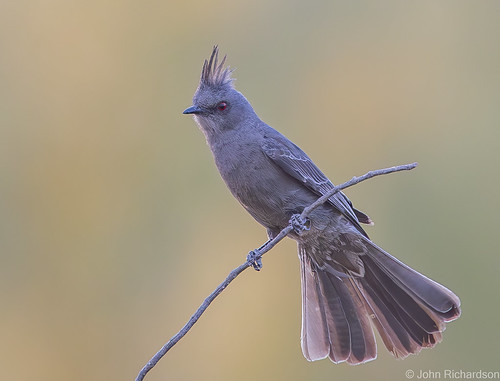</div>`)[0]);
                });
            
        

        circle_marker_1f7fbc4b36962fe46e309da2ed2ad6a3.bindPopup(popup_361c6d43f1e29cf292545eda045e6203)
        ;

        
    
    
            var circle_marker_f14cfa9a0ab7e2c8ec63c6aa951764f4 = L.circleMarker(
                [-4.83, -62.48224756],
                {"bubblingMouseEvents": true, "color": "red", "dashArray": null, "dashOffset": null, "fill": true, "fillColor": "red", "fillOpacity": 0.2, "fillRule": "evenodd", "lineCap": "round", "lineJoin": "round", "opacity": 1.0, "radius": 8, "stroke": true, "weight": 3}
            ).addTo(map_e3037ef08b9763c8998e27844b8617dd);
        
    
        var popup_75f431c89e5716e316dc3c3995de4ae8 = L.popup({"maxWidth": "100%"});

        
            
                circle_marker_f14cfa9a0ab7e2c8ec63c6aa951764f4.once('click', function() {
                    popup_75f431c89e5716e316dc3c3995de4ae8.setContent($(`<div id="html_02b9d5551d940717c17479c9100880c0" style="width: 100.0%; height: 100.0%;">White-winged piprites - Piprites chloris cluster 1  </div>`)[0]);
                });
            
        

        circle_marker_f14cfa9a0ab7e2c8ec63c6aa951764f4.bindPopup(popup_75f431c89e5716e316dc3c3995de4ae8)
        ;

        
    
    
            var circle_marker_9d224f7749bf47cea7a03c1cc0ed9a08 = L.circleMarker(
                [21.61, -86.8085958],
                {"bubblingMouseEvents": true, "color": "purple", "dashArray": null, "dashOffset": null, "fill": true, "fillColor": "purple", "fillOpacity": 0.2, "fillRule": "evenodd", "lineCap": "round", "lineJoin": "round", "opacity": 1.0, "radius": 8, "stroke": true, "weight": 3}
            ).addTo(map_e3037ef08b9763c8998e27844b8617dd);
        
    
        var popup_0103a89570849249e44767b917dfc038 = L.popup({"maxWidth": "100%"});

        
            
                circle_marker_9d224f7749bf47cea7a03c1cc0ed9a08.once('click', function() {
                    popup_0103a89570849249e44767b917dfc038.setContent($(`<div id="html_81d1abef81ae53670b62afc751bb2c4a" style="width: 100.0%; height: 100.0%;">Pied-billed grebe - Podilymbus podiceps cluster 4  </div>`)[0]);
                });
            
        

        circle_marker_9d224f7749bf47cea7a03c1cc0ed9a08.bindPopup(popup_0103a89570849249e44767b917dfc038)
        ;

        
    
    
            var circle_marker_d8319ab534a518fd62586418c3749a34 = L.circleMarker(
                [42.684685, -70.812608],
                {"bubblingMouseEvents": true, "color": "blue", "dashArray": null, "dashOffset": null, "fill": true, "fillColor": "blue", "fillOpacity": 0.2, "fillRule": "evenodd", "lineCap": "round", "lineJoin": "round", "opacity": 1.0, "radius": 8, "stroke": true, "weight": 3}
            ).addTo(map_e3037ef08b9763c8998e27844b8617dd);
        
    
        var popup_27d0a024d422f78789a88a73fda436bd = L.popup({"maxWidth": "100%"});

        
            
                circle_marker_d8319ab534a518fd62586418c3749a34.once('click', function() {
                    popup_27d0a024d422f78789a88a73fda436bd.setContent($(`<div id="html_3533ff70688319f5d973dd9b1a76bc18" style="width: 100.0%; height: 100.0%;">Black-capped chickadee - Poecile atricapillus cluster 2  </div>`)[0]);
                });
            
        

        circle_marker_d8319ab534a518fd62586418c3749a34.bindPopup(popup_27d0a024d422f78789a88a73fda436bd)
        ;

        
    
    
            var circle_marker_183d2b1b7635ea97309588e13224c7b8 = L.circleMarker(
                [33.81, -96.33514325],
                {"bubblingMouseEvents": true, "color": "orange", "dashArray": null, "dashOffset": null, "fill": true, "fillColor": "orange", "fillOpacity": 0.2, "fillRule": "evenodd", "lineCap": "round", "lineJoin": "round", "opacity": 1.0, "radius": 8, "stroke": true, "weight": 3}
            ).addTo(map_e3037ef08b9763c8998e27844b8617dd);
        
    
        var popup_d86fe224b469223fe650323408cd9672 = L.popup({"maxWidth": "100%"});

        
            
                circle_marker_183d2b1b7635ea97309588e13224c7b8.once('click', function() {
                    popup_d86fe224b469223fe650323408cd9672.setContent($(`<div id="html_d9bbd9f6516087af3005d315d5bdf018" style="width: 100.0%; height: 100.0%;">Blue-gray gnatcatcher - Polioptila caerulea cluster 5  </div>`)[0]);
                });
            
        

        circle_marker_183d2b1b7635ea97309588e13224c7b8.bindPopup(popup_d86fe224b469223fe650323408cd9672)
        ;

        
    
    
            var circle_marker_8da55a59dfdf4c2504729b48d015eaca = L.circleMarker(
                [-30.72, 142.8896301],
                {"bubblingMouseEvents": true, "color": "yellow", "dashArray": null, "dashOffset": null, "fill": true, "fillColor": "yellow", "fillOpacity": 0.2, "fillRule": "evenodd", "lineCap": "round", "lineJoin": "round", "opacity": 1.0, "radius": 8, "stroke": true, "weight": 3}
            ).addTo(map_e3037ef08b9763c8998e27844b8617dd);
        
    
        var popup_d2035a9979a56274390d561d97ac245c = L.popup({"maxWidth": "100%"});

        
            
                circle_marker_8da55a59dfdf4c2504729b48d015eaca.once('click', function() {
                    popup_d2035a9979a56274390d561d97ac245c.setContent($(`<div id="html_d4493614bcc307ca6b069d2224565fbd" style="width: 100.0%; height: 100.0%;">Chestnut-crowned babbler - Pomatostomus ruficeps cluster 6  </div>`)[0]);
                });
            
        

        circle_marker_8da55a59dfdf4c2504729b48d015eaca.bindPopup(popup_d2035a9979a56274390d561d97ac245c)
        ;

        
    
    
            var circle_marker_c78a978eecbd75381d9a693e2c8e1276 = L.circleMarker(
                [-5.71, 140.9523634],
                {"bubblingMouseEvents": true, "color": "pink", "dashArray": null, "dashOffset": null, "fill": true, "fillColor": "pink", "fillOpacity": 0.2, "fillRule": "evenodd", "lineCap": "round", "lineJoin": "round", "opacity": 1.0, "radius": 8, "stroke": true, "weight": 3}
            ).addTo(map_e3037ef08b9763c8998e27844b8617dd);
        
    
        var popup_60e6fe581231435bcaef675b0fd3b45b = L.popup({"maxWidth": "100%"});

        
            
                circle_marker_c78a978eecbd75381d9a693e2c8e1276.once('click', function() {
                    popup_60e6fe581231435bcaef675b0fd3b45b.setContent($(`<div id="html_08c0390fcc81e63f513b229f95e023e5" style="width: 100.0%; height: 100.0%;">Palm cockatoo - Probosciger aterrimus cluster 7  </div>`)[0]);
                });
            
        

        circle_marker_c78a978eecbd75381d9a693e2c8e1276.bindPopup(popup_60e6fe581231435bcaef675b0fd3b45b)
        ;

        
    
    
            var circle_marker_d579c54a038666a255b0a9361357f8fc = L.circleMarker(
                [-33.39, 21.38221847],
                {"bubblingMouseEvents": true, "color": "yellow", "dashArray": null, "dashOffset": null, "fill": true, "fillColor": "yellow", "fillOpacity": 0.2, "fillRule": "evenodd", "lineCap": "round", "lineJoin": "round", "opacity": 1.0, "radius": 8, "stroke": true, "weight": 3}
            ).addTo(map_e3037ef08b9763c8998e27844b8617dd);
        
    
        var popup_14c26a7f1a4eccfaec9a66089e87a924 = L.popup({"maxWidth": "100%"});

        
            
                circle_marker_d579c54a038666a255b0a9361357f8fc.once('click', function() {
                    popup_14c26a7f1a4eccfaec9a66089e87a924.setContent($(`<div id="html_5c09af32ea9a4823c5acdc991a0e3754" style="width: 100.0%; height: 100.0%;">Cape sugarbird - Promerops cafer cluster 6  </div>`)[0]);
                });
            
        

        circle_marker_d579c54a038666a255b0a9361357f8fc.bindPopup(popup_14c26a7f1a4eccfaec9a66089e87a924)
        ;

        
    
    
            var circle_marker_dd70b90a14ea25d86c1c9eb635151904 = L.circleMarker(
                [45.73, 86.97015349],
                {"bubblingMouseEvents": true, "color": "blue", "dashArray": null, "dashOffset": null, "fill": true, "fillColor": "blue", "fillOpacity": 0.2, "fillRule": "evenodd", "lineCap": "round", "lineJoin": "round", "opacity": 1.0, "radius": 8, "stroke": true, "weight": 3}
            ).addTo(map_e3037ef08b9763c8998e27844b8617dd);
        
    
        var popup_d49931353c1a651e415c29f420fc9dcb = L.popup({"maxWidth": "100%"});

        
            
                circle_marker_dd70b90a14ea25d86c1c9eb635151904.once('click', function() {
                    popup_d49931353c1a651e415c29f420fc9dcb.setContent($(`<div id="html_6e470207a31a303b1bcc327f8271f03d" style="width: 100.0%; height: 100.0%;">Altai accentor - Prunella himalayana cluster 2  </div>`)[0]);
                });
            
        

        circle_marker_dd70b90a14ea25d86c1c9eb635151904.bindPopup(popup_d49931353c1a651e415c29f420fc9dcb)
        ;

        
    
    
            var circle_marker_c6b72e114656cbc6ea98abed28f27cac = L.circleMarker(
                [12.694202, 77.78746],
                {"bubblingMouseEvents": true, "color": "purple", "dashArray": null, "dashOffset": null, "fill": true, "fillColor": "purple", "fillOpacity": 0.2, "fillRule": "evenodd", "lineCap": "round", "lineJoin": "round", "opacity": 1.0, "radius": 8, "stroke": true, "weight": 3}
            ).addTo(map_e3037ef08b9763c8998e27844b8617dd);
        
    
        var popup_476e7a8440749981a80b8c06b4242860 = L.popup({"maxWidth": "100%"});

        
            
                circle_marker_c6b72e114656cbc6ea98abed28f27cac.once('click', function() {
                    popup_476e7a8440749981a80b8c06b4242860.setContent($(`<div id="html_3cf16c7ca3b2c504621882a5dbd3f1e5" style="width: 100.0%; height: 100.0%;">Coppersmith barbet - Psilopogon haemacephalus cluster 4  </div>`)[0]);
                });
            
        

        circle_marker_c6b72e114656cbc6ea98abed28f27cac.bindPopup(popup_476e7a8440749981a80b8c06b4242860)
        ;

        
    
    
            var circle_marker_b37b198b90c4337869da48b6de465a14 = L.circleMarker(
                [1.28, -63.53925729],
                {"bubblingMouseEvents": true, "color": "yellow", "dashArray": null, "dashOffset": null, "fill": true, "fillColor": "yellow", "fillOpacity": 0.2, "fillRule": "evenodd", "lineCap": "round", "lineJoin": "round", "opacity": 1.0, "radius": 8, "stroke": true, "weight": 3}
            ).addTo(map_e3037ef08b9763c8998e27844b8617dd);
        
    
        var popup_0faaed4ad9c5505bfb00b3925baa5649 = L.popup({"maxWidth": "100%"});

        
            
                circle_marker_b37b198b90c4337869da48b6de465a14.once('click', function() {
                    popup_0faaed4ad9c5505bfb00b3925baa5649.setContent($(`<div id="html_692c7e700d4708eebc148d5c4263a788" style="width: 100.0%; height: 100.0%;">Common trumpeter - Psophia crepitans cluster 6  </div>`)[0]);
                });
            
        

        circle_marker_b37b198b90c4337869da48b6de465a14.bindPopup(popup_0faaed4ad9c5505bfb00b3925baa5649)
        ;

        
    
    
            var circle_marker_c4ea55e1296f165e0785b41853662c5b = L.circleMarker(
                [-22.19, 21.75028667],
                {"bubblingMouseEvents": true, "color": "orange", "dashArray": null, "dashOffset": null, "fill": true, "fillColor": "orange", "fillOpacity": 0.2, "fillRule": "evenodd", "lineCap": "round", "lineJoin": "round", "opacity": 1.0, "radius": 8, "stroke": true, "weight": 3}
            ).addTo(map_e3037ef08b9763c8998e27844b8617dd);
        
    
        var popup_737d09943ad9c52a0fdd6a773f3c4b1b = L.popup({"maxWidth": "100%"});

        
            
                circle_marker_c4ea55e1296f165e0785b41853662c5b.once('click', function() {
                    popup_737d09943ad9c52a0fdd6a773f3c4b1b.setContent($(`<div id="html_db44a7fd3b9988c2b241395c67195105" style="width: 100.0%; height: 100.0%;">Burchell's sandgrouse - Pterocles burchelli cluster 5  </div>`)[0]);
                });
            
        

        circle_marker_c4ea55e1296f165e0785b41853662c5b.bindPopup(popup_737d09943ad9c52a0fdd6a773f3c4b1b)
        ;

        
    
    
            var circle_marker_3dc91e3e204a8158e4f7369298412a23 = L.circleMarker(
                [29.28, -101.4339266],
                {"bubblingMouseEvents": true, "color": "purple", "dashArray": null, "dashOffset": null, "fill": true, "fillColor": "purple", "fillOpacity": 0.2, "fillRule": "evenodd", "lineCap": "round", "lineJoin": "round", "opacity": 1.0, "radius": 8, "stroke": true, "weight": 3}
            ).addTo(map_e3037ef08b9763c8998e27844b8617dd);
        
    
        var popup_d3e0d28f5feac46dd374d94207a3f3c4 = L.popup({"maxWidth": "100%"});

        
            
                circle_marker_3dc91e3e204a8158e4f7369298412a23.once('click', function() {
                    popup_d3e0d28f5feac46dd374d94207a3f3c4.setContent($(`<div id="html_434470c7263c171ed5d9bf21257dd1f1" style="width: 100.0%; height: 100.0%;">Great-tailed grackle - Quiscalus mexicanus cluster 4  </div>`)[0]);
                });
            
        

        circle_marker_3dc91e3e204a8158e4f7369298412a23.bindPopup(popup_d3e0d28f5feac46dd374d94207a3f3c4)
        ;

        
    
    
            var circle_marker_309f78f3e9d80a9b1c89bb52c671b0d3 = L.circleMarker(
                [14.77, -86.16740974],
                {"bubblingMouseEvents": true, "color": "purple", "dashArray": null, "dashOffset": null, "fill": true, "fillColor": "purple", "fillOpacity": 0.2, "fillRule": "evenodd", "lineCap": "round", "lineJoin": "round", "opacity": 1.0, "radius": 8, "stroke": true, "weight": 3}
            ).addTo(map_e3037ef08b9763c8998e27844b8617dd);
        
    
        var popup_87f49cd3fa3879415f0402ab178d9392 = L.popup({"maxWidth": "100%"});

        
            
                circle_marker_309f78f3e9d80a9b1c89bb52c671b0d3.once('click', function() {
                    popup_87f49cd3fa3879415f0402ab178d9392.setContent($(`<div id="html_83b4763837c602fb5ed700f6ebfb67e7" style="width: 100.0%; height: 100.0%;">Keel-billed toucan - Ramphastos sulfuratus cluster 4  </div>`)[0]);
                });
            
        

        circle_marker_309f78f3e9d80a9b1c89bb52c671b0d3.bindPopup(popup_87f49cd3fa3879415f0402ab178d9392)
        ;

        
    
    
            var circle_marker_69aecaacade42b791d08a96ae6bbd7df = L.circleMarker(
                [49.81, -105.1575607],
                {"bubblingMouseEvents": true, "color": "blue", "dashArray": null, "dashOffset": null, "fill": true, "fillColor": "blue", "fillOpacity": 0.2, "fillRule": "evenodd", "lineCap": "round", "lineJoin": "round", "opacity": 1.0, "radius": 8, "stroke": true, "weight": 3}
            ).addTo(map_e3037ef08b9763c8998e27844b8617dd);
        
    
        var popup_afd8c689f048bd705ba809b6caeaedef = L.popup({"maxWidth": "100%"});

        
            
                circle_marker_69aecaacade42b791d08a96ae6bbd7df.once('click', function() {
                    popup_afd8c689f048bd705ba809b6caeaedef.setContent($(`<div id="html_3b512ee846dadb52bbb81d4a0e1ab58c" style="width: 100.0%; height: 100.0%;">Golden-crowned kinglet - Regulus satrapa cluster 2  </div>`)[0]);
                });
            
        

        circle_marker_69aecaacade42b791d08a96ae6bbd7df.bindPopup(popup_afd8c689f048bd705ba809b6caeaedef)
        ;

        
    
    
            var circle_marker_b9a234b5ea1b057f5828ea7aba8ef223 = L.circleMarker(
                [8.74, 124.4804371],
                {"bubblingMouseEvents": true, "color": "pink", "dashArray": null, "dashOffset": null, "fill": true, "fillColor": "pink", "fillOpacity": 0.2, "fillRule": "evenodd", "lineCap": "round", "lineJoin": "round", "opacity": 1.0, "radius": 8, "stroke": true, "weight": 3}
            ).addTo(map_e3037ef08b9763c8998e27844b8617dd);
        
    
        var popup_589543b44d17f8978c7380d5509c8cb6 = L.popup({"maxWidth": "100%"});

        
            
                circle_marker_b9a234b5ea1b057f5828ea7aba8ef223.once('click', function() {
                    popup_589543b44d17f8978c7380d5509c8cb6.setContent($(`<div id="html_573d7c52a445138d314f6e1c8eda8ffb" style="width: 100.0%; height: 100.0%;">Rhabdornis inornatus - Rhabdornis inornatus cluster 7  </div>`)[0]);
                });
            
        

        circle_marker_b9a234b5ea1b057f5828ea7aba8ef223.bindPopup(popup_589543b44d17f8978c7380d5509c8cb6)
        ;

        
    
    
            var circle_marker_02cdc39180b8906b307e2658609b83c9 = L.circleMarker(
                [50.612386, 35.991261],
                {"bubblingMouseEvents": true, "color": "red", "dashArray": null, "dashOffset": null, "fill": true, "fillColor": "red", "fillOpacity": 0.2, "fillRule": "evenodd", "lineCap": "round", "lineJoin": "round", "opacity": 1.0, "radius": 8, "stroke": true, "weight": 3}
            ).addTo(map_e3037ef08b9763c8998e27844b8617dd);
        
    
        var popup_efc87996c657c79ee537491d5122f87c = L.popup({"maxWidth": "100%"});

        
            
                circle_marker_02cdc39180b8906b307e2658609b83c9.once('click', function() {
                    popup_efc87996c657c79ee537491d5122f87c.setContent($(`<div id="html_5e61b58b25b088d2d0803381e6cc131e" style="width: 100.0%; height: 100.0%;">Rhadina sibilatrix - Rhadina sibilatrix cluster 1  </div>`)[0]);
                });
            
        

        circle_marker_02cdc39180b8906b307e2658609b83c9.bindPopup(popup_efc87996c657c79ee537491d5122f87c)
        ;

        
    
    
            var circle_marker_681a4d30695a932677f858897a4beddf = L.circleMarker(
                [-5.04, 141.212906],
                {"bubblingMouseEvents": true, "color": "yellow", "dashArray": null, "dashOffset": null, "fill": true, "fillColor": "yellow", "fillOpacity": 0.2, "fillRule": "evenodd", "lineCap": "round", "lineJoin": "round", "opacity": 1.0, "radius": 8, "stroke": true, "weight": 3}
            ).addTo(map_e3037ef08b9763c8998e27844b8617dd);
        
    
        var popup_b482c9048b9fa345ff9bbc89e1064996 = L.popup({"maxWidth": "100%"});

        
            
                circle_marker_681a4d30695a932677f858897a4beddf.once('click', function() {
                    popup_b482c9048b9fa345ff9bbc89e1064996.setContent($(`<div id="html_74b10e63a82995a11bf5a1cab3e75961" style="width: 100.0%; height: 100.0%;">Rhagologus leucostigma - Rhagologus leucostigma cluster 6  </div>`)[0]);
                });
            
        

        circle_marker_681a4d30695a932677f858897a4beddf.bindPopup(popup_b482c9048b9fa345ff9bbc89e1064996)
        ;

        
    
    
            var circle_marker_f20e370fdef4ff72fe648ece08cf2070 = L.circleMarker(
                [-9.68, -59.73895965],
                {"bubblingMouseEvents": true, "color": "red", "dashArray": null, "dashOffset": null, "fill": true, "fillColor": "red", "fillOpacity": 0.2, "fillRule": "evenodd", "lineCap": "round", "lineJoin": "round", "opacity": 1.0, "radius": 8, "stroke": true, "weight": 3}
            ).addTo(map_e3037ef08b9763c8998e27844b8617dd);
        
    
        var popup_f14c2c045e51dc8e93a81f9308c0c41c = L.popup({"maxWidth": "100%"});

        
            
                circle_marker_f20e370fdef4ff72fe648ece08cf2070.once('click', function() {
                    popup_f14c2c045e51dc8e93a81f9308c0c41c.setContent($(`<div id="html_e6063ce0ed6c063be9295ce9930e36a7" style="width: 100.0%; height: 100.0%;">White-breasted antbird - Rhegmatorhina hoffmannsi cluster 1  </div>`)[0]);
                });
            
        

        circle_marker_f20e370fdef4ff72fe648ece08cf2070.bindPopup(popup_f14c2c045e51dc8e93a81f9308c0c41c)
        ;

        
    
    
            var circle_marker_49dbc1c7a27310e86379e6e5274d7de6 = L.circleMarker(
                [-16.64, 27.43424688],
                {"bubblingMouseEvents": true, "color": "red", "dashArray": null, "dashOffset": null, "fill": true, "fillColor": "red", "fillOpacity": 0.2, "fillRule": "evenodd", "lineCap": "round", "lineJoin": "round", "opacity": 1.0, "radius": 8, "stroke": true, "weight": 3}
            ).addTo(map_e3037ef08b9763c8998e27844b8617dd);
        
    
        var popup_c9eb4b3efe0d8293fb66ffcfd9bfb7dc = L.popup({"maxWidth": "100%"});

        
            
                circle_marker_49dbc1c7a27310e86379e6e5274d7de6.once('click', function() {
                    popup_c9eb4b3efe0d8293fb66ffcfd9bfb7dc.setContent($(`<div id="html_a517f7c6fd2861764926e550af1b54e6" style="width: 100.0%; height: 100.0%;">Double-banded courser - Rhinoptilus africanus cluster 1  </div>`)[0]);
                });
            
        

        circle_marker_49dbc1c7a27310e86379e6e5274d7de6.bindPopup(popup_c9eb4b3efe0d8293fb66ffcfd9bfb7dc)
        ;

        
    
    
            var circle_marker_ae22b2794a16001a210e0fed0113d5ba = L.circleMarker(
                [-21.58, 165.8959756],
                {"bubblingMouseEvents": true, "color": "blue", "dashArray": null, "dashOffset": null, "fill": true, "fillColor": "blue", "fillOpacity": 0.2, "fillRule": "evenodd", "lineCap": "round", "lineJoin": "round", "opacity": 1.0, "radius": 8, "stroke": true, "weight": 3}
            ).addTo(map_e3037ef08b9763c8998e27844b8617dd);
        
    
        var popup_92cc4faf868bfdd1bd244adec7667e27 = L.popup({"maxWidth": "100%"});

        
            
                circle_marker_ae22b2794a16001a210e0fed0113d5ba.once('click', function() {
                    popup_92cc4faf868bfdd1bd244adec7667e27.setContent($(`<div id="html_ea35cc68471c2e078b0e2e2cfd2dc39a" style="width: 100.0%; height: 100.0%;">Kagu - Rhynochetos jubatus cluster 2  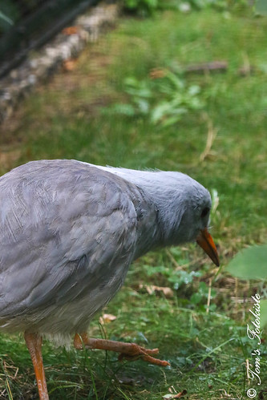</div>`)[0]);
                });
            
        

        circle_marker_ae22b2794a16001a210e0fed0113d5ba.bindPopup(popup_92cc4faf868bfdd1bd244adec7667e27)
        ;

        
    
    
            var circle_marker_670e384b57ac71bc28d7f1da9f2e9911 = L.circleMarker(
                [6.53, 53.66249575],
                {"bubblingMouseEvents": true, "color": "pink", "dashArray": null, "dashOffset": null, "fill": true, "fillColor": "pink", "fillOpacity": 0.2, "fillRule": "evenodd", "lineCap": "round", "lineJoin": "round", "opacity": 1.0, "radius": 8, "stroke": true, "weight": 3}
            ).addTo(map_e3037ef08b9763c8998e27844b8617dd);
        
    
        var popup_fa6a0138cd43fe4dcdf47dc179c4af45 = L.popup({"maxWidth": "100%"});

        
            
                circle_marker_670e384b57ac71bc28d7f1da9f2e9911.once('click', function() {
                    popup_fa6a0138cd43fe4dcdf47dc179c4af45.setContent($(`<div id="html_5ea19c1f2afe2ec26fff76b98be6fc68" style="width: 100.0%; height: 100.0%;">Greater painted-snipe - Rostratula benghalensis cluster 7  </div>`)[0]);
                });
            
        

        circle_marker_670e384b57ac71bc28d7f1da9f2e9911.bindPopup(popup_fa6a0138cd43fe4dcdf47dc179c4af45)
        ;

        
    
    
            var circle_marker_a863ebe4723cbaabca7bdc8a9d3d5053 = L.circleMarker(
                [-10.31, -57.9481633],
                {"bubblingMouseEvents": true, "color": "blue", "dashArray": null, "dashOffset": null, "fill": true, "fillColor": "blue", "fillOpacity": 0.2, "fillRule": "evenodd", "lineCap": "round", "lineJoin": "round", "opacity": 1.0, "radius": 8, "stroke": true, "weight": 3}
            ).addTo(map_e3037ef08b9763c8998e27844b8617dd);
        
    
        var popup_1cb0776fc28e9e7f6608def985ab29d7 = L.popup({"maxWidth": "100%"});

        
            
                circle_marker_a863ebe4723cbaabca7bdc8a9d3d5053.once('click', function() {
                    popup_1cb0776fc28e9e7f6608def985ab29d7.setContent($(`<div id="html_c1bdd94468ff4b8a7dfeec9f24fa4f15" style="width: 100.0%; height: 100.0%;">Black skimmer - Rynchops niger cluster 2  </div>`)[0]);
                });
            
        

        circle_marker_a863ebe4723cbaabca7bdc8a9d3d5053.bindPopup(popup_1cb0776fc28e9e7f6608def985ab29d7)
        ;

        
    
    
            var circle_marker_96dee2d7eadb8c89122c59f4c5c22309 = L.circleMarker(
                [5.58, -77.39002019],
                {"bubblingMouseEvents": true, "color": "purple", "dashArray": null, "dashOffset": null, "fill": true, "fillColor": "purple", "fillOpacity": 0.2, "fillRule": "evenodd", "lineCap": "round", "lineJoin": "round", "opacity": 1.0, "radius": 8, "stroke": true, "weight": 3}
            ).addTo(map_e3037ef08b9763c8998e27844b8617dd);
        
    
        var popup_b9c898c1be8e293a3a40c3760c62ead6 = L.popup({"maxWidth": "100%"});

        
            
                circle_marker_96dee2d7eadb8c89122c59f4c5c22309.once('click', function() {
                    popup_b9c898c1be8e293a3a40c3760c62ead6.setContent($(`<div id="html_8c4ae62bc72140ff124210885a2c9b99" style="width: 100.0%; height: 100.0%;">Broad-billed sapayoa - Sapayoa aenigma cluster 4  </div>`)[0]);
                });
            
        

        circle_marker_96dee2d7eadb8c89122c59f4c5c22309.bindPopup(popup_b9c898c1be8e293a3a40c3760c62ead6)
        ;

        
    
    
            var circle_marker_8f5b54565b6ad055f2d8d5bb4a9c9da9 = L.circleMarker(
                [-3.51, -62.38906005],
                {"bubblingMouseEvents": true, "color": "purple", "dashArray": null, "dashOffset": null, "fill": true, "fillColor": "purple", "fillOpacity": 0.2, "fillRule": "evenodd", "lineCap": "round", "lineJoin": "round", "opacity": 1.0, "radius": 8, "stroke": true, "weight": 3}
            ).addTo(map_e3037ef08b9763c8998e27844b8617dd);
        
    
        var popup_e1c72128d3c0e46f0120c50571bfeede = L.popup({"maxWidth": "100%"});

        
            
                circle_marker_8f5b54565b6ad055f2d8d5bb4a9c9da9.once('click', function() {
                    popup_e1c72128d3c0e46f0120c50571bfeede.setContent($(`<div id="html_216a4b25019fce5703682b50ead1b966" style="width: 100.0%; height: 100.0%;">Tawny-throated leaftosser - Sclerurus mexicanus cluster 4  </div>`)[0]);
                });
            
        

        circle_marker_8f5b54565b6ad055f2d8d5bb4a9c9da9.bindPopup(popup_e1c72128d3c0e46f0120c50571bfeede)
        ;

        
    
    
            var circle_marker_869cac9ce9a770650e55d2ecc35557a1 = L.circleMarker(
                [-26.09, -65.71030229],
                {"bubblingMouseEvents": true, "color": "green", "dashArray": null, "dashOffset": null, "fill": true, "fillColor": "green", "fillOpacity": 0.2, "fillRule": "evenodd", "lineCap": "round", "lineJoin": "round", "opacity": 1.0, "radius": 8, "stroke": true, "weight": 3}
            ).addTo(map_e3037ef08b9763c8998e27844b8617dd);
        
    
        var popup_2e4d0aa0ece2b956ea4ce9f86e464b15 = L.popup({"maxWidth": "100%"});

        
            
                circle_marker_869cac9ce9a770650e55d2ecc35557a1.once('click', function() {
                    popup_2e4d0aa0ece2b956ea4ce9f86e464b15.setContent($(`<div id="html_160dc3c0d5a86f4836e118ff703da5bf" style="width: 100.0%; height: 100.0%;">White-browed tapaculo - Scytalopus superciliaris cluster 3  </div>`)[0]);
                });
            
        

        circle_marker_869cac9ce9a770650e55d2ecc35557a1.bindPopup(popup_2e4d0aa0ece2b956ea4ce9f86e464b15)
        ;

        
    
    
            var circle_marker_3cde8d35150c3fd0ae40f04392e91f7b = L.circleMarker(
                [9.52, -83.25772204],
                {"bubblingMouseEvents": true, "color": "red", "dashArray": null, "dashOffset": null, "fill": true, "fillColor": "red", "fillOpacity": 0.2, "fillRule": "evenodd", "lineCap": "round", "lineJoin": "round", "opacity": 1.0, "radius": 8, "stroke": true, "weight": 3}
            ).addTo(map_e3037ef08b9763c8998e27844b8617dd);
        
    
        var popup_783c1d07f568babef37817cbcd75576d = L.popup({"maxWidth": "100%"});

        
            
                circle_marker_3cde8d35150c3fd0ae40f04392e91f7b.once('click', function() {
                    popup_783c1d07f568babef37817cbcd75576d.setContent($(`<div id="html_2740c3841d48aaaae022340f86399a2f" style="width: 100.0%; height: 100.0%;">Prong-billed barbet - Semnornis frantzii cluster 1  </div>`)[0]);
                });
            
        

        circle_marker_3cde8d35150c3fd0ae40f04392e91f7b.bindPopup(popup_783c1d07f568babef37817cbcd75576d)
        ;

        
    
    
            var circle_marker_438a3b18de0d33096e2febd554953057 = L.circleMarker(
                [18.57, 100.3777107],
                {"bubblingMouseEvents": true, "color": "pink", "dashArray": null, "dashOffset": null, "fill": true, "fillColor": "pink", "fillOpacity": 0.2, "fillRule": "evenodd", "lineCap": "round", "lineJoin": "round", "opacity": 1.0, "radius": 8, "stroke": true, "weight": 3}
            ).addTo(map_e3037ef08b9763c8998e27844b8617dd);
        
    
        var popup_a9d51cc1f4acbea5a3ded478dd8f511b = L.popup({"maxWidth": "100%"});

        
            
                circle_marker_438a3b18de0d33096e2febd554953057.once('click', function() {
                    popup_a9d51cc1f4acbea5a3ded478dd8f511b.setContent($(`<div id="html_1caf431fec6a1c9cda8acb1016848aa1" style="width: 100.0%; height: 100.0%;">Silver-breasted broadbill - Serilophus lunatus cluster 7  </div>`)[0]);
                });
            
        

        circle_marker_438a3b18de0d33096e2febd554953057.bindPopup(popup_a9d51cc1f4acbea5a3ded478dd8f511b)
        ;

        
    
    
            var circle_marker_50cfe6e49a13d3515ea50e507da9df4a = L.circleMarker(
                [36.005632, 126.967013],
                {"bubblingMouseEvents": true, "color": "yellow", "dashArray": null, "dashOffset": null, "fill": true, "fillColor": "yellow", "fillOpacity": 0.2, "fillRule": "evenodd", "lineCap": "round", "lineJoin": "round", "opacity": 1.0, "radius": 8, "stroke": true, "weight": 3}
            ).addTo(map_e3037ef08b9763c8998e27844b8617dd);
        
    
        var popup_6f52465f58bc6b0637e27d9416ab06e1 = L.popup({"maxWidth": "100%"});

        
            
                circle_marker_50cfe6e49a13d3515ea50e507da9df4a.once('click', function() {
                    popup_6f52465f58bc6b0637e27d9416ab06e1.setContent($(`<div id="html_8a176e04dfeeddcfd304e690e79a4802" style="width: 100.0%; height: 100.0%;">Crow tit - Sinosuthora webbiana cluster 6  </div>`)[0]);
                });
            
        

        circle_marker_50cfe6e49a13d3515ea50e507da9df4a.bindPopup(popup_6f52465f58bc6b0637e27d9416ab06e1)
        ;

        
    
    
            var circle_marker_35932147ea5bba256eba173ee4672bbc = L.circleMarker(
                [53.75, 86.96531826],
                {"bubblingMouseEvents": true, "color": "pink", "dashArray": null, "dashOffset": null, "fill": true, "fillColor": "pink", "fillOpacity": 0.2, "fillRule": "evenodd", "lineCap": "round", "lineJoin": "round", "opacity": 1.0, "radius": 8, "stroke": true, "weight": 3}
            ).addTo(map_e3037ef08b9763c8998e27844b8617dd);
        
    
        var popup_e8fad8e3ef179572558c55e3fa3a515d = L.popup({"maxWidth": "100%"});

        
            
                circle_marker_35932147ea5bba256eba173ee4672bbc.once('click', function() {
                    popup_e8fad8e3ef179572558c55e3fa3a515d.setContent($(`<div id="html_d176fa3dae19eacfe68d2e52e0b149c8" style="width: 100.0%; height: 100.0%;">Wood nuthatch - Sitta europaea cluster 7  </div>`)[0]);
                });
            
        

        circle_marker_35932147ea5bba256eba173ee4672bbc.bindPopup(popup_e8fad8e3ef179572558c55e3fa3a515d)
        ;

        
    
    
            var circle_marker_e9e6a83627a3330bbcedbd50bce98539 = L.circleMarker(
                [-8.09, 27.06045309],
                {"bubblingMouseEvents": true, "color": "purple", "dashArray": null, "dashOffset": null, "fill": true, "fillColor": "purple", "fillOpacity": 0.2, "fillRule": "evenodd", "lineCap": "round", "lineJoin": "round", "opacity": 1.0, "radius": 8, "stroke": true, "weight": 3}
            ).addTo(map_e3037ef08b9763c8998e27844b8617dd);
        
    
        var popup_8da22d9ea774c71473a2e64bdc0e1291 = L.popup({"maxWidth": "100%"});

        
            
                circle_marker_e9e6a83627a3330bbcedbd50bce98539.once('click', function() {
                    popup_8da22d9ea774c71473a2e64bdc0e1291.setContent($(`<div id="html_d4b94120632de17f5879754a07676581" style="width: 100.0%; height: 100.0%;">Smithornis capensis - Smithornis capensis cluster 4  </div>`)[0]);
                });
            
        

        circle_marker_e9e6a83627a3330bbcedbd50bce98539.bindPopup(popup_8da22d9ea774c71473a2e64bdc0e1291)
        ;

        
    
    
            var circle_marker_a40de4f5b34801078e3a59e9c4c765c7 = L.circleMarker(
                [-4.6, -62.84369904],
                {"bubblingMouseEvents": true, "color": "red", "dashArray": null, "dashOffset": null, "fill": true, "fillColor": "red", "fillOpacity": 0.2, "fillRule": "evenodd", "lineCap": "round", "lineJoin": "round", "opacity": 1.0, "radius": 8, "stroke": true, "weight": 3}
            ).addTo(map_e3037ef08b9763c8998e27844b8617dd);
        
    
        var popup_35077d992a952c184c952d81980cbbb4 = L.popup({"maxWidth": "100%"});

        
            
                circle_marker_a40de4f5b34801078e3a59e9c4c765c7.once('click', function() {
                    popup_35077d992a952c184c952d81980cbbb4.setContent($(`<div id="html_26934114f00787497bb39da940b1702b" style="width: 100.0%; height: 100.0%;">Black hawk-eagle - Spizaetus tyrannus cluster 1  </div>`)[0]);
                });
            
        

        circle_marker_a40de4f5b34801078e3a59e9c4c765c7.bindPopup(popup_35077d992a952c184c952d81980cbbb4)
        ;

        
    
    
            var circle_marker_ddeae0631bd49d8c725d883dcd2a5d62 = L.circleMarker(
                [68.31, -11.32852526],
                {"bubblingMouseEvents": true, "color": "blue", "dashArray": null, "dashOffset": null, "fill": true, "fillColor": "blue", "fillOpacity": 0.2, "fillRule": "evenodd", "lineCap": "round", "lineJoin": "round", "opacity": 1.0, "radius": 8, "stroke": true, "weight": 3}
            ).addTo(map_e3037ef08b9763c8998e27844b8617dd);
        
    
        var popup_6f960d2adca15738c97c585da6330fd5 = L.popup({"maxWidth": "100%"});

        
            
                circle_marker_ddeae0631bd49d8c725d883dcd2a5d62.once('click', function() {
                    popup_6f960d2adca15738c97c585da6330fd5.setContent($(`<div id="html_aff34a80cbefdefccbbda4d07e654aa3" style="width: 100.0%; height: 100.0%;">Arctic skua - Stercorarius parasiticus cluster 2  </div>`)[0]);
                });
            
        

        circle_marker_ddeae0631bd49d8c725d883dcd2a5d62.bindPopup(popup_6f960d2adca15738c97c585da6330fd5)
        ;

        
    
    
            var circle_marker_b621a789d2057ca98846db47f3e60f98 = L.circleMarker(
                [18.5325, 120.91389],
                {"bubblingMouseEvents": true, "color": "purple", "dashArray": null, "dashOffset": null, "fill": true, "fillColor": "purple", "fillOpacity": 0.2, "fillRule": "evenodd", "lineCap": "round", "lineJoin": "round", "opacity": 1.0, "radius": 8, "stroke": true, "weight": 3}
            ).addTo(map_e3037ef08b9763c8998e27844b8617dd);
        
    
        var popup_50a3f8ec07a6be20215e4381be0e89ac = L.popup({"maxWidth": "100%"});

        
            
                circle_marker_b621a789d2057ca98846db47f3e60f98.once('click', function() {
                    popup_50a3f8ec07a6be20215e4381be0e89ac.setContent($(`<div id="html_6f4d82534bf4f6c59e60eb2f72b72127" style="width: 100.0%; height: 100.0%;">Sterrhoptilus dennistouni - Sterrhoptilus dennistouni cluster 4  </div>`)[0]);
                });
            
        

        circle_marker_b621a789d2057ca98846db47f3e60f98.bindPopup(popup_50a3f8ec07a6be20215e4381be0e89ac)
        ;

        
    
    
            var circle_marker_da32a7e90632cac9c66fc0f3a546c5bc = L.circleMarker(
                [-25.83, 144.5099135],
                {"bubblingMouseEvents": true, "color": "green", "dashArray": null, "dashOffset": null, "fill": true, "fillColor": "green", "fillOpacity": 0.2, "fillRule": "evenodd", "lineCap": "round", "lineJoin": "round", "opacity": 1.0, "radius": 8, "stroke": true, "weight": 3}
            ).addTo(map_e3037ef08b9763c8998e27844b8617dd);
        
    
        var popup_91b7ee2f16fb3cd629c83217e1ab3bff = L.popup({"maxWidth": "100%"});

        
            
                circle_marker_da32a7e90632cac9c66fc0f3a546c5bc.once('click', function() {
                    popup_91b7ee2f16fb3cd629c83217e1ab3bff.setContent($(`<div id="html_89bda1df4fa0300702c47728daf9e8e3" style="width: 100.0%; height: 100.0%;">Struthidea cinerea - Struthidea cinerea cluster 3  </div>`)[0]);
                });
            
        

        circle_marker_da32a7e90632cac9c66fc0f3a546c5bc.bindPopup(popup_91b7ee2f16fb3cd629c83217e1ab3bff)
        ;

        
    
    
            var circle_marker_180ba3db4946285958e2726ad10800d8 = L.circleMarker(
                [51.6, 26.37421465],
                {"bubblingMouseEvents": true, "color": "blue", "dashArray": null, "dashOffset": null, "fill": true, "fillColor": "blue", "fillOpacity": 0.2, "fillRule": "evenodd", "lineCap": "round", "lineJoin": "round", "opacity": 1.0, "radius": 8, "stroke": true, "weight": 3}
            ).addTo(map_e3037ef08b9763c8998e27844b8617dd);
        
    
        var popup_c8f3c2bfdb4d960f5f405e8204e24864 = L.popup({"maxWidth": "100%"});

        
            
                circle_marker_180ba3db4946285958e2726ad10800d8.once('click', function() {
                    popup_c8f3c2bfdb4d960f5f405e8204e24864.setContent($(`<div id="html_32e78ffe57a0c4412d63552c3c6df23f" style="width: 100.0%; height: 100.0%;">Blackcap - Sylvia atricapilla cluster 2  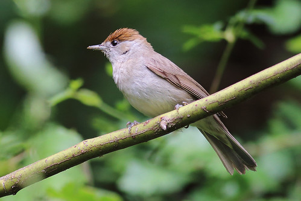</div>`)[0]);
                });
            
        

        circle_marker_180ba3db4946285958e2726ad10800d8.bindPopup(popup_c8f3c2bfdb4d960f5f405e8204e24864)
        ;

        
    
    
            var circle_marker_58d9f8c92612fb6539922356c0e9bd37 = L.circleMarker(
                [54.65, 37.01212237],
                {"bubblingMouseEvents": true, "color": "yellow", "dashArray": null, "dashOffset": null, "fill": true, "fillColor": "yellow", "fillOpacity": 0.2, "fillRule": "evenodd", "lineCap": "round", "lineJoin": "round", "opacity": 1.0, "radius": 8, "stroke": true, "weight": 3}
            ).addTo(map_e3037ef08b9763c8998e27844b8617dd);
        
    
        var popup_c9c4457c697226e32792748e4d802aaf = L.popup({"maxWidth": "100%"});

        
            
                circle_marker_58d9f8c92612fb6539922356c0e9bd37.once('click', function() {
                    popup_c9c4457c697226e32792748e4d802aaf.setContent($(`<div id="html_fb070eadfc7f89c7ce81e83148a37501" style="width: 100.0%; height: 100.0%;">Garden warbler - Sylvia borin cluster 6  </div>`)[0]);
                });
            
        

        circle_marker_58d9f8c92612fb6539922356c0e9bd37.bindPopup(popup_c9c4457c697226e32792748e4d802aaf)
        ;

        
    
    
            var circle_marker_3465abf184b960d1f622598f573b3595 = L.circleMarker(
                [0.77, 14.90930551],
                {"bubblingMouseEvents": true, "color": "red", "dashArray": null, "dashOffset": null, "fill": true, "fillColor": "red", "fillOpacity": 0.2, "fillRule": "evenodd", "lineCap": "round", "lineJoin": "round", "opacity": 1.0, "radius": 8, "stroke": true, "weight": 3}
            ).addTo(map_e3037ef08b9763c8998e27844b8617dd);
        
    
        var popup_143fddac296f7e9b953045136e3ef4ba = L.popup({"maxWidth": "100%"});

        
            
                circle_marker_3465abf184b960d1f622598f573b3595.once('click', function() {
                    popup_143fddac296f7e9b953045136e3ef4ba.setContent($(`<div id="html_7dc5fcf899bfe20e50ad0fb0755b3738" style="width: 100.0%; height: 100.0%;">Green crombec - Sylvietta virens cluster 1  </div>`)[0]);
                });
            
        

        circle_marker_3465abf184b960d1f622598f573b3595.bindPopup(popup_143fddac296f7e9b953045136e3ef4ba)
        ;

        
    
    
            var circle_marker_86a5c86321568776942c13efe3168c0d = L.circleMarker(
                [-34.27, -65.56555516],
                {"bubblingMouseEvents": true, "color": "pink", "dashArray": null, "dashOffset": null, "fill": true, "fillColor": "pink", "fillOpacity": 0.2, "fillRule": "evenodd", "lineCap": "round", "lineJoin": "round", "opacity": 1.0, "radius": 8, "stroke": true, "weight": 3}
            ).addTo(map_e3037ef08b9763c8998e27844b8617dd);
        
    
        var popup_755fccfe0f8e6b3150fe067e6785af4f = L.popup({"maxWidth": "100%"});

        
            
                circle_marker_86a5c86321568776942c13efe3168c0d.once('click', function() {
                    popup_755fccfe0f8e6b3150fe067e6785af4f.setContent($(`<div id="html_40a99d6bff5a198e051add362378be01" style="width: 100.0%; height: 100.0%;">Many-coloured rush-tyrant - Tachuris rubrigastra cluster 7  </div>`)[0]);
                });
            
        

        circle_marker_86a5c86321568776942c13efe3168c0d.bindPopup(popup_755fccfe0f8e6b3150fe067e6785af4f)
        ;

        
    
    
            var circle_marker_a5ff212c830ee2f69db276452cf6501f = L.circleMarker(
                [-29.6, -70.03525313],
                {"bubblingMouseEvents": true, "color": "purple", "dashArray": null, "dashOffset": null, "fill": true, "fillColor": "purple", "fillOpacity": 0.2, "fillRule": "evenodd", "lineCap": "round", "lineJoin": "round", "opacity": 1.0, "radius": 8, "stroke": true, "weight": 3}
            ).addTo(map_e3037ef08b9763c8998e27844b8617dd);
        
    
        var popup_3800268c39c76ed948040f7c4ce70d3f = L.popup({"maxWidth": "100%"});

        
            
                circle_marker_a5ff212c830ee2f69db276452cf6501f.once('click', function() {
                    popup_3800268c39c76ed948040f7c4ce70d3f.setContent($(`<div id="html_35d2962ce146344293a63633d5d6fe4d" style="width: 100.0%; height: 100.0%;">Grey-breasted seedsnipe - Thinocorus orbignyianus cluster 4  </div>`)[0]);
                });
            
        

        circle_marker_a5ff212c830ee2f69db276452cf6501f.bindPopup(popup_3800268c39c76ed948040f7c4ce70d3f)
        ;

        
    
    
            var circle_marker_0e4999eda2795e7c67aac9c887f311ca = L.circleMarker(
                [34.43, -87.99292923],
                {"bubblingMouseEvents": true, "color": "purple", "dashArray": null, "dashOffset": null, "fill": true, "fillColor": "purple", "fillOpacity": 0.2, "fillRule": "evenodd", "lineCap": "round", "lineJoin": "round", "opacity": 1.0, "radius": 8, "stroke": true, "weight": 3}
            ).addTo(map_e3037ef08b9763c8998e27844b8617dd);
        
    
        var popup_3a077cd602d8e9161ed749d96c6d3022 = L.popup({"maxWidth": "100%"});

        
            
                circle_marker_0e4999eda2795e7c67aac9c887f311ca.once('click', function() {
                    popup_3a077cd602d8e9161ed749d96c6d3022.setContent($(`<div id="html_4fe8fabac6c1c4a8ab903bb7d8b81c6f" style="width: 100.0%; height: 100.0%;">Carolina wren - Thryothorus ludovicianus cluster 4  </div>`)[0]);
                });
            
        

        circle_marker_0e4999eda2795e7c67aac9c887f311ca.bindPopup(popup_3a077cd602d8e9161ed749d96c6d3022)
        ;

        
    
    
            var circle_marker_ce2c1c444e99ab12df1df310455cd40b = L.circleMarker(
                [36.46, -120.0943869],
                {"bubblingMouseEvents": true, "color": "purple", "dashArray": null, "dashOffset": null, "fill": true, "fillColor": "purple", "fillOpacity": 0.2, "fillRule": "evenodd", "lineCap": "round", "lineJoin": "round", "opacity": 1.0, "radius": 8, "stroke": true, "weight": 3}
            ).addTo(map_e3037ef08b9763c8998e27844b8617dd);
        
    
        var popup_63fb50f8296aa5ebb3251c3a9711de8b = L.popup({"maxWidth": "100%"});

        
            
                circle_marker_ce2c1c444e99ab12df1df310455cd40b.once('click', function() {
                    popup_63fb50f8296aa5ebb3251c3a9711de8b.setContent($(`<div id="html_f85b3519994670c21d2e03d46a0e26ae" style="width: 100.0%; height: 100.0%;">California thrasher - Toxostoma redivivum cluster 4  </div>`)[0]);
                });
            
        

        circle_marker_ce2c1c444e99ab12df1df310455cd40b.bindPopup(popup_63fb50f8296aa5ebb3251c3a9711de8b)
        ;

        
    
    
            var circle_marker_ba1d77912f58b80a80c7080a036d04b4 = L.circleMarker(
                [-24.17, 22.72385103],
                {"bubblingMouseEvents": true, "color": "pink", "dashArray": null, "dashOffset": null, "fill": true, "fillColor": "pink", "fillOpacity": 0.2, "fillRule": "evenodd", "lineCap": "round", "lineJoin": "round", "opacity": 1.0, "radius": 8, "stroke": true, "weight": 3}
            ).addTo(map_e3037ef08b9763c8998e27844b8617dd);
        
    
        var popup_cf4950c5a90c1b480afc36579ecc4859 = L.popup({"maxWidth": "100%"});

        
            
                circle_marker_ba1d77912f58b80a80c7080a036d04b4.once('click', function() {
                    popup_cf4950c5a90c1b480afc36579ecc4859.setContent($(`<div id="html_88d5ac2418d98369a6f28c93bd457d5c" style="width: 100.0%; height: 100.0%;">Pied barbet - Tricholaema leucomelas cluster 7  </div>`)[0]);
                });
            
        

        circle_marker_ba1d77912f58b80a80c7080a036d04b4.bindPopup(popup_cf4950c5a90c1b480afc36579ecc4859)
        ;

        
    
    
            var circle_marker_94b55c2fa1ed2fe22337f7407bd3ec9f = L.circleMarker(
                [-3.11, -63.4709018],
                {"bubblingMouseEvents": true, "color": "blue", "dashArray": null, "dashOffset": null, "fill": true, "fillColor": "blue", "fillOpacity": 0.2, "fillRule": "evenodd", "lineCap": "round", "lineJoin": "round", "opacity": 1.0, "radius": 8, "stroke": true, "weight": 3}
            ).addTo(map_e3037ef08b9763c8998e27844b8617dd);
        
    
        var popup_c467442290c1f5e54854bc5eb9fee66b = L.popup({"maxWidth": "100%"});

        
            
                circle_marker_94b55c2fa1ed2fe22337f7407bd3ec9f.once('click', function() {
                    popup_c467442290c1f5e54854bc5eb9fee66b.setContent($(`<div id="html_503af311655b957f3f1f295f2ecda764" style="width: 100.0%; height: 100.0%;">Black-tailed trogon - Trogon melanurus cluster 2  </div>`)[0]);
                });
            
        

        circle_marker_94b55c2fa1ed2fe22337f7407bd3ec9f.bindPopup(popup_c467442290c1f5e54854bc5eb9fee66b)
        ;

        
    
    
            var circle_marker_9613c3d80e1dd5737aa99403420fb5b9 = L.circleMarker(
                [-16.29, -58.79899625],
                {"bubblingMouseEvents": true, "color": "blue", "dashArray": null, "dashOffset": null, "fill": true, "fillColor": "blue", "fillOpacity": 0.2, "fillRule": "evenodd", "lineCap": "round", "lineJoin": "round", "opacity": 1.0, "radius": 8, "stroke": true, "weight": 3}
            ).addTo(map_e3037ef08b9763c8998e27844b8617dd);
        
    
        var popup_3dc26ca84922c12e66d4f058a9ede3f5 = L.popup({"maxWidth": "100%"});

        
            
                circle_marker_9613c3d80e1dd5737aa99403420fb5b9.once('click', function() {
                    popup_3dc26ca84922c12e66d4f058a9ede3f5.setContent($(`<div id="html_7a82cf2d43c47da5148c9db082adce9e" style="width: 100.0%; height: 100.0%;">Fork-tailed flycatcher - Tyrannus savana cluster 2  </div>`)[0]);
                });
            
        

        circle_marker_9613c3d80e1dd5737aa99403420fb5b9.bindPopup(popup_3dc26ca84922c12e66d4f058a9ede3f5)
        ;

        
    
    
            var circle_marker_cc4d116df219ff9263f5923a5231db3b = L.circleMarker(
                [58.79, -17.82477091],
                {"bubblingMouseEvents": true, "color": "blue", "dashArray": null, "dashOffset": null, "fill": true, "fillColor": "blue", "fillOpacity": 0.2, "fillRule": "evenodd", "lineCap": "round", "lineJoin": "round", "opacity": 1.0, "radius": 8, "stroke": true, "weight": 3}
            ).addTo(map_e3037ef08b9763c8998e27844b8617dd);
        
    
        var popup_70ed629a3adcba1e19ef938f5c33f2b8 = L.popup({"maxWidth": "100%"});

        
            
                circle_marker_cc4d116df219ff9263f5923a5231db3b.once('click', function() {
                    popup_70ed629a3adcba1e19ef938f5c33f2b8.setContent($(`<div id="html_f1115dcd0276144ef7df25e83ad578c5" style="width: 100.0%; height: 100.0%;">Common murre - Uria aalge cluster 2  </div>`)[0]);
                });
            
        

        circle_marker_cc4d116df219ff9263f5923a5231db3b.bindPopup(popup_70ed629a3adcba1e19ef938f5c33f2b8)
        ;

        
    
    
            var circle_marker_fe21e4d7c19a43f3ba049a9300b48710 = L.circleMarker(
                [-22.11, 24.71733486],
                {"bubblingMouseEvents": true, "color": "red", "dashArray": null, "dashOffset": null, "fill": true, "fillColor": "red", "fillOpacity": 0.2, "fillRule": "evenodd", "lineCap": "round", "lineJoin": "round", "opacity": 1.0, "radius": 8, "stroke": true, "weight": 3}
            ).addTo(map_e3037ef08b9763c8998e27844b8617dd);
        
    
        var popup_f5a36b43ea6f1bfefd025dbb55a2d7ad = L.popup({"maxWidth": "100%"});

        
            
                circle_marker_fe21e4d7c19a43f3ba049a9300b48710.once('click', function() {
                    popup_f5a36b43ea6f1bfefd025dbb55a2d7ad.setContent($(`<div id="html_254ffc22681ce9876bc2a1f10688389b" style="width: 100.0%; height: 100.0%;">Red-faced mousebird - Urocolius indicus cluster 1  </div>`)[0]);
                });
            
        

        circle_marker_fe21e4d7c19a43f3ba049a9300b48710.bindPopup(popup_f5a36b43ea6f1bfefd025dbb55a2d7ad)
        ;

        
    
    
            var circle_marker_e8e081aef678575edd0313f542dc637d = L.circleMarker(
                [1.29, 21.31265528],
                {"bubblingMouseEvents": true, "color": "pink", "dashArray": null, "dashOffset": null, "fill": true, "fillColor": "pink", "fillOpacity": 0.2, "fillRule": "evenodd", "lineCap": "round", "lineJoin": "round", "opacity": 1.0, "radius": 8, "stroke": true, "weight": 3}
            ).addTo(map_e3037ef08b9763c8998e27844b8617dd);
        
    
        var popup_1354d4f1c1a25d149724a05965dbfa11 = L.popup({"maxWidth": "100%"});

        
            
                circle_marker_e8e081aef678575edd0313f542dc637d.once('click', function() {
                    popup_1354d4f1c1a25d149724a05965dbfa11.setContent($(`<div id="html_94d104f6871c55fb52e63e2ab96fdce6" style="width: 100.0%; height: 100.0%;">Village indigobird - Vidua chalybeata cluster 7  </div>`)[0]);
                });
            
        

        circle_marker_e8e081aef678575edd0313f542dc637d.bindPopup(popup_1354d4f1c1a25d149724a05965dbfa11)
        ;

        
    
    
            var circle_marker_c154c8adbb8406a93b7d84ba02ca894b = L.circleMarker(
                [-3.03, 21.13196244],
                {"bubblingMouseEvents": true, "color": "blue", "dashArray": null, "dashOffset": null, "fill": true, "fillColor": "blue", "fillOpacity": 0.2, "fillRule": "evenodd", "lineCap": "round", "lineJoin": "round", "opacity": 1.0, "radius": 8, "stroke": true, "weight": 3}
            ).addTo(map_e3037ef08b9763c8998e27844b8617dd);
        
    
        var popup_812ba5f082f70b506c484372ce39147a = L.popup({"maxWidth": "100%"});

        
            
                circle_marker_c154c8adbb8406a93b7d84ba02ca894b.once('click', function() {
                    popup_812ba5f082f70b506c484372ce39147a.setContent($(`<div id="html_a87c3278ed622faefbdcd64c3710defc" style="width: 100.0%; height: 100.0%;">Pin-tailed whydah - Vidua macroura cluster 2  </div>`)[0]);
                });
            
        

        circle_marker_c154c8adbb8406a93b7d84ba02ca894b.bindPopup(popup_812ba5f082f70b506c484372ce39147a)
        ;

        
    
    
            var circle_marker_65748f594d5e80faeed4f42ac11eaa05 = L.circleMarker(
                [20.76, -75.54652453],
                {"bubblingMouseEvents": true, "color": "green", "dashArray": null, "dashOffset": null, "fill": true, "fillColor": "green", "fillOpacity": 0.2, "fillRule": "evenodd", "lineCap": "round", "lineJoin": "round", "opacity": 1.0, "radius": 8, "stroke": true, "weight": 3}
            ).addTo(map_e3037ef08b9763c8998e27844b8617dd);
        
    
        var popup_a4154e766f269a90488f1f522ebddb9f = L.popup({"maxWidth": "100%"});

        
            
                circle_marker_65748f594d5e80faeed4f42ac11eaa05.once('click', function() {
                    popup_a4154e766f269a90488f1f522ebddb9f.setContent($(`<div id="html_ae0829781cd434c55870c7470afb5ff4" style="width: 100.0%; height: 100.0%;">Black-whiskered vireo - Vireo altiloquus cluster 3  </div>`)[0]);
                });
            
        

        circle_marker_65748f594d5e80faeed4f42ac11eaa05.bindPopup(popup_a4154e766f269a90488f1f522ebddb9f)
        ;

        
    
    
            var circle_marker_1de13bfaadac5992b6a7173d509319fb = L.circleMarker(
                [-24.337606, -128.3398],
                {"bubblingMouseEvents": true, "color": "green", "dashArray": null, "dashOffset": null, "fill": true, "fillColor": "green", "fillOpacity": 0.2, "fillRule": "evenodd", "lineCap": "round", "lineJoin": "round", "opacity": 1.0, "radius": 8, "stroke": true, "weight": 3}
            ).addTo(map_e3037ef08b9763c8998e27844b8617dd);
        
    
        var popup_6a9fe55a64c67b9facdc93c7b976095a = L.popup({"maxWidth": "100%"});

        
            
                circle_marker_1de13bfaadac5992b6a7173d509319fb.once('click', function() {
                    popup_6a9fe55a64c67b9facdc93c7b976095a.setContent($(`<div id="html_18cc0c644845127ca7d5ed2af57562bb" style="width: 100.0%; height: 100.0%;">Henderson crake - Zapornia atra cluster 3  </div>`)[0]);
                });
            
        

        circle_marker_1de13bfaadac5992b6a7173d509319fb.bindPopup(popup_6a9fe55a64c67b9facdc93c7b976095a)
        ;

        
    
</script>
</html>